<title>Underfoot Looks</title>
<meta name="claude:viewport-fit-sides" content="cover">
<link rel="preconnect" href="https://fonts.googleapis.com">
<link rel="preconnect" href="https://fonts.gstatic.com" crossorigin>
<link href="https://fonts.googleapis.com/css2?family=Instrument+Serif:ital@0;1&family=IBM+Plex+Sans:wght@400;500&family=IBM+Plex+Mono:wght@500;600&display=swap" rel="stylesheet">
<style>
/* Layout: a contact sheet. Seven rows of the same four frames, then one live screen to try any of them.
   The library frame (warm near-black, the Ashwake whites); the accent is the lantern's amber. One dark look by choice. */
:root {
  --ground: #0d0c0e;
  --panel: #161417;
  --rule: #2c292d;
  --text: #e8e4dd;
  --muted: #a39d97;
  --dim: #6e6a6b;
  --amber: #cfaa69;
  --display: "Instrument Serif", "Iowan Old Style", Georgia, serif;
  --body: "IBM Plex Sans", "Helvetica Neue", Arial, sans-serif;
  --mono: "IBM Plex Mono", ui-monospace, Menlo, monospace;
  color-scheme: dark;
}
html { background: var(--ground); }
body { background: var(--ground); color: var(--text); font: 400 16px/1.6 var(--body); -webkit-font-smoothing: antialiased; margin: 0; }
.wrap { max-width: 1240px; margin: 0 auto; padding-left: max(16px, env(safe-area-inset-left, 0px), min(4vw, 40px)); padding-right: max(16px, env(safe-area-inset-right, 0px), min(4vw, 40px)); padding-block: 26px 72px; display: grid; gap: 44px; }
header.top { display: grid; gap: 6px; }
.eyebrow { margin: 0; font: 600 12px/1.2 var(--mono); letter-spacing: .14em; text-transform: uppercase; color: var(--muted); }
h1 { margin: 0; font: 400 clamp(46px, 9vw, 92px)/.95 var(--display); letter-spacing: -.01em; color: var(--text); text-wrap: balance; }
h1 em { color: var(--amber); font-style: italic; }
.lede { margin: 8px 0 0; max-width: 68ch; color: var(--muted); text-wrap: pretty; }
.piece { display: grid; gap: 18px; border-top: 1px solid var(--rule); padding-top: 26px; min-width: 0; }
.piece-head { display: flex; flex-wrap: wrap; align-items: baseline; gap: 4px 16px; }
.num { font: 600 12px/1 var(--mono); letter-spacing: .14em; color: var(--dim); }
h2 { margin: 0; font: 400 clamp(36px, 6vw, 56px)/1 var(--display); color: var(--text); text-wrap: balance; }
h2 em { font-style: italic; color: var(--muted); font-size: .55em; margin-left: .3em; }
@media (max-width: 560px) { h2 em { display: block; margin: 8px 0 0; } }
.say { margin: 0; max-width: 68ch; color: var(--muted); text-wrap: pretty; }
.say kbd, .keys kbd { font: 500 12px/1.6 var(--mono); color: var(--text); border: 1px solid var(--rule); padding: 0 5px; }
[hidden] { display: none !important; }

/* ---- the sheet */
.sheet { display: grid; gap: 34px; min-width: 0; }
.cols-head { display: grid; grid-template-columns: repeat(4, minmax(0, 1fr)); gap: 6px; font: 600 11px/1.2 var(--mono); letter-spacing: .12em; text-transform: uppercase; color: var(--dim); position: sticky; top: env(safe-area-inset-top, 0px); z-index: 2; background: var(--ground); padding-block: 8px; border-bottom: 1px solid var(--rule); }
.look { display: grid; gap: 10px; min-width: 0; scroll-margin-top: 48px; }
.look-head { display: flex; flex-wrap: wrap; align-items: baseline; gap: 6px 14px; }
.look-head h3 { margin: 0; font: 400 clamp(28px, 4vw, 38px)/1 var(--display); color: var(--text); }
.look-head .tag { font: 600 11px/1 var(--mono); letter-spacing: .12em; text-transform: uppercase; color: var(--amber); border: 1px solid var(--rule); padding: 5px 7px; }
.look-head .what { flex: 1 1 32ch; margin: 0; color: var(--muted); font-size: 15px; max-width: 74ch; min-width: 0; }
.frames { display: grid; grid-template-columns: repeat(4, minmax(0, 1fr)); gap: 6px; }
.still { position: relative; display: block; padding: 0; margin: 0; border: 0; background: #000; cursor: zoom-in; aspect-ratio: 16 / 9; max-width: 100%; overflow: hidden; }
.still img { display: block; width: 100%; height: 100%; object-fit: cover; }
.still span { position: absolute; left: 6px; bottom: 6px; font: 600 10px/1 var(--mono); letter-spacing: .1em; text-transform: uppercase; color: var(--text); background: rgba(13, 12, 14, .78); padding: 4px 5px; display: none; }
.still:hover img { filter: brightness(1.08); }
.still:focus-visible { outline: 2px solid var(--amber); outline-offset: 2px; }
.look-foot { display: grid; grid-template-columns: minmax(0, 1fr) minmax(0, 1fr) auto; gap: 8px 28px; align-items: start; }
.look-foot p { margin: 0; color: var(--muted); font-size: 14.5px; max-width: 60ch; }
.look-foot b { display: block; font: 600 11px/1.6 var(--mono); letter-spacing: .12em; text-transform: uppercase; color: var(--text); }
.look-foot .risk b { color: var(--dim); }
.pal { display: grid; grid-auto-flow: column; grid-auto-columns: 9px; height: 12px; border: 1px solid var(--rule); align-self: center; }
.pal i { display: block; }
.btn { font: 600 12px/1 var(--mono); letter-spacing: .06em; color: var(--muted); background: var(--panel); border: 1px solid var(--rule); padding: 10px 12px; cursor: pointer; min-height: 40px; }
.btn:hover { color: var(--text); }
button:focus-visible { outline: 2px solid var(--amber); outline-offset: 2px; }
@media (max-width: 760px) {
  .cols-head { display: none; }
  .frames { grid-template-columns: repeat(2, minmax(0, 1fr)); }
  .still span { display: block; }
  .look-foot { grid-template-columns: minmax(0, 1fr); }
}

/* ---- which fits */
.read { display: grid; gap: 10px; border: 1px solid var(--rule); background: var(--panel); padding: 18px 20px; }
.read h3 { margin: 0; font: 600 12px/1.2 var(--mono); letter-spacing: .12em; text-transform: uppercase; color: var(--amber); }
.read ul { margin: 0; padding-left: 1.1em; display: grid; gap: 6px; color: var(--muted); max-width: 80ch; }
.read li::marker { color: var(--amber); }
.read b { color: var(--text); font-weight: 500; }

/* ---- the live screen */
.lookbar { display: flex; flex-wrap: wrap; gap: 6px; }
.lookbar button { display: inline-flex; align-items: center; gap: 8px; font: 600 12px/1 var(--mono); letter-spacing: .04em; color: var(--muted); background: var(--panel); border: 1px solid var(--rule); padding: 9px 11px; cursor: pointer; min-height: 40px; }
.lookbar button:hover { color: var(--text); }
.lookbar button[aria-pressed="true"] { color: var(--ground); background: var(--text); border-color: var(--text); }
.chip { display: inline-grid; grid-auto-flow: column; grid-auto-columns: 6px; height: 14px; border: 1px solid rgba(0, 0, 0, .35); }
.chip i { display: block; }
.screen { position: relative; background: #000; overflow: hidden; user-select: none; -webkit-user-select: none; min-width: 0; width: 100%; max-width: 100%; aspect-ratio: 16 / 9; touch-action: pan-y; -webkit-touch-callout: none; }
.screen canvas { position: absolute; inset: 0; width: 100%; height: 100%; display: block; outline: none; image-rendering: pixelated; image-rendering: crisp-edges; }
.screen canvas:focus-visible { outline: 2px solid var(--amber); outline-offset: -2px; }
.msg { position: absolute; inset: 0; display: grid; place-items: center; padding: 16px; text-align: center; font: 600 13px/1.4 var(--mono); color: var(--muted); background: var(--ground); }
.bar { display: flex; flex-wrap: wrap; gap: 8px; align-items: center; }
.bar .lbl { font: 600 11px/1 var(--mono); letter-spacing: .12em; text-transform: uppercase; color: var(--dim); margin-left: 8px; }
.bar button { font: 600 12px/1 var(--mono); letter-spacing: .06em; color: var(--muted); background: var(--panel); border: 1px solid var(--rule); padding: 10px 12px; cursor: pointer; min-height: 40px; touch-action: none; -webkit-user-select: none; user-select: none; }
.bar button:hover { color: var(--text); }
.bar button[aria-pressed="true"] { color: var(--ground); background: var(--text); border-color: var(--text); }
.bar #lookBtn { color: var(--ground); background: var(--amber); border-color: var(--amber); }
.bar #lookBtn.held { background: var(--text); border-color: var(--text); }
.keys { margin: 0; font: 500 12px/1.8 var(--mono); color: var(--muted); }
@media (pointer: coarse) { .keys .desk { display: none; } }
@media (pointer: fine) { .keys .touch { display: none; } }
.now { display: grid; gap: 8px; border-left: 2px solid var(--amber); padding: 4px 0 4px 16px; }
.now h3 { margin: 0; font: 400 30px/1 var(--display); color: var(--text); }
.now p { margin: 0; color: var(--muted); font-size: 15px; max-width: 74ch; }
.now .look-foot { grid-template-columns: minmax(0, 1fr) minmax(0, 1fr); }
@media (max-width: 760px) { .now .look-foot { grid-template-columns: minmax(0, 1fr); } }

/* ---- the large view */
dialog.box { border: 1px solid var(--rule); background: var(--ground); color: var(--text); padding: 0; width: min(1200px, calc(100vw - 32px)); max-width: none; max-height: calc(100dvh - 32px); overflow: auto; }
dialog.box::backdrop { background: rgba(6, 6, 7, .86); }
.box-in { display: grid; gap: 10px; padding: 12px; }
.box-top { display: flex; flex-wrap: wrap; align-items: baseline; justify-content: space-between; gap: 6px 14px; }
.box-top h3 { margin: 0; font: 400 28px/1 var(--display); }
.box-top h3 span { font: 600 11px/1 var(--mono); letter-spacing: .12em; text-transform: uppercase; color: var(--muted); margin-left: 10px; }
.box img { display: block; width: 100%; height: auto; aspect-ratio: 16 / 9; background: #000; image-rendering: auto; }
.box-nav { display: flex; flex-wrap: wrap; gap: 6px; align-items: center; }
.box-nav .sp { flex: 1; }
.box-nav .hint { font: 500 11.5px/1.4 var(--mono); color: var(--dim); }
@media (pointer: coarse) { .box-nav .hint { display: none; } }

footer { border-top: 1px solid var(--rule); padding-top: 16px; font: 500 12.5px/1.7 var(--mono); color: var(--muted); }
footer p { margin: 0; max-width: 92ch; }
@media (prefers-reduced-motion: reduce) { html { scroll-behavior: auto; } }
</style>
<main class="wrap">
  <header class="top">
    <p class="eyebrow">Style library / Volume 17</p>
    <h1>Underfoot, <em>seven looks</em></h1>
    <p class="lede">The town, the giant and the lantern from Volume 16, drawn seven ways. Only the picture changes: the palette, the light, the sky, the fog and the grain. The hunt, the camera and the timing stay the same, and each column below is the same frame of the same run, so the looks compare like for like.</p>
  </header>

  <section class="piece" aria-labelledby="sheetTitle">
    <div class="piece-head"><span class="num">17.1</span><h2 id="sheetTitle">Side by side <em>four moments, seven looks</em></h2></div>
    <p class="say">Each row is one look at the same four moments: the giant far off in the valley, the lantern searching the streets, looking up at it from the street, and its face when it finds you. Click a frame to see it large. Then <kbd>↑</kbd> <kbd>↓</kbd> change the look and <kbd>←</kbd> <kbd>→</kbd> the moment.</p>
    <div class="sheet" id="sheet">
      <div class="cols-head" aria-hidden="true"><span>In the valley</span><span>The search</span><span>Looking up</span><span>Its face</span></div>

      <article class="look" id="look-ashwake" data-look="ashwake">
        <div class="look-head"><h3>Ashwake grey</h3><span class="tag">Volume 16 now</span><span class="pal" data-pal="ashwake" role="img" aria-label="Palette: eight warm greys, then amber, moss, slate and rust ramps"></span><p class="what">The game as it stands. Eight warm greys and four dull ramps; the lantern, the roofs and the cloak carry the colour.</p></div>
        <div class="frames"><button class="still" type="button" data-shot="valley">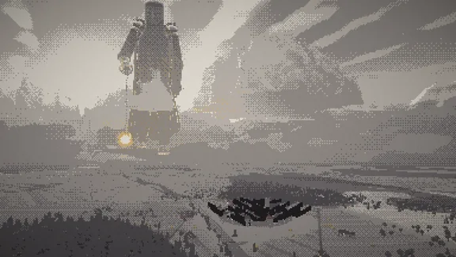<span>In the valley</span></button><button class="still" type="button" data-shot="search">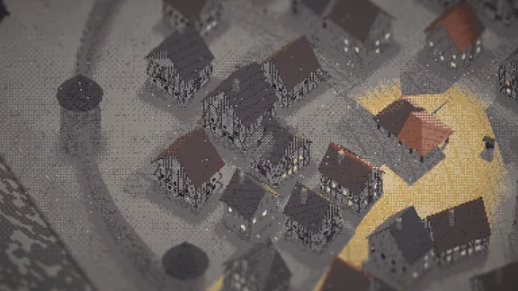<span>The search</span></button><button class="still" type="button" data-shot="look">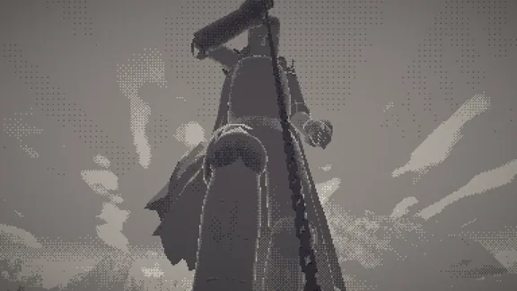<span>Looking up</span></button><button class="still" type="button" data-shot="face">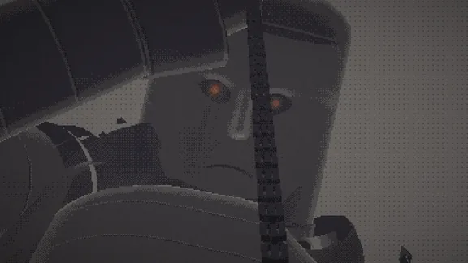<span>Its face</span></button></div>
        <div class="look-foot"><p><b>For this game</b>The lantern is the one strong colour in the hunt, so the light reads, and the grey keeps the scale quiet and old.</p><p class="risk"><b>Risk</b>It sits in the middle. Less dread than the night or the red, and calm and search look alike until the cloud comes.</p><button class="btn" type="button" data-play="ashwake">Play this look</button></div>
      </article>

      <article class="look" id="look-night" data-look="night">
        <div class="look-head"><h3>Night lantern</h3><span class="pal" data-pal="night" role="img" aria-label="Palette: eight blue-black greys, then amber, moss, moon blue and rust ramps"></span><p class="what">Moonlit blue-blacks under stars. The lantern and a few windows are the only warm light.</p></div>
        <div class="frames"><button class="still" type="button" data-shot="valley">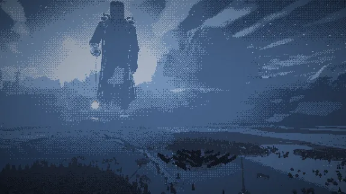<span>In the valley</span></button><button class="still" type="button" data-shot="search">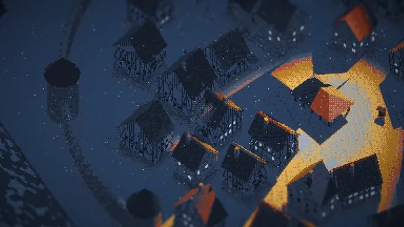<span>The search</span></button><button class="still" type="button" data-shot="look">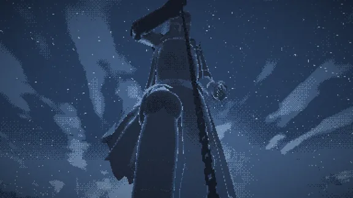<span>Looking up</span></button><button class="still" type="button" data-shot="face">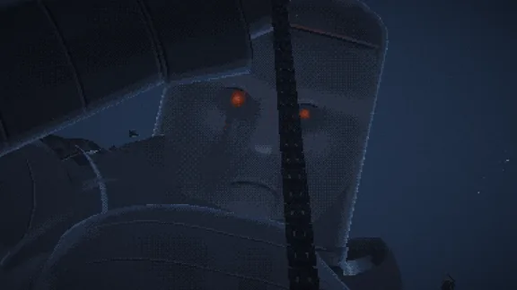<span>Its face</span></button></div>
        <div class="look-foot"><p><b>For this game</b>The clearest hiding game of the seven: amber means seen, blue means hidden. Against the stars the giant is a silhouette with a cold rim.</p><p class="risk"><b>Risk</b>Blue night is a common look, and the moon has to stay bright enough to play by, so it is lighter than a real night.</p><button class="btn" type="button" data-play="night">Play this look</button></div>
      </article>

      <article class="look" id="look-blood" data-look="blood">
        <div class="look-head"><h3>Ash and blood</h3><span class="pal" data-pal="blood" role="img" aria-label="Palette: eight warm blacks to bone, then blood, ember, olive and steel ramps"></span><p class="what">Warm blacks to bone, one blood-red ramp, a huge low sun behind the giant and ash falling. The lantern is bone-white.</p></div>
        <div class="frames"><button class="still" type="button" data-shot="valley">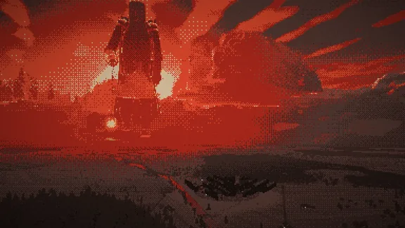<span>In the valley</span></button><button class="still" type="button" data-shot="search">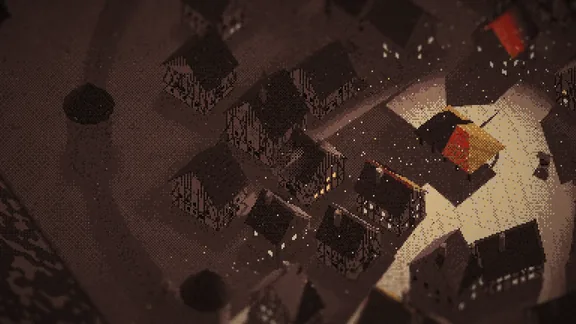<span>The search</span></button><button class="still" type="button" data-shot="look">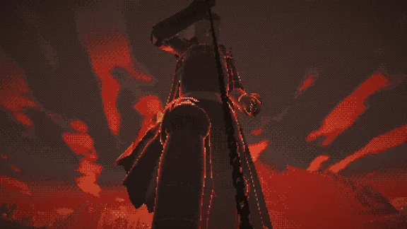<span>Looking up</span></button><button class="still" type="button" data-shot="face">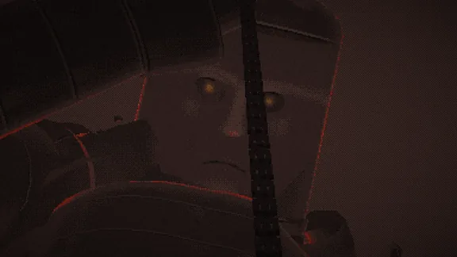<span>Its face</span></button></div>
        <div class="look-foot"><p><b>For this game</b>The most dread. The red sky makes its outline read from the street, and the pale pool still stands out on the dark stones.</p><p class="risk"><b>Risk</b>Red tires the eye over a long session, and this is the look closest to Bloodborne and Berserk. The red has to stay in the sky and the accents.</p><button class="btn" type="button" data-play="blood">Play this look</button></div>
      </article>

      <article class="look" id="look-fog" data-look="fog">
        <div class="look-head"><h3>White fog</h3><span class="pal" data-pal="fog" role="img" aria-label="Palette: eight cool greys to white, then amber, moss, slate and rust ramps"></span><p class="what">Cool greys and a low, dense fog. The streets round you stay clear, the valley goes white, and only its upper body rises out of the bank.</p></div>
        <div class="frames"><button class="still" type="button" data-shot="valley">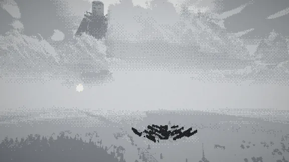<span>In the valley</span></button><button class="still" type="button" data-shot="search">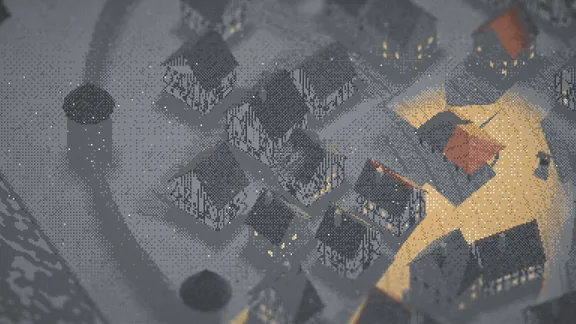<span>The search</span></button><button class="still" type="button" data-shot="look">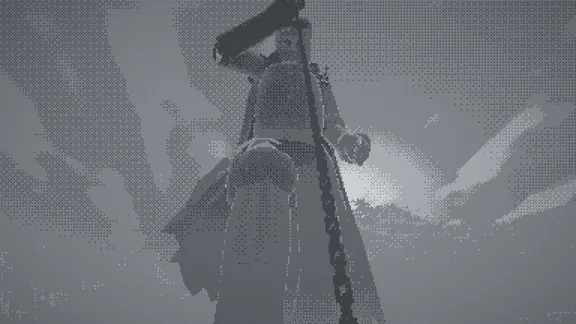<span>Looking up</span></button><button class="still" type="button" data-shot="face">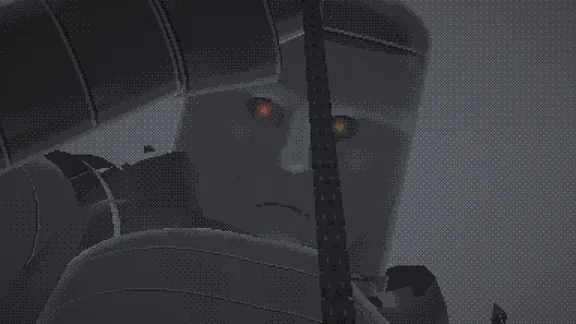<span>Its face</span></button></div>
        <div class="look-foot"><p><b>For this game</b>You hear it before you see it. The fog hides the scale until it is close, and the lantern pool reads once the fog darkens.</p><p class="risk"><b>Risk</b>Far shots go flat and nearly empty, and looking up gives grey on grey.</p><button class="btn" type="button" data-play="fog">Play this look</button></div>
      </article>

      <article class="look" id="look-winter" data-look="winter">
        <div class="look-head"><h3>Winter village</h3><span class="pal" data-pal="winter" role="img" aria-label="Palette: eight cold greys to snow white, then red, amber, ice and pine ramps"></span><p class="what">Ashwake's first look: snow on every upward face, its shoulders included, black timber, a red accent ramp and snow falling.</p></div>
        <div class="frames"><button class="still" type="button" data-shot="valley">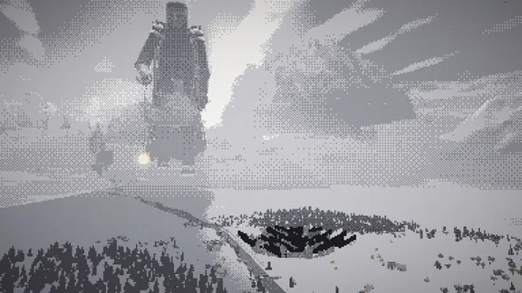<span>In the valley</span></button><button class="still" type="button" data-shot="search">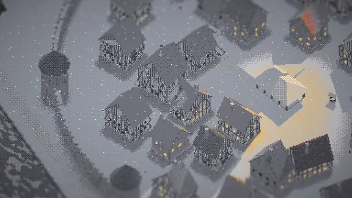<span>The search</span></button><button class="still" type="button" data-shot="look">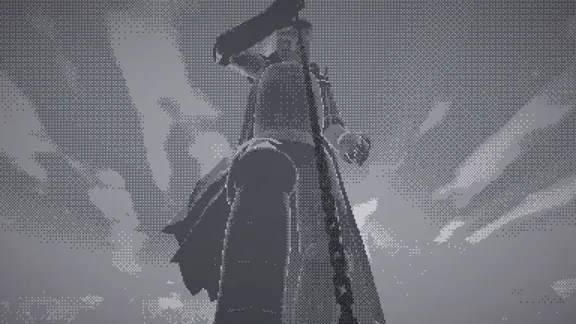<span>Looking up</span></button><button class="still" type="button" data-shot="face">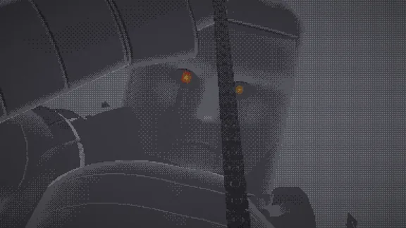<span>Its face</span></button></div>
        <div class="look-foot"><p><b>For this game</b>The cleanest town of the seven, and snow lying on its armour makes it feel old and still.</p><p class="risk"><b>Risk</b>Lamplight on snow is pale on pale, so light and shadow read less well. Snow also feels cosy rather than frightening.</p><button class="btn" type="button" data-play="winter">Play this look</button></div>
      </article>

      <article class="look" id="look-colossus" data-look="colossus">
        <div class="look-head"><h3>Sunlit colossus</h3><span class="pal" data-pal="colossus" role="img" aria-label="Palette: eight bleached greys, then sage, sand, sky and terracotta ramps"></span><p class="what">A high sun in a blue sky, white cloud, bloom, bleached ground, sage and terracotta.</p></div>
        <div class="frames"><button class="still" type="button" data-shot="valley">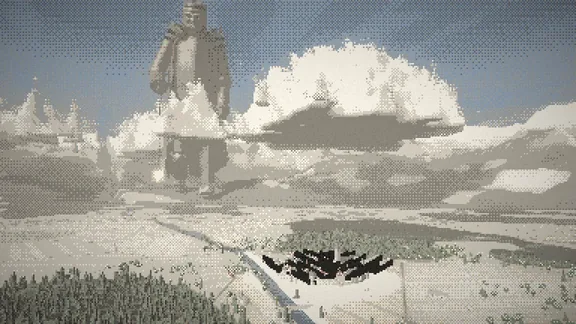<span>In the valley</span></button><button class="still" type="button" data-shot="search">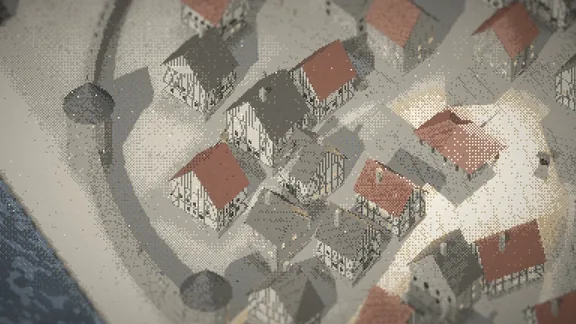<span>The search</span></button><button class="still" type="button" data-shot="look">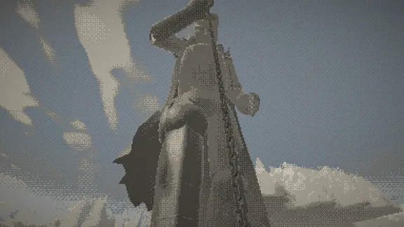<span>Looking up</span></button><button class="still" type="button" data-shot="face">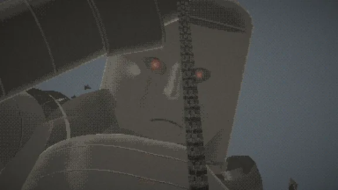<span>Its face</span></button></div>
        <div class="look-foot"><p><b>For this game</b>The most epic giant. It stands in the cloud lit from the side, and its size reads at once.</p><p class="risk"><b>Risk</b>It works against the game. In daylight the lantern is a faint pool, so hiding barely reads unless cloud covers the sun for the whole hunt.</p><button class="btn" type="button" data-play="colossus">Play this look</button></div>
      </article>

      <article class="look" id="look-onebit" data-look="onebit">
        <div class="look-head"><h3>One bit</h3><span class="pal" data-pal="onebit" role="img" aria-label="Palette: black and paper only"></span><p class="what">Black and paper only, in three flat levels: ink, a 50% screen and paper.</p></div>
        <div class="frames"><button class="still" type="button" data-shot="valley">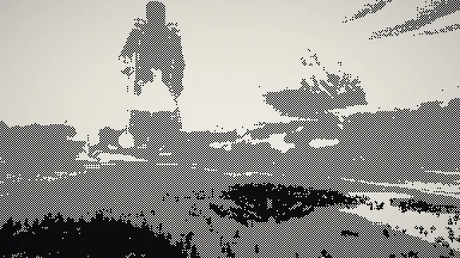<span>In the valley</span></button><button class="still" type="button" data-shot="search">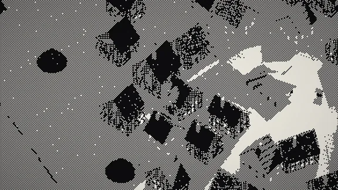<span>The search</span></button><button class="still" type="button" data-shot="look">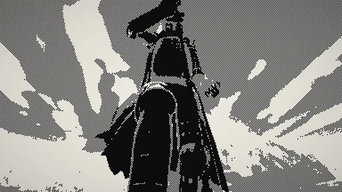<span>Looking up</span></button><button class="still" type="button" data-shot="face">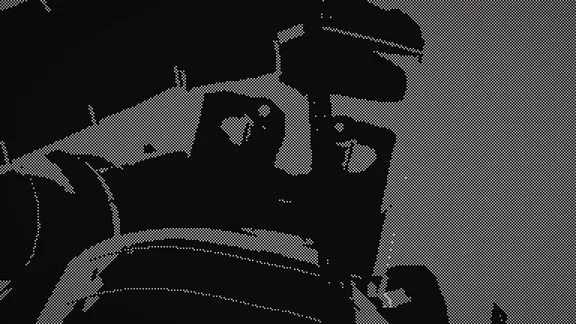<span>Its face</span></button></div>
        <div class="look-foot"><p><b>For this game</b>Light becomes paper and shadow becomes ink: the plainest read of the mechanic and the most graphic picture.</p><p class="risk"><b>Risk</b>The face breaks into black shapes, the town loses its detail, and it sits close to an ink style.</p><button class="btn" type="button" data-play="onebit">Play this look</button></div>
      </article>
    </div>

    <aside class="read" aria-labelledby="readTitle">
      <h3 id="readTitle">Which fits this game</h3>
      <ul>
        <li><b>Night lantern</b> if the hiding comes first. It reads light and shadow most clearly, so every second of the hunt is legible.</li>
        <li><b>Ash and blood</b> if dread comes first. It is the most frightening of the seven and needs the most restraint.</li>
        <li><b>Ashwake grey</b> is the safe middle, and it already works.</li>
        <li><b>White fog</b> has the best mood for the approach but loses the far shots. Winter, Sunlit and One bit each weaken something the game needs: the light on snow, the lantern in daylight, the face in one bit.</li>
        <li>They can also be mixed. The cycle already darkens as it comes, so the look can move with it: grey or sunlit while it walks the valley, night or red once it stops over the town.</li>
      </ul>
    </aside>
  </section>

  <section class="piece" id="live" aria-labelledby="liveTitle">
    <div class="piece-head"><span class="num">17.2</span><h2 id="liveTitle">Play it <em>switch looks while it runs</em></h2></div>
    <div class="lookbar" id="lookbar" role="group" aria-label="Look">
      <button type="button" data-look="ashwake" aria-pressed="true"><span class="chip" data-chip="ashwake"></span>Ashwake grey</button>
      <button type="button" data-look="night" aria-pressed="false"><span class="chip" data-chip="night"></span>Night</button>
      <button type="button" data-look="blood" aria-pressed="false"><span class="chip" data-chip="blood"></span>Ash and blood</button>
      <button type="button" data-look="fog" aria-pressed="false"><span class="chip" data-chip="fog"></span>Fog</button>
      <button type="button" data-look="winter" aria-pressed="false"><span class="chip" data-chip="winter"></span>Winter</button>
      <button type="button" data-look="colossus" aria-pressed="false"><span class="chip" data-chip="colossus"></span>Sunlit</button>
      <button type="button" data-look="onebit" aria-pressed="false"><span class="chip" data-chip="onebit"></span>One bit</button>
    </div>
    <div class="screen" id="fallBox"><canvas id="fall" tabindex="0" aria-label="Underfoot. A walled hill town seen from above. A giant in old iron armour, nearly three kilometres tall, walks the valley with a lantern on a chain and searches the streets with its light. The buttons above change how the picture is drawn."></canvas><div class="msg" id="fallMsg" hidden></div></div>
    <div class="bar">
      <button id="lookBtn" type="button">Hold to look up</button>
      <button id="soundBtn" type="button" aria-pressed="false">Sound</button>
      <span class="lbl">Jump to</span>
      <button type="button" data-go="approach">It comes</button>
      <button type="button" data-go="search">It searches</button>
      <button type="button" data-go="caught">It finds you</button>
      <button type="button" data-go="leave">It passes</button>
    </div>
    <p class="keys"><span class="desk"><kbd>W</kbd><kbd>A</kbd><kbd>S</kbd><kbd>D</kbd> or the arrows to walk, or hold the mouse where you want to go. Hold <kbd>L</kbd>, <kbd>Space</kbd> or the right button to look up. <kbd>M</kbd> for sound. </span><span class="touch">Drag on the picture to walk. Hold the amber button to look up. </span>Leave it alone and the town plays itself.</p>
    <div class="now" id="now" aria-live="polite">
      <h3 id="nowName">Ashwake grey</h3>
      <p id="nowWhat">The game as it stands. Eight warm greys and four dull ramps; the lantern, the roofs and the cloak carry the colour.</p>
      <div class="look-foot" id="nowFoot"></div>
    </div>
  </section>

  <footer><p>Everything is drawn and synthesized in code. The giant, the town, the lantern and all seven palettes are original. The stills are frames of the same seeded run, rendered at the game's own 384 × 216 and scaled up three times.</p></footer>
</main>

<dialog class="box" id="box" aria-labelledby="boxName">
  <div class="box-in">
    <div class="box-top"><h3 id="boxName">Night lantern<span id="boxMoment">The search</span></h3><button class="btn" type="button" id="boxClose">Close</button></div>
    
    <div class="box-nav">
      <button class="btn" type="button" id="boxUp">Previous look</button>
      <button class="btn" type="button" id="boxDown">Next look</button>
      <button class="btn" type="button" id="boxLeft">Previous moment</button>
      <button class="btn" type="button" id="boxRight">Next moment</button>
      <span class="sp"></span>
      <span class="hint">↑ ↓ look · ← → moment · Esc closes</span>
    </div>
  </div>
</dialog>
<script>
(()=>{function No(e,a={}){return e.getContext("webgl2",{antialias:!1,alpha:!1,depth:!1,stencil:!1,premultipliedAlpha:!1,preserveDrawingBuffer:!1,powerPreference:"high-performance",...a})}var pe=`#version 300 es
out vec2 vUv;
void main(){ vec2 p = vec2(float((gl_VertexID<<1)&2), float(gl_VertexID&2)); vUv = p; gl_Position = vec4(p*2.0-1.0, 0.0, 1.0); }`;function Fo(e,a,t,s){let n=e.createShader(a);if(e.shaderSource(n,t),e.compileShader(n),!e.getShaderParameter(n,e.COMPILE_STATUS)){let r=e.getShaderInfoLog(n)||"",i=t.split(`
`),c=/ERROR: \d+:(\d+)/.exec(r),f=c?i.slice(Math.max(0,+c[1]-3),+c[1]+2).join(`
`):"";throw new Error(`${s} ${a===e.VERTEX_SHADER?"VS":"FS"}: ${r}
${f}`)}return n}function i0(e,a,t,s="prog"){let n=e.createProgram();if(e.attachShader(n,Fo(e,e.VERTEX_SHADER,a,s)),e.attachShader(n,Fo(e,e.FRAGMENT_SHADER,t,s)),e.linkProgram(n),!e.getProgramParameter(n,e.LINK_STATUS))throw new Error(s+" link: "+e.getProgramInfoLog(n));let r={},i=e.getProgramParameter(n,e.ACTIVE_UNIFORMS);for(let f=0;f<i;f++){let l=e.getActiveUniform(n,f),u=l.name.replace(/\[0\]$/,"");r[u]={loc:e.getUniformLocation(n,l.name),type:l.type,size:l.size}}let c={prog:n,U:r,use(){return e.useProgram(n),c},set(f,l,u,d,o){let S=r[f];if(!S)return c;let m=S.loc;switch(S.type){case e.FLOAT:S.size>1||l.length?e.uniform1fv(m,l):e.uniform1f(m,l);break;case e.FLOAT_VEC2:l.length?e.uniform2fv(m,l):e.uniform2f(m,l,u);break;case e.FLOAT_VEC3:l.length?e.uniform3fv(m,l):e.uniform3f(m,l,u,d);break;case e.FLOAT_VEC4:l.length?e.uniform4fv(m,l):e.uniform4f(m,l,u,d,o);break;case e.INT:case e.BOOL:case e.SAMPLER_2D:case e.SAMPLER_3D:case e.SAMPLER_2D_SHADOW:case e.UNSIGNED_INT_SAMPLER_2D:case e.INT_SAMPLER_2D:l.length?e.uniform1iv(m,l):e.uniform1i(m,l);break;case e.INT_VEC2:e.uniform2i(m,l,u);break;case e.FLOAT_MAT3:e.uniformMatrix3fv(m,!1,l);break;case e.FLOAT_MAT4:e.uniformMatrix4fv(m,!1,l);break;default:e.uniform1f(m,l)}return c},tex(f,l,u,d=e.TEXTURE_2D){e.activeTexture(e.TEXTURE0+u),e.bindTexture(d,l);let o=r[f];return o&&e.uniform1i(o.loc,u),c}};return c}function Yt(e,a,t,{fmt:s="rgba8",filter:n="nearest",wrap:r="clamp",data:i=null,mips:c=!1}={}){let f=e.createTexture();e.bindTexture(e.TEXTURE_2D,f);let l={rgba8:[e.RGBA8,e.RGBA,e.UNSIGNED_BYTE],r8:[e.R8,e.RED,e.UNSIGNED_BYTE],rg8:[e.RG8,e.RG,e.UNSIGNED_BYTE],rgba16f:[e.RGBA16F,e.RGBA,e.HALF_FLOAT],r32f:[e.R32F,e.RED,e.FLOAT],rgba32f:[e.RGBA32F,e.RGBA,e.FLOAT],depth:[e.DEPTH_COMPONENT24,e.DEPTH_COMPONENT,e.UNSIGNED_INT]}[s];e.pixelStorei(e.UNPACK_ALIGNMENT,1),e.texImage2D(e.TEXTURE_2D,0,l[0],a,t,0,l[1],l[2],i);let u=n==="linear"?e.LINEAR:e.NEAREST;e.texParameteri(e.TEXTURE_2D,e.TEXTURE_MAG_FILTER,u),e.texParameteri(e.TEXTURE_2D,e.TEXTURE_MIN_FILTER,c?e.LINEAR_MIPMAP_LINEAR:u);let d=r==="repeat"?e.REPEAT:e.CLAMP_TO_EDGE;return e.texParameteri(e.TEXTURE_2D,e.TEXTURE_WRAP_S,d),e.texParameteri(e.TEXTURE_2D,e.TEXTURE_WRAP_T,d),s==="depth"&&(e.texParameteri(e.TEXTURE_2D,e.TEXTURE_COMPARE_MODE,e.COMPARE_REF_TO_TEXTURE),e.texParameteri(e.TEXTURE_2D,e.TEXTURE_COMPARE_FUNC,e.LEQUAL),e.texParameteri(e.TEXTURE_2D,e.TEXTURE_MAG_FILTER,e.LINEAR),e.texParameteri(e.TEXTURE_2D,e.TEXTURE_MIN_FILTER,e.LINEAR)),c&&e.generateMipmap(e.TEXTURE_2D),f.w=a,f.h=t,f.F=l,f}function me(e,a,t,s=0,n=0,r=a.w,i=a.h){e.bindTexture(e.TEXTURE_2D,a),e.pixelStorei(e.UNPACK_ALIGNMENT,1),e.texSubImage2D(e.TEXTURE_2D,0,s,n,r,i,a.F[1],a.F[2],t)}function B0(e,a,t=null){let s=e.createFramebuffer();e.bindFramebuffer(e.FRAMEBUFFER,s);let n=Array.isArray(a)?a:a?[a]:[];n.forEach((c,f)=>e.framebufferTexture2D(e.FRAMEBUFFER,e.COLOR_ATTACHMENT0+f,e.TEXTURE_2D,c,0)),t&&e.framebufferTexture2D(e.FRAMEBUFFER,e.DEPTH_ATTACHMENT,e.TEXTURE_2D,t,0),n.length>1&&e.drawBuffers(n.map((c,f)=>e.COLOR_ATTACHMENT0+f)),n.length||(e.drawBuffers([e.NONE]),e.readBuffer(e.NONE));let r=e.checkFramebufferStatus(e.FRAMEBUFFER);if(r!==e.FRAMEBUFFER_COMPLETE)throw new Error("framebuffer incomplete "+r);e.bindFramebuffer(e.FRAMEBUFFER,null);let i=n[0]||t;return s.w=i.w,s.h=i.h,s}function Io(e,a=2){let t=e.getBoundingClientRect(),s=Math.min(a,window.devicePixelRatio||1),n=Math.max(1,Math.round(t.width*s)),r=Math.max(1,Math.round(t.height*s));return e.width!==n||e.height!==r?(e.width=n,e.height=r,!0):!1}function Ce(e,a){let t=new Float32Array(16);for(let s=0;s<4;s++)for(let n=0;n<4;n++){let r=0;for(let i=0;i<4;i++)r+=e[i*4+n]*a[s*4+i];t[s*4+n]=r}return t}function Fe(e,a,t){let s=e[0]-a[0],n=e[1]-a[1],r=e[2]-a[2],i=Math.hypot(s,n,r);s/=i,n/=i,r/=i;let c=t[1]*r-t[2]*n,f=t[2]*s-t[0]*r,l=t[0]*n-t[1]*s;i=Math.hypot(c,f,l),c/=i,f/=i,l/=i;let u=n*l-r*f,d=r*c-s*l,o=s*f-n*c;return new Float32Array([c,u,s,0,f,d,n,0,l,o,r,0,-(c*e[0]+f*e[1]+l*e[2]),-(u*e[0]+d*e[1]+o*e[2]),-(s*e[0]+n*e[1]+r*e[2]),1])}function _o(e,a,t,s,n,r){return new Float32Array([2/(a-e),0,0,0,0,2/(s-t),0,0,0,0,-2/(r-n),0,-(a+e)/(a-e),-(s+t)/(s-t),-(r+n)/(r-n),1])}var oo="layout(location=0) in vec3 aPos; layout(location=1) in vec3 aNor; layout(location=2) in float aMat; layout(location=3) in vec2 aUV; layout(location=4) in float aSeed;",Do="out vec3 vP; out vec3 vN; flat out float vM; out vec2 vUV; flat out float vS; out vec3 vT; out vec3 vTN;",Oo=`#version 300 es
${oo}
uniform mat4 uVP;
${Do}
void main(){
  vP = aPos; vN = aNor; vM = aMat; vUV = aUV; vS = aSeed; vT = aPos; vTN = aNor;
  gl_Position = uVP*vec4(aPos, 1.0);
}`,Uo=`
uniform mat4 uBones[16];
uniform vec3 uSway;
vec3 skinP(vec3 p, out vec3 n, vec3 n0){
  int b0 = int(aUV.x + 0.5), b1 = int(aUV.y + 0.5);
  float w = aSeed;
  mat4 A = uBones[b0], B = uBones[b1];
  vec3 pa = (A*vec4(p, 1.0)).xyz, pb = (B*vec4(p, 1.0)).xyz;
  n = normalize(mix(mat3(A)*n0, mat3(B)*n0, w));
  vec3 q = mix(pa, pb, w);
  float hem = clamp((1350.0 - p.y)/850.0, 0.0, 1.0);
  return q + uSway*hem*hem*(int(aMat + 0.5) == 30 ? 1.0 : 0.0);
}`,Go=`#version 300 es
${oo}
uniform mat4 uVP;
${Uo}
${Do}
void main(){
  vec3 n; vec3 w = skinP(aPos, n, aNor);
  vP = w; vN = n; vM = aMat; vUV = vec2(0.0); vS = 0.0; vT = aPos; vTN = aNor;
  gl_Position = uVP*vec4(w, 1.0);
}`,Vo=`#version 300 es
${oo}
uniform mat4 uLVP;
${Uo}
void main(){ vec3 n; vec3 w = skinP(aPos, n, aNor); gl_Position = uLVP*vec4(w, 1.0); }`,Bo=`#version 300 es
layout(location=0) in vec3 aPos;
uniform mat4 uLVP;
void main(){ gl_Position = uLVP*vec4(aPos, 1.0); }`,ao=`#version 300 es
precision mediump float;
void main(){}`,Ne=`
uniform sampler2D uNoise;
uniform float uTime;
uniform vec3 uCam;
uniform vec3 uSun, uSunCol, uSkyCol, uGndCol, uFogCol, uFogSunCol;
uniform float uFogA, uFogB, uExposure;
uniform vec3 uFogCam;
float n1(vec2 p){ return texture(uNoise, p).r; }
float n2(vec2 p){ return texture(uNoise, p).g; }
float n3(vec2 p){ return texture(uNoise, p).b; }
float wn(vec2 p){ return texture(uNoise, p).a; }
// noise by cell size (metres): the channels have 32, 64 and 128 cells per tile
float N1(vec2 p, float c){ return texture(uNoise, p/(32.0*c)).r; }
float N2(vec2 p, float c){ return texture(uNoise, p/(64.0*c)).g; }
float N3(vec2 p, float c){ return texture(uNoise, p/(128.0*c)).b; }
float PXW = 1.0;   // metres per pixel here; set at the top of main()
float lodF(float cell){ return 1.0 - smoothstep(cell*0.6, cell*1.8, PXW); }
float N2L(vec2 p, float c){ return mix(0.5, N2(p, c), lodF(c)); }
float N3L(vec2 p, float c){ return mix(0.5, N3(p, c), lodF(c)); }
float hash(float n){ return fract(sin(n)*43758.5453); }
float hash2(vec2 c){ return fract(sin(dot(c, vec2(12.9898, 78.233)))*43758.5453); }
vec2 hash22(vec2 p){ p = vec2(dot(p, vec2(127.1, 311.7)), dot(p, vec2(269.5, 183.3))); return fract(sin(p)*43758.5453); }
float bayerF(vec2 c){ ivec2 p = ivec2(c); int m[16] = int[16](0,8,2,10,12,4,14,6,3,11,1,9,15,7,13,5); return (float(m[(p.y & 3)*4 + (p.x & 3)]) + 0.5)/16.0; }
// exponential height fog, integrated along the ray from the camera
vec3 fogged(vec3 col, vec3 P){
  vec3 d = P - uFogCam; float dist = max(0.0, dot(d, normalize(P - uCam))); vec3 rd = normalize(P - uCam);
  float k = rd.y*uFogB;
  float od = uFogA*exp(-uFogB*(P.y - rd.y*dist))*(abs(k) > 1e-5 ? (1.0 - exp(-k*dist))/k : dist);
  float f = 1.0 - exp(-od);
  float s = pow(max(dot(rd, uSun), 0.0), 5.0);
  return mix(col, mix(uFogCol, uFogSunCol, s), f);
}
vec4 toneOut(vec3 c){ c = 1.0 - exp(-max(c, 0.0)*uExposure); return vec4(sqrt(c), 1.0); }
`,Ho=`
uniform vec2 uWind, uHoleC;
uniform float uCloudCov;
const float CY0 = 820.0, CY1 = 1900.0, CH = 950.0;
float cloudCov(vec2 xz){
  vec2 w = xz + uWind*uTime;
  float c = N1(w, 2600.0)*0.5 + N2(w, 760.0)*0.32 + N3(w, 230.0)*0.18;
  vec2 dh = xz - uHoleC;
  c -= 0.16*exp(-dot(dh, dh)/(1600.0*1600.0));
  return c + uCloudCov;
}
float cloudDen(vec3 p){
  float cov = smoothstep(0.55, 0.7, cloudCov(p.xz));
  if (cov <= 0.0) return 0.0;
  float h = (p.y - CY0)/(CH*(0.3 + 0.7*cov));
  if (h < 0.0 || h > 1.0) return 0.0;
  float d = cov*(1.0 - h*h)*smoothstep(0.0, 0.05, h);
  float e = N2(p.xz + vec2(p.y*0.7, -p.y*0.45), 170.0)*0.62 + N3(p.xz - vec2(p.y*0.6, p.y*0.4), 60.0)*0.38;
  d -= (e - 0.38)*0.75*(0.35 + h);
  return clamp(d*1.6, 0.0, 1.0);
}
`,no=`#version 300 es
precision highp float;
in vec3 vP; in vec3 vN; flat in float vM; in vec2 vUV; flat in float vS; in vec3 vT; in vec3 vTN;
layout(location=0) out vec4 o;
${Ne}
uniform sampler2D uNearMap, uFarMap, uPoolMap;
uniform sampler2D uHouses;     // one texel per house: 0 dark, 1 windows lit, 0.5 taken
float houseState(float slot){ return texelFetch(uHouses, ivec2(int(slot*128.0), 0), 0).r; }
uniform float uStreetAlb;      // the streets' albedo (the look lifts it under moonlight)
uniform float uWinPool;        // how much light the lit windows throw on the ground
uniform highp sampler2DShadow uShadow, uGShadow, uLtShadow;
uniform mat4 uLVP, uGVP, uLtVP;
uniform vec2 uShTexel, uGShTexel, uLtTexel;
uniform float uLtK;            // the lantern map's 1/(2 tan(fov/2)): metres to map width at a distance
uniform vec4 uRing;            // the ring under your feet: its colour, and how much of the circle is drawn
uniform vec4 uCandles[4];      // candles in the street: x, y, z, strength (0 = none)
uniform sampler2D uStainMap;   // where the light took someone: 1 in the stain, ~0.43 in the scorch round it
uniform float uLocalOn;
uniform vec4 uLan; uniform vec4 uLanDir; uniform float uLanInner; uniform vec3 uLanCol;
uniform float uWin;            // how many windows are still lit, 0..1
uniform vec4 uPrints[6];       // giant footprints: x, z, yaw, side (+-1); w = 0 means none
uniform float uNear, uFar;
uniform float uCloudShadow;
uniform vec4 uCut;             // see-through near the player: screen xy, depth, radius in px
uniform float uIsGiant;
uniform float uEye;            // 1, rising to 3.5 as it sees you; uSeen is the eye meter 0..1
uniform float uSeen;
uniform float uSnow;
uniform vec3 uPlayer[4];       // your coat, hood and scarf albedo, then (fill light, 0, 0), from the look
const float LAME[7] = float[7](0.0, 60.0, 110.0, 155.0, 200.0, 245.0, 290.0);   // where the foot's lames start
// the face mask's relief over its rounded base, in rest-pose metres (the same shape as maskZ in giant.js)
float g2(float a, float s){ return exp(-(a/s)*(a/s)); }
float maskRelief(vec2 p){
  float v = (p.y - 2545.0)/310.0, u = p.x/150.0, au = abs(u);
  float vb = 0.695 - 0.035*g2(u, 0.18);
  float z = 16.0*g2(v - vb, 0.042)*(1.0 - 0.3*u*u) - 4.0*g2(au - 0.05, 0.02)*g2(v - 0.68, 0.04);
  z -= 40.0*g2(au - 0.34, 0.16)*g2(v - 0.6 - 0.09*(au - 0.34), 0.058);
  float nose = smoothstep(0.36, 0.43, v)*(1.0 - smoothstep(0.6, 0.67, v));
  z += (28.0 + 14.0*(1.0 - smoothstep(0.38, 0.62, v)))*g2(u, 0.08 + 0.045*(1.0 - smoothstep(0.37, 0.5, v)))*nose;
  z -= 5.0*g2(au - 0.075, 0.03)*g2(v - 0.375, 0.022);
  z += 12.0*g2(au - 0.52, 0.16)*g2(v - 0.5, 0.07);
  z -= 9.0*g2(au - 0.43, 0.17)*g2(v - 0.32, 0.09);
  vec2 a = vec2(0.1, 0.4), d = vec2(0.17, -0.155);
  float t = clamp(dot(vec2(au, v) - a, d)/dot(d, d), 0.0, 1.0);
  z -= 4.5*g2(length(vec2(au, v) - (a + d*t)), 0.016);
  float vm = 0.232 - 0.03*(au/0.24)*(au/0.24), mw = 1.0 - smoothstep(0.2, 0.27, au);
  z += mw*(-7.0*g2(v - vm, 0.009) + 3.0*g2(v - vm - 0.022, 0.015) + 3.0*g2(v - vm + 0.024, 0.016));
  z += 9.0*g2(v - 0.09, 0.06)*g2(u, 0.33);
  return z;
}

float pcf4(highp sampler2DShadow S, vec3 l, vec2 tx, float bias){
  float s = texture(S, vec3(l.xy + vec2(-0.6, -0.6)*tx, l.z - bias));
  s += texture(S, vec3(l.xy + vec2(0.6, -0.6)*tx, l.z - bias));
  s += texture(S, vec3(l.xy + vec2(-0.6, 0.6)*tx, l.z - bias));
  s += texture(S, vec3(l.xy + vec2(0.6, 0.6)*tx, l.z - bias));
  return s*0.25;
}
const vec2 PD[8] = vec2[8](vec2(-0.613,0.617), vec2(0.17,-0.04), vec2(-0.299,-0.791), vec2(0.645,0.493), vec2(-0.651,-0.717), vec2(0.421,-0.027), vec2(-0.817,0.054), vec2(0.977,-0.108));
float sunShadow(vec3 P, vec3 n, float ndl){
  float s = 1.0;
  if (uLocalOn > 0.5){
    vec4 l = uLVP*vec4(P, 1.0); vec3 lc = l.xyz*0.5 + 0.5;
    if (lc.x > 0.002 && lc.y > 0.002 && lc.x < 0.998 && lc.y < 0.998 && lc.z < 1.0) s = pcf4(uShadow, lc, uShTexel, 0.0004 + 0.0014*(1.0 - clamp(ndl, 0.0, 1.0)));
  }
  vec4 g = uGVP*vec4(P + n*6.0, 1.0); vec3 gc = g.xyz*0.5 + 0.5;
  if (gc.x > 0.0 && gc.y > 0.0 && gc.x < 1.0 && gc.y < 1.0 && gc.z < 1.0){
    float r = 2.6, acc = 0.0, rot = hash2(floor(P.xz*0.25))*6.28;
    mat2 R = mat2(cos(rot), -sin(rot), sin(rot), cos(rot));
    for (int i = 0; i < 8; i++) acc += texture(uGShadow, vec3(gc.xy + R*PD[i]*uGShTexel*r, gc.z - 0.0006));
    s = min(s, acc/8.0);
  }
  return s;
}
${Ho}
float cloudShadow(vec3 P){
  if (uCloudShadow <= 0.0) return 1.0;
  vec3 q = P + uSun*((1250.0 - P.y)/max(uSun.y, 0.05));
  float c = cloudCov(q.xz);
  return 1.0 - uCloudShadow*0.72*smoothstep(0.47, 0.58, c);
}
// The hiding test (game.js isLit) fires three rays to points 24 m apart across the lantern's glass, so its
// shadows have a penumbra that wide: eight taps over a disc the size of that spread as seen from the
// receiver (assuming the blocker is a house, about eight metres nearer the lantern), rotated per cell so the
// band dithers. Where only part of the glass shows, the ground gets a tenth of the light at least: under
// the overexposed pool that is a mid amber, so the shallow shadow is faintly amber and the deep shadow
// black, and the picture says what the rule says.
float lanternLight(vec3 P, vec3 n, out float sh){
  sh = 1.0;
  if (uLan.w <= 0.0) return 0.0;
  vec3 d = P - uLan.xyz; float dist = length(d); vec3 ld = d/dist;
  float cone = smoothstep(uLanDir.w, uLanInner, dot(ld, uLanDir.xyz));
  if (cone <= 0.0) return 0.0;
  float att = 1.0/(1.0 + (dist/260.0)*(dist/260.0));
  float ndl = max(dot(n, -ld), 0.0)*0.85 + 0.15;
  vec4 l = uLtVP*vec4(P - ld*0.6, 1.0); vec3 lc = l.xyz/l.w*0.5 + 0.5;
  if (lc.x > 0.0 && lc.y > 0.0 && lc.x < 1.0 && lc.y < 1.0 && lc.z < 1.0){
    float pen = clamp(24.0*8.0/max(dist - 8.0, 20.0), 0.8, 4.0);      // the penumbra's width in metres
    float r = pen*uLtK/dist;                                           // in map units
    float rot = hash2(floor(P.xz*2.0))*6.28; mat2 R = mat2(cos(rot), -sin(rot), sin(rot), cos(rot));
    float acc = 0.0;
    for (int i = 0; i < 8; i++) acc += texture(uLtShadow, vec3(lc.xy + R*PD[i]*r, lc.z - 0.00002));
    sh = acc/8.0;
  }
  float lit = sh > 0.02 ? mix(0.1, 1.0, sh*sh) : 0.0;
  return uLan.w*cone*att*ndl*lit;
}

// a taken house: soot up the walls from the eaves and a black bloom round the door
float scorch(vec2 uv, float seed, bool front){
  float L = floor(seed/100.0)/10.0, H = mod(floor(seed), 100.0)/10.0;
  float s = 0.75*smoothstep(H - 3.2, H + 0.5, uv.y + (N2(uv*vec2(3.0, 1.0) + seed, 1.0) - 0.5)*2.0);
  if (front){ vec2 d = vec2((uv.x - L*0.5)/2.2, uv.y/3.6); s = max(s, 0.85*(1.0 - smoothstep(0.5, 1.0, length(d) + (N3(uv, 0.4) - 0.5)*0.3))); }
  return s;
}
// half-timbering; seed packs wall length and eave height, its fraction is the house
float fachwerk(vec2 uv, float seed, bool front, out float win){
  float L = floor(seed/100.0)/10.0, H = mod(floor(seed), 100.0)/10.0, rnd = fract(seed);
  float u = uv.x, v = uv.y;
  float alb = 0.86 + (N2L(uv + rnd*40.0, 0.35) - 0.5)*0.12;
  alb -= smoothstep(0.62, 0.8, N1(uv + rnd*90.0, 1.4))*0.12;
  float bw = 0.13, nP = max(2.0, floor(L/1.5 + 0.5)), sp = L/nP, fu = mod(u, sp);
  float post = step(min(fu, sp - fu), bw);
  float rail = max(step(abs(v - 0.1), bw), max(step(abs(v - 2.5), bw*1.25), step(abs(v - (H - 0.1)), bw)));
  rail *= step(v, H + 0.01);
  float panel = floor(u/sp), pu = fu/sp, upper = step(2.5, v);
  float v0 = mix(0.1, 2.5, upper), v1 = mix(2.5, H - 0.1, upper), pv = clamp((v - v0)/(v1 - v0), 0.0, 1.0);
  float endP = (panel < 0.5 || panel > nP - 1.5) ? 1.0 : 0.0;
  float diag = panel < 0.5 ? abs(pu - pv) : abs(pu - (1.0 - pv));
  float brace = endP*step(diag*sp, bw*1.35)*step(v, H);
  float h1 = hash(panel*12.98 + rnd*78.2), xx = min(abs(pu - pv), abs(pu - (1.0 - pv)));
  float cross = (1.0 - endP)*step(0.62, h1)*upper*step(xx*sp, bw*1.25)*step(v, H);
  float gable = step(H, v), gpost = gable*step(abs(pu - 0.5)*sp, bw);
  float timber = max(max(post, rail), max(max(brace, cross), gpost));
  float h2 = hash(panel*7.13 + upper*3.7 + rnd*19.1);
  win = 0.0;
  if (gable < 0.5 && endP < 0.5 && h2 > 0.3 && cross < 0.5){ float wv0 = mix(0.9, 3.15, upper); win = step(abs(pu - 0.5)*sp, 0.38)*step(wv0, v)*step(v, wv0 + 1.0); }
  float door = 0.0;
  if (front && upper < 0.5){ float mid = floor(nP*0.5); if (abs(panel - mid) < 0.5 && v < 2.2) door = step(abs(pu - 0.5)*sp, 0.5); }
  if (timber > 0.5) alb = 0.17 + N3L(uv, 0.4)*0.06;
  if (win > 0.5) alb = 0.06;
  if (door > 0.5){ alb = 0.14 + 0.05*step(0.5, fract(u*4.0)); win = 0.0; }
  return alb;
}
float stoneHouse(vec2 uv, float seed, out float win){
  float L = floor(seed/100.0)/10.0, H = mod(floor(seed), 100.0)/10.0, rnd = fract(seed);
  float row = floor(uv.y/0.42), off = fract(row*0.5)*0.8;
  vec2 c = vec2(fract((uv.x + off)/0.8), fract(uv.y/0.42));
  float h = hash(row*3.1 + floor((uv.x + off)/0.8)*7.7 + rnd*13.0);
  float alb = (step(c.x, 0.07) + step(c.y, 0.1)) > 0.5 ? 0.42 : 0.6 + h*0.12;
  float nW = max(1.0, floor(L/2.6)), sp = L/nW, pu = fract(uv.x/sp), panel = floor(uv.x/sp);
  win = 0.0;
  float wv0 = uv.y < 2.6 ? 0.9 : 3.2;
  if (hash(panel*5.1 + rnd*9.0 + step(2.6, uv.y)) > 0.35 && uv.y < H - 0.3) win = step(abs(pu - 0.5)*sp, 0.42)*step(wv0, uv.y)*step(uv.y, wv0 + 1.05);
  if (win > 0.5) alb = 0.06;
  return alb;
}
float shingles(vec2 uv, float seed, float rowH, float colW){
  float row = floor(uv.y/rowH), off = fract(row*0.5)*colW, col = floor((uv.x + off)/colW);
  float h = hash(row*12.9 + col*78.2 + seed*3.1);
  return (0.9 + h*0.2) - step(fract(uv.y/rowH), 0.22)*0.25;
}
float stoneWall(vec2 uv, float seed){
  float row = floor(uv.y/0.5), off = fract(row*0.5)*0.95;
  vec2 c = vec2(fract((uv.x + off)/0.95), fract(uv.y/0.5));
  float h = hash(row*3.1 + floor((uv.x + off)/0.95)*7.7 + seed);
  return (step(c.x, 0.07) + step(c.y, 0.1)) > 0.5 ? 0.7 : 0.92 + h*0.18;
}
// a giant's footprint: foot-local coords (x across, z along, toes at +z). >0 inside.
float printMask(vec2 q){
  float body = 1.0 - length(vec2(q.x/80.0, (q.y - 40.0)/215.0));
  float toes = 0.0;
  for (int i = 0; i < 5; i++){ float fi = float(i); vec2 c = vec2((fi - 1.6)*30.0, 238.0 - abs(fi - 1.2)*16.0 - fi*4.0); toes = max(toes, 1.0 - length(q - c)/(i == 0 ? 30.0 : 22.0)); }
  return max(body, toes);
}

// fields: furlongs (big blocks with a hedge round them), each ploughed in long strips one way; a block
// keeps to one or two crops, so it reads as stripes, not as paving
vec3 cropCol(float h){
  if (h < 0.28) return vec3(0.5, 0.475, 0.41);     // stubble
  if (h < 0.5) return vec3(0.41, 0.42, 0.37);      // pasture
  if (h < 0.68) return vec3(0.27, 0.25, 0.225);    // ploughed
  if (h < 0.86) return vec3(0.47, 0.46, 0.43);     // fallow
  return vec3(0.36, 0.385, 0.31);                  // green
}
vec3 fieldAlb(vec2 p, out float hedge){
  vec2 g = p/320.0, gi = floor(g), gf = fract(g);
  float d1 = 9.0, d2 = 9.0; vec2 id = vec2(0.0);
  for (int j = -1; j <= 1; j++) for (int i = -1; i <= 1; i++){
    vec2 c = vec2(float(i), float(j)), o = hash22(gi + c)*0.75 + 0.125;
    float d = length(c + o - gf);
    if (d < d1){ d2 = d1; d1 = d; id = gi + c; } else if (d < d2) d2 = d;
  }
  hedge = 1.0 - smoothstep(0.004, 0.016, d2 - d1);
  float ang = hash2(id*1.3)*3.14159, w = 8.0 + 9.0*hash2(id*2.7);
  vec2 per = vec2(-sin(ang), cos(ang));
  float s = dot(p, per)/w, si = floor(s), sf = fract(s);
  float hb = hash2(id*3.1), hs = hash(si*7.31 + hb*91.0);
  vec3 c = cropCol(hs < 0.62 ? hb : fract(hb + 0.41));
  c *= 0.95 + 0.1*hash(si*3.7 + hb*13.0);
  float fur = mix(0.5, 0.5 + 0.5*sin(s*w*2.6), lodF(1.2));                // ridge and furrow, along the strip
  c *= 0.95 + 0.1*fur;
  float balk = (1.0 - smoothstep(0.0, 0.7/w, min(sf, 1.0 - sf)))*lodF(1.2);  // a grass line between strips
  c = mix(c, vec3(0.4, 0.41, 0.36), balk*0.6);
  return c*(0.94 + 0.12*N2L(p, 3.0));
}

void main(){
  PXW = max(length(dFdx(vP)), length(dFdy(vP)));
  int m = int(vM + 0.5);
  // see-through round the player when the town would hide them (never the player's own figure)
  if (uCut.w > 0.0 && m != 0 && uIsGiant < 0.5 && (m < 50 || m > 59)){
    // the lantern and its chain get a much wider hole: they must never hide you
    bool lan = m >= 37 && m <= 40;
    vec2 dd = (gl_FragCoord.xy - uCut.xy)/(vec2(1.0, 1.25)*uCut.w*(lan ? 7.0 : 1.0));
    float e = length(dd);
    if (e < 1.0 && gl_FragCoord.z < uCut.z - 0.00002 && bayerF(gl_FragCoord.xy) < (lan ? 1.2 - e*e*0.9 : 0.9 - e*e*0.6)) discard;
    // from above, the chain is a shadow hanging through the view: thin it out the higher it goes on screen
    if (m == 37 && bayerF(gl_FragCoord.xy + 1.0) < 0.35 + 0.4*smoothstep(0.0, 80.0, gl_FragCoord.y - uCut.y)) discard;
  }
  vec3 n = normalize(vN);
  bool inside = !gl_FrontFacing;
  if (inside) n = -n;
  vec3 alb = vec3(0.5), emit = vec3(0.0);
  float ao = 1.0, spec = 0.0;
  vec3 P = vP, T = vT;
  if (m == 0){
    // ---- terrain
    vec2 gN = (P.xz + 256.0)/512.0, gF = (P.xz + 9216.0)/18432.0;
    bool nearIn = gN.x > 0.0 && gN.y > 0.0 && gN.x < 1.0 && gN.y < 1.0;
    vec4 F = texture(uFarMap, gF);
    vec4 G = nearIn ? texture(uNearMap, gN) : vec4(0.0, 0.0, F.r, F.a);
    float street = G.r, road = max(G.b, F.r*(nearIn ? 0.0 : 1.0)), water = nearIn ? G.a : F.a;
    ao = 1.0 - G.g*0.55;
    // pale, dusty ground: dry grass gone grey; paler still near the town
    vec3 grass = mix(vec3(0.46, 0.46, 0.4), vec3(0.5, 0.49, 0.43), N2L(P.xz, 7.0));
    grass *= 0.95 + 0.1*N3L(P.xz, 1.5);
    grass *= 0.94 + 0.12*N1(P.xz, 90.0);
    float nearTown = 1.0 - smoothstep(90.0, 220.0, length(P.xz - vec2(-4.0, -6.0)));
    alb = mix(grass, vec3(0.62, 0.6, 0.56)*(0.96 + 0.08*N2L(P.xz, 3.0)), nearTown);
    float gh = hash2(floor(P.xz*vec2(3.0, 2.0)));
    alb *= 1.0 - step(0.95, gh)*0.18*lodF(0.5);
    float farm = F.b;
    if (farm > 0.01){ float hedge; vec3 fc = fieldAlb(P.xz, hedge); fc = mix(fc, vec3(0.15, 0.17, 0.13)*(0.8 + 0.4*N3L(P.xz, 2.0)), hedge*0.85); alb = mix(alb, fc, smoothstep(0.2, 0.6, farm)); }
    float forest = F.g;
    if (forest > 0.4){
      float can = N3L(P.xz, 7.0)*0.6 + N2L(P.xz, 30.0)*0.4;
      vec3 fc = mix(vec3(0.07, 0.09, 0.07), vec3(0.17, 0.21, 0.14), smoothstep(0.35, 0.75, can));
      fc = mix(fc, vec3(0.05, 0.06, 0.05), step(0.82, hash2(floor(P.xz*0.12)))*lodF(8.0));
      alb = mix(alb, fc, smoothstep(0.45, 0.65, forest));
    }
    if (road > 0.01){ vec3 rc = vec3(0.56, 0.52, 0.46)*(0.9 + 0.15*N2L(P.xz, 1.5)); alb = mix(alb, rc, road*0.9); }
    if (street > 0.01){
      vec2 c = fract(P.xz*vec2(2.2, 2.9)), ci = floor(P.xz*vec2(2.2, 2.9));
      float cob = (0.9 + 0.15*hash2(ci))*(1.0 - 0.3*step(0.86, max(c.x, c.y))*lodF(0.4));
      alb = mix(alb, vec3(1.0, 0.96, 0.9)*uStreetAlb*cob, street);
    }
    // where the light took someone: a dark red-brown stain with a ring of scorched ground round it
    if (nearIn){
      float st = texture(uStainMap, gN).r;
      if (st > 0.05){
        float core = smoothstep(0.55, 0.8, st + (N3(P.xz, 0.7) - 0.5)*0.3), scorch = smoothstep(0.15, 0.4, st);
        alb = mix(alb, alb*vec3(0.42, 0.3, 0.26), scorch);
        alb = mix(alb, vec3(0.3, 0.075, 0.045)*(0.8 + 0.4*N2(P.xz, 1.2)), core);
      }
    }
    // warm pools on the ground under the windows that are still lit
    if (nearIn && uWinPool > 0.0){
      vec2 wp = texture(uPoolMap, gN).rg;
      float hs = texelFetch(uHouses, ivec2(int(wp.r*255.0 + 0.5), 0), 0).r;
      emit += alb*vec3(1.0, 0.62, 0.3)*wp.g*wp.g*step(0.75, hs)*uWinPool*0.2;
    }
    // rock on steep ground and on the mountains, snow on the peaks
    float steep = 1.0 - n.y;
    float rk = smoothstep(0.32, 0.5, steep + (N1(P.xz, 40.0) - 0.5)*0.2) + smoothstep(500.0, 1100.0, P.y)*smoothstep(0.08, 0.25, steep);
    vec3 strata = vec3(0.36, 0.35, 0.34)*(0.85 + 0.3*sin(P.y*0.02 + N2(P.xz, 120.0)*6.0)*0.5*lodF(25.0) + 0.3*N3L(P.xz, 18.0));
    alb = mix(alb, strata, clamp(rk, 0.0, 1.0));
    float snow = smoothstep(1150.0, 1400.0, P.y + (N1(P.xz, 200.0) - 0.5)*400.0)*smoothstep(0.55, 0.3, steep);
    alb = mix(alb, vec3(0.86, 0.87, 0.9), snow);
    if (uSnow > 0.0) alb = mix(alb, vec3(0.86, 0.875, 0.9)*(0.95 + 0.05*N2L(P.xz, 2.0)), uSnow*smoothstep(0.55, 0.85, n.y)*(1.0 - smoothstep(0.02, 0.4, water)));
    // the river
    if (water > 0.02){
      vec3 rd = normalize(P - uCam);
      float rip = N2L(P.xz*vec2(1.0, 2.5) + vec2(uTime*0.6, 0.0), 2.0);
      vec3 refl = mix(uSkyCol*1.4, uFogSunCol*1.6, pow(max(dot(reflect(rd, vec3(0.0, 1.0, 0.0)), uSun), 0.0), 8.0));
      vec3 wc = vec3(0.07, 0.09, 0.11);
      alb = mix(alb, wc, smoothstep(0.02, 0.5, water));
      emit += refl*(0.25 + 0.5*step(0.62, rip))*smoothstep(0.3, 0.7, water)*0.5;
    }
    // giant footprints: crushed ground with a raised, darker rim
    for (int i = 0; i < 6; i++){
      if (uPrints[i].w == 0.0) continue;
      vec2 q = P.xz - uPrints[i].xy; float c = cos(uPrints[i].z), s = sin(uPrints[i].z);
      vec2 l = vec2(q.x*c - q.y*s, q.x*s + q.y*c); l.x *= uPrints[i].w;
      float pm = printMask(l + (vec2(N2(P.xz, 22.0), N3(P.xz, 12.0)) - 0.5)*30.0);
      if (pm > -0.2){
        vec3 crushed = vec3(0.16, 0.14, 0.12)*(0.8 + 0.4*N3L(P.xz, 2.5));
        alb = mix(alb, crushed, smoothstep(-0.02, 0.06, pm));
        alb *= 1.0 - smoothstep(-0.2, 0.0, pm)*(1.0 - smoothstep(0.0, 0.08, pm))*0.45;
      }
    }
  } else if (m == 1 || m == 2){
    float win; float a = fachwerk(vUV, vS, m == 2, win);
    alb = a < 0.3 ? vec3(a*1.05, a*0.92, a*0.82) : vec3(a, a*0.97, a*0.9);
    float hs = houseState(fract(vS));
    if (win > 0.5 && hs > 0.75) emit = vec3(1.0, 0.62, 0.3)*1.2*(0.8 + 0.2*sin(uTime*3.0 + vS));
    if (hs > 0.4 && hs < 0.6) alb *= 1.0 - scorch(vUV, vS, m == 2);
  } else if (m == 10){
    float win; float a = stoneHouse(vUV, vS, win);
    alb = vec3(a, a*0.97, a*0.92)*0.85;
    float hs = houseState(fract(vS));
    if (win > 0.5 && hs > 0.75) emit = vec3(1.0, 0.62, 0.3)*1.1;
    if (hs > 0.4 && hs < 0.6) alb *= 1.0 - scorch(vUV, vS, false);
  } else if (m == 3){
    alb = vec3(0.19, 0.16, 0.13)*(0.85 + 0.3*N3L(vUV + vS*30.0, 0.5));
  } else if (m == 4){
    alb = vec3(0.19, 0.185, 0.19)*mix(1.0, shingles(vUV, vS, 0.34, 0.5), lodF(0.3));
  } else if (m == 5){
    float sh = shingles(vUV, vS, 0.3, 0.38);
    vec3 tile = mix(vec3(0.3, 0.16, 0.12), vec3(0.35, 0.21, 0.16), hash(vS*7.0));
    alb = tile*mix(1.0, sh, lodF(0.3))*(0.9 + 0.15*N2L(vUV + vS*20.0, 0.7));
  } else if (m == 6){
    alb = vec3(0.16, 0.17, 0.2)*mix(1.0, shingles(vUV, vS, 0.26, 0.34), lodF(0.3));
  } else if (m == 7 || m == 8 || m == 20){
    float a = stoneWall(vUV, vS);
    alb = (m == 20 ? vec3(0.58, 0.55, 0.5) : vec3(0.5, 0.48, 0.45))*a;
    if (m == 8){ float u = abs(vUV.x - 3.4), v = vUV.y; if (u < 1.0 && (v < 2.6 || length(vec2(u, v - 2.6)) < 1.0) && v > -0.5) alb = vec3(0.05); if (u < 0.5 && abs(v - 27.0) < 2.0) alb = vec3(0.04); }
    if (m == 20){ if (abs(fract(vUV.x/5.2) - 0.5)*5.2 < 0.45 && vUV.y > 3.0 && vUV.y < 8.5) { alb = vec3(0.05); if (uWin > 0.3) emit = vec3(1.0, 0.65, 0.33)*0.55; } }
    alb *= 0.85 + 0.25*N1(vP.xz + vP.y*0.6, 0.9);
  } else if (m == 19){
    alb = vec3(0.44, 0.42, 0.39);
  } else if (m == 9){
    alb = vec3(0.03);
  } else if (m == 11){
    alb = vec3(0.11, 0.15, 0.11)*(0.75 + 0.5*N3L(vP.xz + vP.y*0.7, 0.9));
  } else if (m == 12){
    alb = vec3(0.19, 0.24, 0.13)*(0.7 + 0.6*N3L(vP.xz + vP.y*0.7, 0.8));
  } else if (m == 13){
    alb = vec3(0.18, 0.15, 0.12);
  } else if (m == 14){
    alb = vec3(0.6, 0.5, 0.3)*(0.85 + 0.3*N2L(vUV, 0.5));
  } else if (m == 15){
    alb = vec3(0.36, 0.3, 0.24)*(0.85 + 0.2*hash(floor(vUV.x*2.0) + vS*10.0));
  } else if (m == 16){
    alb = vec3(0.7, 0.66, 0.58);
  } else if (m == 17){
    alb = vec3(0.1);
  // ---------------------------------------------------------------- the giant
  } else if (m == 30 || m == 31 || m == 42){
    // the robe: heavy faded red-brown cloth; the mantle and hood darker and browner. Dust along the hem,
    // moss and snow where it faces up.
    float ang = atan(T.z, T.x);
    vec3 cl = m == 42 ? mix(vec3(0.12, 0.105, 0.095), vec3(0.15, 0.13, 0.115), N2(T.xz + T.y*0.7, 160.0))
                      : mix(vec3(0.15, 0.1, 0.085), vec3(0.17, 0.12, 0.1), N2(T.xz + T.y*0.7, 160.0));
    vec2 sp = vec2(ang*320.0, T.y);                                   // round the body, metres
    cl *= 0.8 + 0.4*mix(0.5, N3(sp*vec2(1.0, 0.18), 30.0), lodF(18.0));  // streaks running down the folds
    cl *= 1.0 - 0.25*smoothstep(0.55, 0.8, N1(sp*vec2(1.0, 0.3), 120.0));
    float up = smoothstep(0.3, 0.8, vTN.y);
    cl = mix(cl, vec3(0.22, 0.26, 0.17), up*smoothstep(0.42, 0.68, N1(T.xz + 70.0, 90.0))*0.9);
    cl = mix(cl, vec3(0.44, 0.41, 0.37), smoothstep(900.0, 560.0, T.y)*0.6*(0.6 + 0.4*N2(sp, 40.0)));
    cl = mix(cl, vec3(0.8, 0.81, 0.84), smoothstep(2750.0, 2950.0, T.y)*up*smoothstep(0.3, 0.55, N1(T.xz, 70.0)));
    alb = m == 31 ? vec3(0.06, 0.05, 0.045) : cl;
  } else if (m == 43 || m == 44){
    // old iron plate, near black: seams every ~100 m, each with a narrow lip that catches a little more of
    // whatever light reaches it (a lift of the plate's own colour, never a line of its own), rust bleeding
    // down from them, moss where it faces up; the feet are lames with rivets, caked with dried mud
    float lw = lodF(5.0);
    vec3 base = vec3(0.1, 0.097, 0.093)*(0.85 + 0.3*N1(T.xz + T.y*0.5, 70.0));
    float ax = abs(T.x) - 180.0;
    bool foot = T.y < 140.0 && abs(ax) < 140.0 && T.z > -150.0;
    float seam = 0.0, lip = 0.0, riv = 0.0, below = 0.0;
    if (foot){
      float a = atan(max(T.y, 0.0), ax)/3.14159;
      float ra = (fract(a*11.0) - 0.5)*26.0;
      for (int i = 0; i < 7; i++){
        float d = T.z - LAME[i];
        seam = max(seam, step(-5.0, d)*step(d, 0.0));
        lip = max(lip, step(0.0, d)*step(d, 2.0));
        riv = max(riv, 1.0 - smoothstep(2.6, 3.8, length(vec2(ra, d - 10.0))));
      }
      below = 0.5;
    } else {
      float fy = mod(T.y - 40.0, 104.0);
      seam = step(fy, 3.5); lip = step(3.5, fy)*step(fy, 6.5);
      below = smoothstep(50.0, 103.0, fy);
    }
    float streak = N2(vec2(T.x*0.7 + T.z*0.7, T.y*0.07), 16.0);
    base = mix(base, vec3(0.23, 0.13, 0.085), smoothstep(0.52, 0.8, streak)*(0.3 + 0.7*below)*0.9);
    float up = smoothstep(0.45, 0.85, vTN.y);
    if (T.y > 300.0) base = mix(base, vec3(0.18, 0.21, 0.14), up*smoothstep(0.42, 0.66, N1(T.xz + 30.0, 45.0)));
    float mudH = 28.0 + 46.0*N1(T.xz*vec2(1.0, 0.6), 34.0) + 22.0*N2(T.xz + T.y, 9.0);
    float mud = 1.0 - smoothstep(mudH - 5.0, mudH + 5.0, T.y);
    mud = max(mud, step(0.78, N3(T.xz + T.y*0.8, 6.0))*(1.0 - smoothstep(60.0, 300.0, T.y))*0.9);
    base = mix(base, vec3(0.33, 0.3, 0.26)*(0.85 + 0.3*N2(T.xz + T.y, 11.0)), mud*0.92);
    base = mix(base, vec3(0.022), seam*lw*(1.0 - mud*0.6));
    base *= 1.0 + 0.6*lip*lw*(1.0 - mud);
    base = mix(base, vec3(0.3, 0.28, 0.25), riv*lw*(1.0 - mud*0.5));
    alb = base;
    spec = 1.0 - mud*0.85;
  } else if (m == 45){
    // the face: a mask of paler iron than the helm. Its relief (the same function the mesh is built from)
    // shades it like cavities and ridges, so it reads as a face in any light: hollows dark, ridges worn
    // bright. An ember deep in each socket; rust runs down from the eyes like tears.
    float lw = lodF(3.0);
    float rel = maskRelief(T.xy);
    float cav = clamp(-rel/36.0, 0.0, 1.0), ridge = clamp(rel/24.0, 0.0, 1.0);
    vec3 base = vec3(0.27, 0.26, 0.25)*(0.9 + 0.2*N1(T.xy*vec2(1.0, 0.6), 60.0));
    base *= (1.0 - 0.55*cav)*(1.0 + 0.7*ridge);
    vec2 e = vec2(abs(T.x) - 51.0, T.y - 2731.0);
    float sock = exp(-(e.x*e.x)/(24.0*24.0) - (e.y*e.y)/(20.0*20.0));
    base *= 1.0 - 0.92*smoothstep(0.3, 0.8, sock);
    float pupil = 1.0 - smoothstep(0.4, 1.0, length(e/vec2(10.0, 7.0)));
    emit = vec3(1.0, 0.3, 0.07)*(0.5 + 0.6*uSeen + 0.9*(uEye - 1.0))*pupil;
    float side = T.x > 0.0 ? 37.0 : 0.0;
    float tears = smoothstep(0.54, 0.76, N2(vec2(e.x + side, T.y*0.04), 4.0))*step(e.y, -14.0)*exp((e.y + 14.0)/150.0)*(1.0 - smoothstep(14.0, 24.0, abs(e.x)));
    base = mix(base, vec3(0.2, 0.11, 0.07), tears*0.85*lw);
    float aux = abs(T.x)/150.0, lineY = 2545.0 + 310.0*(0.232 - 0.03*(aux/0.24)*(aux/0.24));
    float lipLine = (1.0 - smoothstep(1.2, 3.5, abs(T.y - lineY)))*(1.0 - smoothstep(30.0, 40.0, abs(T.x)));
    base *= 1.0 - 0.8*lipLine*lw;
    alb = base; spec = 1.3;
  } else if (m == 46){
    // mail: rows of small rings; dark, catching the light in points
    float lw = lodF(2.0);
    vec2 q = vec2(atan(T.z - 30.0, T.x)*180.0, T.y);
    vec2 c = fract(q/vec2(6.0, 4.0) + vec2(0.5*floor(q.y/4.0), 0.0)) - 0.5;
    float ring = smoothstep(0.26, 0.36, length(c))*(1.0 - smoothstep(0.42, 0.5, length(c)));
    alb = vec3(0.07, 0.068, 0.066)*(1.0 + 1.5*ring*lw)*(0.85 + 0.3*N2(q, 30.0));
    spec = 0.6;
  } else if (m == 32){
    // wrappings on the shins: bands of dirty linen
    float band = fract(T.y/46.0 + atan(T.z, T.x)*0.32);
    alb = mix(vec3(0.27, 0.25, 0.22), vec3(0.17, 0.155, 0.14), step(0.78, band))*(0.8 + 0.35*N2(vec2(atan(T.z, T.x)*90.0, T.y), 30.0));
  } else if (m == 33){
    // skin like weathered stone, cracked, lichen on top
    float cr = abs(N2(T.xz + T.y*0.8, 30.0) - 0.5);
    alb = vec3(0.33, 0.32, 0.3)*(0.78 + 0.4*N1(T.xz + T.y*0.8, 40.0));
    alb *= 0.85 + 0.15*smoothstep(0.0, 60.0, T.y);                              // dirt toward the ground
    alb *= 1.0 - (1.0 - smoothstep(0.0, 0.03, cr))*0.5*lodF(6.0);
    alb = mix(alb, vec3(0.32, 0.36, 0.24), smoothstep(0.5, 0.9, vTN.y)*smoothstep(0.5, 0.7, N1(T.xz, 30.0))*0.7);
  } else if (m == 34){
    alb = vec3(0.4, 0.38, 0.34)*(0.85 + 0.2*N2(T.xz, 4.0));
  } else if (m == 35){
    alb = vec3(0.012);
  } else if (m == 36){
    alb = vec3(0.0); emit = vec3(1.0, 0.58, 0.24)*2.4*uEye;
  } else if (m == 37 || m == 39){
    alb = vec3(0.09, 0.085, 0.08)*(0.8 + 0.4*N2L(T.xz + T.y*0.6, 3.0));
  } else if (m == 38){
    // a pane of the lantern: lit by the flame a little below its middle, a hot core fading toward the
    // frame, peaking where the tone curve gives about 0.75 so it stays inside the amber ramp. Dithered
    // away by half so the flame shows through; the far side of the cage fills the other half, dimmer.
    vec2 g = (vUV - vec2(0.5, 0.4))*vec2(1.0, 0.7);
    float hot = 0.42 + 0.58*exp(-dot(g, g)*5.0);
    float flick = 0.96 + 0.05*sin(uTime*7.0) + 0.03*sin(uTime*13.0 + vS);
    if (bayerF(gl_FragCoord.xy + (inside ? vec2(1.0, 0.0) : vec2(0.0))) < 0.5) discard;
    alb = vec3(0.0); emit = uLanCol*(0.78/uExposure)*hot*flick*(inside ? 0.72 : 1.0);
  } else if (m == 40){
    // the flame: white-hot at the root, the lantern's colour at the tips
    alb = vec3(0.0); emit = mix(vec3(1.0, 0.9, 0.7)*(2.6/uExposure), uLanCol*(1.1/uExposure), smoothstep(0.15, 0.85, vUV.y));
  } else if (m == 41){
    alb = vec3(0.1, 0.13, 0.1)*(0.8 + 0.4*N3L(T.xz + T.y, 6.0));
  // ---------------------------------------------------------------- people
  } else if (m == 50){ alb = uPlayer[0];
  } else if (m == 51){ alb = uPlayer[2];
  } else if (m == 52){ alb = vec3(0.62, 0.52, 0.44);
  } else if (m == 53){ alb = vec3(0.07);
  } else if (m == 54){ alb = vec3(0.6, 0.57, 0.52);
  } else if (m == 55){ alb = uPlayer[1];
  } else if (m == 56){
    // the outline hull round you: the darkest grey, unlit, unfogged
    o = vec4(0.0, 0.0, 0.0, 1.0); return;
  } else if (m == 57){
    // the ring on the ground under your feet: a soft disc, dithered by its strength (the seed), in the colour
    // of your shadow (uRing: blue in deep shadow, amber in the light), drawn as an arc that shrinks while the
    // light has half found you
    float d = length(vUV);
    float ang = fract(atan(vUV.x, vUV.y)/6.28318 + 1.0);
    if (ang > uRing.w) discard;
    if ((1.0 - d*d)*vS < bayerF(gl_FragCoord.xy + vec2(1.0, 3.0))) discard;
    o = toneOut(uRing.rgb); return;
  }
  if (uSnow > 0.0 && m != 0 && m != 36 && m != 38 && m != 40 && m < 50) alb = mix(alb, vec3(0.86, 0.875, 0.9), uSnow*smoothstep(0.5, 0.85, n.y)*0.95);
  if (inside){ alb *= 0.55; ao *= 0.6; }
  float ndl = dot(n, uSun);
  float sh = ndl > 0.0 ? sunShadow(P, n, ndl)*cloudShadow(P) : 0.0;
  // sky light: the dome, plus the brighter sky toward the low sun
  vec3 sunH = normalize(vec3(uSun.x, 0.0, uSun.z));
  vec3 amb = mix(uGndCol, uSkyCol, 0.5 + 0.5*n.y) + uSkyCol*0.4*max(dot(n, sunH), 0.0);
  vec3 col = alb*(uSunCol*max(ndl, 0.0)*sh + amb*ao);
  // you are never darker than the look's fill light, so the figure reads on a dark street
  if (m >= 50 && m <= 55) col = max(col, alb*uPlayer[3].x);
  float lsh; float L = lanternLight(P, n, lsh);
  col += alb*uLanCol*L;
  // candles carried through the streets: a small warm pool on the ground and the walls near them
  if (m < 30) for (int i = 0; i < 4; i++){
    if (uCandles[i].w <= 0.0) continue;
    vec3 cd = uCandles[i].xyz - P; float cl = length(cd);
    col += alb*vec3(1.0, 0.6, 0.28)*uCandles[i].w*(0.3 + 0.7*max(dot(n, cd/cl), 0.0))/(1.0 + (cl/1.6)*(cl/1.6));
  }
  if (spec > 0.0){
    vec3 vd = normalize(P - uCam), hv = normalize(uSun - vd);
    col += uSunCol*pow(max(dot(n, hv), 0.0), 18.0)*0.35*sh*spec;
    vec3 lv = normalize(uLan.xyz - P); vec3 hl = normalize(lv - vd);
    col += uLanCol*L*pow(max(dot(n, hl), 0.0), 18.0)*0.6*spec;
    // iron mirrors a little of the sky: plates turned up catch it
    vec3 rr = reflect(vd, n);
    float fr = 0.06 + 0.94*pow(1.0 - max(dot(-vd, n), 0.0), 4.0);
    col += mix(uSkyCol, uFogSunCol, pow(max(dot(rr, uSun), 0.0), 3.0))*0.4*smoothstep(-0.1, 0.5, rr.y)*fr*spec;
  }
  if (uIsGiant > 0.5){
    // the lantern lights it from below as a point light (no shadow): the forearm, the chest, the
    // underside of the helm and the face go amber while it searches
    // (weighted toward the upper body: the boots stand next to the lantern and would go solid amber)
    if (uLan.w > 0.0){ vec3 ld = uLan.xyz - P; float dl = length(ld); col += alb*uLanCol*uLan.w*0.5*(0.12 + 0.88*smoothstep(300.0, 1500.0, T.y))*max(dot(n, ld/dl), 0.0)/(1.0 + (dl/1400.0)*(dl/1400.0)); }
    vec3 vd = normalize(P - uCam);
    float rim = pow(1.0 - abs(dot(n, vd)), 7.0)*smoothstep(0.2, 0.8, dot(vd, uSun));
    col += uSunCol*rim*0.7*cloudShadow(P);
  }
  col += emit;
  col = fogged(col, P);
  o = toneOut(col);
}`,Wo=`#version 300 es
precision highp float;
in vec2 vUv;
layout(location=0) out vec4 o;
${Ne}
uniform mat4 uInvVP;
uniform float uStars, uSunSize, uSunDisc;
void main(){
  vec4 a = uInvVP*vec4(vUv*2.0 - 1.0, -1.0, 1.0), b = uInvVP*vec4(vUv*2.0 - 1.0, 1.0, 1.0);
  vec3 rd = normalize(b.xyz/b.w - a.xyz/a.w);
  float up = rd.y, s = max(dot(rd, uSun), 0.0);
  vec3 zen = uSkyCol*0.62, hor = mix(uFogCol, uFogSunCol, pow(s, 3.0));
  vec3 c = mix(hor, zen, smoothstep(-0.02, 0.45, up));
  c = mix(c, uFogSunCol*1.6, pow(s, 24.0)*0.8);
  float k2 = uSunSize*uSunSize;
  c += uSunCol*smoothstep(1.0 - 0.0007*k2, 1.0 - 0.0003*k2, s)*uSunDisc;
  if (uStars > 0.0 && up > 0.0){
    // a star is one pixel at the centre of a cell, whatever the field of view
    vec2 q = rd.xz/(up + 0.12)*120.0, cell = floor(q), f = abs(fract(q) - 0.5)/max(fwidth(q), vec2(1e-4));
    float h = hash2(cell), tw = 0.6 + 0.4*sin(uTime*2.0 + h*40.0);
    c += vec3(0.75, 0.8, 1.0)*step(0.993, h)*step(max(f.x, f.y), 0.5)*smoothstep(0.02, 0.25, up)*uStars*tw*(0.8 + 1.0*hash2(cell + 3.7));
  }
  // long bands of high cloud
  vec2 cp = rd.xz/max(up + 0.08, 0.05);
  float bands = n2(cp*vec2(0.035, 0.12) + vec2(uTime*0.002, 0.0))*0.7 + n3(cp*0.09)*0.3;
  c = mix(c, mix(uSkyCol*0.7, uFogSunCol*1.2, pow(s, 2.0)), smoothstep(0.55, 0.75, bands)*smoothstep(0.0, 0.25, up)*0.6);
  o = toneOut(c);
}`,qo=`#version 300 es
precision highp float;
uniform sampler2D uScene, uDepth;
uniform mat4 uInvVP;
uniform float uCloudK, uCloudNear;
layout(location=0) out vec4 o;
${Ne}
${Ho}
void main(){
  ivec2 ip = ivec2(gl_FragCoord.xy);
  vec3 sc = texelFetch(uScene, ip, 0).rgb;
  float dz = texelFetch(uDepth, ip, 0).r;
  vec2 ndc = gl_FragCoord.xy/vec2(textureSize(uScene, 0))*2.0 - 1.0;
  vec4 a = uInvVP*vec4(ndc, -1.0, 1.0), b = uInvVP*vec4(ndc, min(dz, 0.99999)*2.0 - 1.0, 1.0);
  vec3 ro = a.xyz/a.w, pe = b.xyz/b.w, rd = normalize(pe - ro);
  float tEnd = dz >= 0.99999 ? 1e7 : length(pe - ro);
  float t0 = 0.0, t1 = 0.0;
  if (abs(rd.y) > 1e-4){ float ta = (CY0 - ro.y)/rd.y, tb = (CY1 - ro.y)/rd.y; t0 = max(0.0, min(ta, tb)); t1 = min(max(ta, tb), tEnd); }
  else if (ro.y > CY0 && ro.y < CY1){ t0 = 0.0; t1 = min(tEnd, 40000.0); }
  t0 = max(t0, uCloudNear);              // never a cloud in the camera's face
  t1 = min(t1, t0 + 26000.0);
  vec3 lin = -log(max(1.0 - sc*sc, 1e-4))/uExposure;   // undo the tone curve
  if (t1 <= t0 || uCloudK <= 0.0){ o = vec4(sc, 1.0); return; }
  // march to the first point past the cloud surface, refine it, then shade it as a solid
  const int N = 40;
  t1 = min(t1, t0 + 14000.0);
  float j = bayerF(gl_FragCoord.xy);
  float thr = 0.3 + (bayerF(gl_FragCoord.xy + vec2(1.0, 2.0)) - 0.5)*0.12;
  float span = t1 - t0, ta = t0;
  float tHit = -1.0;
  for (int i = 1; i <= N; i++){
    float u = (float(i) - 0.5 + j*0.5)/float(N);
    float t = t0 + span*u*u;
    if (cloudDen(ro + rd*t)*uCloudK > thr){
      float a = ta, b = t;
      for (int k = 0; k < 5; k++){ float m = (a + b)*0.5; if (cloudDen(ro + rd*m)*uCloudK > thr) b = m; else a = m; }
      tHit = b; break;
    }
    ta = t;
  }
  float T = 1.0; vec3 acc = vec3(0.0);
  if (tHit > 0.0){
    vec3 p = ro + rd*tHit;
    float e = 30.0;
    vec3 g = vec3(cloudDen(p + vec3(e, 0.0, 0.0)) - cloudDen(p - vec3(e, 0.0, 0.0)), cloudDen(p + vec3(0.0, e, 0.0)) - cloudDen(p - vec3(0.0, e, 0.0)), cloudDen(p + vec3(0.0, 0.0, e)) - cloudDen(p - vec3(0.0, 0.0, e)));
    vec3 n = -normalize(g + vec3(0.0, 1e-5, 0.0));
    float ndl = clamp(dot(n, uSun)*0.65 + 0.35, 0.0, 1.0);
    float occ = exp(-(cloudDen(p + uSun*140.0) + cloudDen(p + uSun*420.0))*1.6);
    float h = clamp((p.y - CY0)/600.0, 0.0, 1.0);
    vec3 alb = vec3(0.86, 0.86, 0.88);
    vec3 c = alb*(uSunCol*ndl*occ*0.62 + uSkyCol*(0.55 + 0.45*n.y)*(0.7 + 0.3*h) + uGndCol*0.35*max(-n.y, 0.0));
    c += uFogSunCol*pow(max(dot(rd, uSun), 0.0), 6.0)*0.25*(1.0 - occ*0.5);
    acc = fogged(c, p);
    T = 0.0;
  }
  vec3 outc = lin*T + acc;
  o = toneOut(outc);
}`,Ko=`#version 300 es
layout(location=0) in vec2 aC;
layout(location=1) in vec4 iA;
layout(location=2) in vec4 iB;
layout(location=3) in vec4 iC;
uniform mat4 uVP; uniform vec3 uRight, uUp; uniform float uTime;
uniform float uHH;   // the camera's half-height in metres: a puff wider than the frame is dropped
out vec2 vC; out float vT; flat out vec4 vK; out vec3 vW;
void main(){
  float t = uTime - iA.w, u = t/iB.w;
  int k = int(iC.w + 0.5);
  vec3 p = iA.xyz + iB.xyz*(k == 0 ? (1.0 - exp(-t*0.9))/0.9 : t);
  if (k == 1) p.y -= 4.9*t*t;           // falling clod
  float r = mix(iC.x, iC.y, k == 1 ? 0.0 : 1.0 - pow(1.0 - clamp(u, 0.0, 1.0), 2.5));
  bool gone = u < 0.0 || u > 1.0 || r > uHH*1.5;
  vec3 w = p + (uRight*aC.x + uUp*aC.y)*r;
  vC = aC; vT = u; vK = iC; vW = w;
  gl_Position = gone ? vec4(2.0, 2.0, 2.0, 1.0) : uVP*vec4(w, 1.0);
}`,Yo=`#version 300 es
precision highp float;
in vec2 vC; in float vT; flat in vec4 vK; in vec3 vW;
layout(location=0) out vec4 o;
${Ne}
uniform float uLanOn; uniform vec4 uLanPos; uniform vec4 uLanDir;
void main(){
  float d = length(vC);
  int k = int(vK.w + 0.5);
  if (k == 1){ if (d > 1.0) discard; o = toneOut(fogged(vec3(0.05, 0.045, 0.04), vW)); return; }
  float a = (1.0 - d*d)*(0.55 + 0.6*n2(vC*0.3 + vK.z*17.0 + vT*0.3));
  a *= smoothstep(0.0, 0.06, vT)*(1.0 - smoothstep(0.45, 1.0, vT));
  if (k == 2) a *= 0.6;                 // smoke: thinner
  if (a < bayerF(gl_FragCoord.xy) || d > 1.0) discard;
  vec3 nrm = normalize(vec3(vC, 0.6));
  vec3 col = vec3(0.42, 0.39, 0.35)*(uSkyCol*0.9 + uSunCol*0.35*(0.5 + 0.5*vC.y));
  if (uLanOn > 0.0){ vec3 dv = vW - uLanPos.xyz; float dl = length(dv); col += vec3(0.42, 0.26, 0.12)*0.5*uLanPos.w*smoothstep(uLanDir.w - 0.03, uLanDir.w + 0.02, dot(dv/dl, uLanDir.xyz))/(1.0 + (dl/260.0)*(dl/260.0)); }
  o = toneOut(fogged(col, vW));
}`,jo=`#version 300 es
layout(location=0) in vec4 aP;
uniform mat4 uVP; uniform vec3 uCenter; uniform float uTime, uBox, uFall;
uniform vec4 uLan; uniform vec4 uLanDir;
flat out float vK; flat out float vL;
void main(){
  float sp = (0.5 + aP.z*0.8)*uFall;
  vec3 w = vec3(aP.x*uBox + uTime*(0.9 + aP.z) + sin(uTime*0.6 + aP.z*30.0)*1.2, aP.y*uBox*0.6 - uTime*sp, aP.w*uBox + uTime*0.3 + cos(uTime*0.5 + aP.x*20.0));
  vec3 base = uCenter - vec3(uBox*0.5, uBox*0.15, uBox*0.5);
  vec3 p = base + mod(w - base, vec3(uBox, uBox*0.6, uBox));
  vK = aP.z;
  vec3 d = p - uLan.xyz; float dist = length(d);
  vL = uLan.w > 0.0 ? smoothstep(uLanDir.w, uLanDir.w + 0.02, dot(d/dist, uLanDir.xyz))*uLan.w/(1.0 + (dist/260.0)*(dist/260.0)) : 0.0;
  gl_Position = uVP*vec4(p, 1.0);
  gl_PointSize = 1.0;
}`,Xo=`#version 300 es
precision mediump float;
flat in float vK; flat in float vL;
uniform float uAshLum;
layout(location=0) out vec4 o;
void main(){
  vec3 c = vec3(vK > 0.5 ? uAshLum : uAshLum*0.75);
  c = mix(c, vec3(1.0, 0.72, 0.4), clamp(vL*0.8, 0.0, 1.0));
  o = vec4(c, 1.0);
}`,$o=`#version 300 es
layout(location=0) in vec2 aC;
layout(location=1) in vec4 iA;
uniform mat4 uVP; uniform vec3 uRight; uniform float uSize;
out vec2 vC; flat out float vPh;
void main(){ vec3 w = iA.xyz + uRight*aC.x*uSize + vec3(0.0, aC.y*uSize*0.6, 0.0); vC = aC; vPh = iA.w; gl_Position = uVP*vec4(w, 1.0); }`,Qo=`#version 300 es
precision highp float;
in vec2 vC; flat in float vPh;
layout(location=0) out vec4 o;
void main(){
  float f = sin(vPh*6.2831);
  float wing = step(abs(vC.y - f*abs(vC.x)*0.9), 0.22)*step(abs(vC.x), 0.95);
  float body = step(length(vec2(vC.x*2.2, vC.y*1.6)), 0.4);
  if (wing + body < 0.5) discard;
  o = vec4(vec3(0.12), 1.0);
}`,Zo=`#version 300 es
precision highp float;
uniform sampler2D uSrc;
uniform vec3 uRamp[28];      // 8 greys, then 4 hue ramps of 5
uniform float uRampL[28];    // their luma
uniform vec2 uHueDir[4];     // unit chroma direction of each hue ramp (in u, v)
uniform float uChromaLo, uChromaHi, uContrast, uLift, uGamma;
uniform sampler2D uDepth;
uniform vec4 uGlowA[4]; uniform vec4 uGlowB[4]; uniform int uNGlow;   // A: screen x, y (low-res, top-left origin), depth, radius; B: intensity, kind
uniform vec3 uSunScr;          // the sun in low-res pixels (bottom-left origin) and how strong its shafts are
uniform vec4 uLanScr;          // the lantern's glass on screen (as the glows: low-res, top-left origin), its near depth, shaft strength
uniform vec4 uLanBeam;         // its beam's direction on screen (unit, y up), its far depth, 0
uniform int uNGrey, uNHue;     // how many neutral steps (2..8) and hue ramps (0..4) the look uses
uniform int uDither;           // 0: flat inside a band, dithered at its edges; 1: ordered 8x8 dither all the way; 2: three flat levels
uniform float uBloom;
uniform vec3 uLanGlow;        // the lantern's halo, in the look's lantern colour
layout(location=0) out vec4 o;
float bayer4(ivec2 p){ int m[16] = int[16](0,8,2,10,12,4,14,6,3,11,1,9,15,7,13,5); return (float(m[(p.y & 3)*4 + (p.x & 3)]) + 0.5)/16.0; }
float bayer8(ivec2 p){ return (bayer4(p) + bayer4(p >> 2)/16.0 - 0.5/16.0); }
// pick an entry of a ramp for a luma: flat inside a band, dithered only near the band edges
vec3 rampPick(int o0, int n, float L, float b){
  if (L <= uRampL[o0]) { float f = clamp(L/uRampL[o0], 0.0, 1.0); return f > b ? uRamp[o0] : uRamp[0]; }
  for (int i = 0; i < 7; i++){
    if (i >= n - 1) break;
    float a = uRampL[o0 + i], c = uRampL[o0 + i + 1];
    if (L <= c){
      float fr = (L - a)/(c - a);
      if (uDither == 0) fr = fr < 0.25 ? 0.0 : (fr > 0.75 ? 1.0 : (fr - 0.25)/0.5);
      else if (uDither == 2) fr = fr < 0.34 ? 0.0 : (fr > 0.66 ? 1.0 : 0.5);   // three flat levels: ink, a 50% screen, paper
      return fr > b ? uRamp[o0 + i + 1] : uRamp[o0 + i];
    }
  }
  // over the top of a ramp the picture goes to the palest grey, an overexposed highlight, but only when
  // that grey is brighter than the ramp's top. Where a hue ramp climbs past the greys (Night's amber) it
  // stays at the ramp's top, so the lantern's pool reads amber at its brightest and never white.
  float top = uRampL[o0 + n - 1], pale = uRampL[7];
  if (pale <= top + 0.02) return uRamp[o0 + n - 1];
  float f = clamp((L - top)/max(0.02, pale - top), 0.0, 1.0);
  return f > b ? uRamp[7] : uRamp[o0 + n - 1];
}
void main(){
  ivec2 p = ivec2(gl_FragCoord.xy);
  vec3 s = texelFetch(uSrc, p, 0).rgb;
  vec2 sz = vec2(textureSize(uSrc, 0));
  for (int i = 0; i < 4; i++){
    if (i >= uNGlow) break;
    vec2 c = vec2(uGlowA[i].x + 1.0, sz.y - 1.0 - uGlowA[i].y);
    float d = length(gl_FragCoord.xy - c)/uGlowA[i].w;
    float occ = texelFetch(uDepth, ivec2(clamp(c, vec2(0.0), sz - 1.0)), 0).r < uGlowA[i].z - 0.0005 ? 0.25 : 1.0;
    vec3 gc = uGlowB[i].y > 1.5 ? vec3(1.0, 0.5, 0.2) : uLanGlow;
    s += gc*uGlowB[i].x*occ*exp(-d*d*2.2);
  }
  if (uSunScr.z > 0.0){
    // shafts: walk toward the sun, gather what is open, bright sky; anything solid in the way casts a shadow
    vec2 pp = gl_FragCoord.xy, d = (uSunScr.xy - pp)/28.0;
    float acc = 0.0, w = 1.0, j = bayer4(p);
    pp += d*j;
    for (int i = 0; i < 28; i++){
      pp += d;
      ivec2 q = ivec2(clamp(pp, vec2(0.0), sz - 1.0));
      float open = texelFetch(uDepth, q, 0).r >= 0.99999 ? 1.0 : 0.0;
      vec3 c = texelFetch(uSrc, q, 0).rgb;
      acc += open*max(dot(c, vec3(0.333)) - 0.6, 0.0)*w;
      w *= 0.955;
    }
    s += vec3(1.0, 0.95, 0.88)*acc*uSunScr.z*0.05;
  }
  if (uLanScr.w > 0.0){
    // the lantern's shaft: walk toward the lantern; every step that lands on its glass adds light, so the
    // air round it and down its beam glows, fading with distance (fewer steps land on it from far away)
    vec2 lc = vec2(uLanScr.x + 1.0, sz.y - 1.0 - uLanScr.y);
    vec2 pp = gl_FragCoord.xy, toL = lc - pp; float L = max(length(toL), 1.0);
    float cone = 0.12 + 0.88*smoothstep(0.15, 0.8, dot(-toL/L, uLanBeam.xy));
    vec2 d = toL/28.0; pp += d*bayer4(p);
    float acc = 0.0, w = 1.0;
    for (int i = 0; i < 28; i++){
      pp += d;
      ivec2 q = ivec2(clamp(pp, vec2(0.0), sz - 1.0));
      float dz = texelFetch(uDepth, q, 0).r;
      float onLan = step(uLanScr.z, dz)*step(dz, uLanBeam.z);
      vec3 c = texelFetch(uSrc, q, 0).rgb;
      acc += onLan*max(dot(c, vec3(0.333)) - 0.3, 0.0)*w;
      w *= 0.97;
    }
    s += uLanGlow*acc*uLanScr.w*cone*0.035;
  }
  if (uBloom > 0.0){
    // a soft glow round bright things: a spiral of taps over the scene, brightness above a knee
    vec3 acc = vec3(0.0);
    for (int i = 0; i < 14; i++){
      float a = float(i)*2.39996 + 0.7, r = 1.5 + float(i)*0.85;
      vec3 c = texelFetch(uSrc, ivec2(clamp(gl_FragCoord.xy + vec2(cos(a), sin(a))*r, vec2(0.0), sz - 1.0)), 0).rgb;
      acc += max(c - 0.6, 0.0);
    }
    s += acc/14.0*uBloom;
  }
  s = min(s, vec3(1.0));
  float Y = dot(s, vec3(0.299, 0.587, 0.114));
  Y = clamp((pow(Y, uGamma) - 0.5)*uContrast + 0.5 + uLift, 0.0, 1.0);
  vec2 uv = vec2(s.b - dot(s, vec3(0.299, 0.587, 0.114)), s.r - dot(s, vec3(0.299, 0.587, 0.114)));
  float ch = length(uv);
  float b = uDither == 1 ? bayer8(p) : bayer4(p), b2 = bayer4(p + ivec2(2, 1));
  float cw = smoothstep(uChromaLo, uChromaHi, ch*(0.6 + 0.8*smoothstep(0.08, 0.35, Y)));
  vec3 col;
  if (cw > b2 && uNHue > 0){
    int best = 0; float bd = -2.0;
    for (int i = 0; i < 4; i++){ if (i >= uNHue) break; float d = dot(uv/max(ch, 1e-4), uHueDir[i]); if (d > bd){ bd = d; best = i; } }
    col = rampPick(8 + best*5, 5, Y, b);
  } else col = rampPick(0, uNGrey, Y, b);
  o = vec4(col, 1.0);
}`,Jo=`#version 300 es
precision highp float;
uniform sampler2D uQ, uUI;
uniform vec2 uLow, uView, uOff, uCanvas;
uniform float uTime, uTilt, uFocus, uGrain, uUIon, uFade, uFlash, uVig;
layout(location=0) out vec4 o;
float hash(vec2 p){ vec3 p3 = fract(vec3(p.xyx)*.1031); p3 += dot(p3, p3.yzx + 33.33); return fract((p3.x + p3.y)*p3.z); }
const vec2 PD[12] = vec2[12](vec2(-0.326,-0.406), vec2(-0.840,-0.074), vec2(-0.696,0.457), vec2(-0.203,0.621), vec2(0.962,-0.195), vec2(0.473,-0.480), vec2(0.519,0.767), vec2(0.185,-0.893), vec2(0.507,0.064), vec2(0.896,0.412), vec2(-0.322,-0.933), vec2(-0.792,-0.598));
void main(){
  vec2 uv = gl_FragCoord.xy/uCanvas;
  vec2 lp = uv*uView + vec2(1.0) + uOff;
  vec3 crisp = texelFetch(uQ, ivec2(floor(lp)), 0).rgb;
  float dy = abs(uv.y - uFocus);
  float r = uTilt*smoothstep(0.2, 0.55, dy)*1.7;
  vec3 col = crisp;
  if (r > 0.04){
    vec3 acc = vec3(0.0);
    float rot = hash(floor(gl_FragCoord.xy*0.5))*6.2831;
    mat2 R = mat2(cos(rot), -sin(rot), sin(rot), cos(rot));
    for (int i = 0; i < 12; i++) acc += texture(uQ, (lp + R*PD[i]*r)/uLow).rgb;
    col = mix(crisp, acc/12.0, smoothstep(0.0, 0.7, r));
  }
  vec2 q = uv - 0.5; q.x *= uCanvas.x/uCanvas.y*0.62;
  col = mix(col, vec3(0.92, 0.86, 0.74), uFlash);
  col = mix(col, vec3(0.043, 0.04, 0.047), uFade);
  if (uUIon > 0.5){ vec4 ui = texelFetch(uUI, ivec2(floor(uv.x*uView.x), floor((1.0 - uv.y)*uView.y)), 0); col = mix(col, ui.rgb, ui.a); }
  col += (hash(gl_FragCoord.xy*0.5 + fract(uTime*7.13)*317.0) - 0.5)*uGrain;
  col *= 1.0 - uVig*pow(clamp(length(q)*1.3, 0.0, 1.0), 2.3);
  o = vec4(col, 1.0);
}`;function Nt(e){let a=e>>>0;return()=>{a=a+1831565813|0;let t=Math.imul(a^a>>>15,1|a);return t=t+Math.imul(t^t>>>7,61|t)^t,((t^t>>>14)>>>0)/4294967296}}function so(e=1){let a=Nt(e),t=new Uint16Array(512),s=new Float32Array(256);for(let c=0;c<256;c++)t[c]=c,s[c]=a();for(let c=255;c>0;c--){let f=Math.floor(a()*(c+1)),l=t[c];t[c]=t[f],t[f]=l}for(let c=0;c<256;c++)t[c+256]=t[c];let n=(c,f)=>s[t[t[c&255]+f&511]&255];function r(c,f){let l=Math.floor(c),u=Math.floor(f),d=c-l,o=f-u,S=d*d*(3-2*d),m=o*o*(3-2*o),y=n(l,u),A=n(l+1,u),C=n(l,u+1),T=n(l+1,u+1);return y+(A-y)*S+(C-y)*m+(y-A-C+T)*S*m}function i(c,f,l=5){let u=0,d=.5,o=1,S=0;for(let m=0;m<l;m++)u+=d*r(c*o+m*17.3,f*o-m*9.1),S+=d,d*=.5,o*=2.03;return u/S}return{n2:r,fbm:i}}var m0=(e,a=0,t=1)=>Math.max(a,Math.min(t,e));var jt=(e,a,t)=>{let s=m0((t-e)/(a-e));return s*s*(3-2*s)};var Q=256;var Ie=so(7),en=so(31);function te(e){return 82+60*(Math.sin(e/400+.3)-Math.sin(.3))+25*Math.sin(e/170)+140*jt(600,3e3,Math.abs(e))*Math.sign(e)*.6}function v0(e,a){let t=te(e),s=(te(e+2)-te(e-2))/4;return Math.abs(a-t)/Math.sqrt(1+s*s)}var I0=9,W={x:-4,z:-6,rx:74,rz:66};function c0(e,a){let t=(e-W.x)/W.rx,s=(a-W.z)/W.rz;return Math.hypot(t,s)}var on=(e,a)=>{let t=0,s=.5,n=1,r=0;for(let i=0;i<5;i++){let c=1-Math.abs(en.n2(e*n+i*7.1,a*n-i*3.3)*2-1);t+=s*c*c,r+=s,s*=.5,n*=2.1}return t/r};function ct(e,a){let t=(Ie.fbm(e/1300,a/1300,4)-.5)*46+(Ie.fbm(e/260+40,a/260-13,3)-.5)*9,s=Math.hypot(e-W.x-8,a-W.z+4);t+=12*Math.exp(-((s/105)**2)),t+=9*Math.exp(-((Math.hypot(e+210,a-40)/70)**2));let n=Math.hypot(e*.9,a*1.1)+(Ie.fbm(e/3e3+9,a/3e3-4,3)-.5)*2600,r=jt(2600,7200,n);r>0&&(t+=r*(180+1500*on(e/2600,a/2600))+r*r*400);let i=v0(e,a);if(i<60){let f=jt(I0-1,I0+9,i),l=jt(14,60,i),u=t*l+(1-l)*Math.min(t,2.5);t=-4.2*(1-f)+u*f}return t}var F0={x:W.x-W.rx,z:W.z+4},N0={x:W.x+W.rx*.94,z:W.z+22},X={x:70,z:0,rot:0};{X.x=92,X.z=te(92);let a=(te(94)-te(90))/4;X.rot=Math.atan2(-a,1)}var an=[[[F0.x+6,F0.z],[F0.x-30,F0.z+6],[-160,30],[-205,30],[-300,10],[-520,-40],[-900,-60],[-1500,-10],[-2600,120]],[[N0.x-6,N0.z],[N0.x+10,N0.z+6],[X.x-6,X.z-26],[X.x,X.z],[X.x+8,X.z+30],[170,220],[320,420],[700,760],[1400,1200],[2600,1800]],[[W.x-4,W.z-W.rz+4],[-20,-110],[-60,-190],[-90,-320],[-60,-520]]];function ta(e,a,t,s){let n=s[0]-t[0],r=s[1]-t[1],i=n*n+r*r,c=m0(((e-t[0])*n+(a-t[1])*r)/i);return Math.hypot(e-t[0]-n*c,a-t[1]-r*c)}function oe(e,a){let t=1e9;for(let s of an)for(let n=0;n<s.length-1;n++)t=Math.min(t,ta(e,a,s[n],s[n+1]));return t}function _e(e,a){let t=Math.hypot(e,a),s=Ie.fbm(e/520+3,a/520-7,4);return s+=jt(1200,3e3,t)*.18-jt(5500,7500,t)*.3,s+=.32*Math.exp(-((e+150)**2+(a+210)**2)/(130*130)),s+=.26*Math.exp(-((e-60)**2+(a-260)**2)/(110*110)),s-=.5*Math.exp(-((t/170)**2)),s}function nn(e,a){return _e(e,a)>.6&&v0(e,a)>18&&oe(e,a)>7}var ht={x:2,z:-4,w:34,d:26},H0=[{a:[F0.x+2,F0.z],b:[ht.x-ht.w/2,ht.z+2],w:7},{a:[ht.x+ht.w/2,ht.z+4],b:[N0.x-2,N0.z],w:7},{a:[ht.x-4,ht.z-ht.d/2],b:[W.x-4,W.z-W.rz+6],w:6},{a:[ht.x+6,ht.z+ht.d/2],b:[W.x+16,W.z+W.rz-4],w:6},{a:[ht.x+ht.w/2,ht.z-8],b:[48,-46],w:5},{a:[-40,4],b:[-36,44],w:5}];function ro(e,a){let t=1e9;for(let n of H0)t=Math.min(t,ta(e,a,n.a,n.b)-n.w/2);let s=Math.max(Math.abs(e-ht.x)-ht.w/2,Math.abs(a-ht.z)-ht.d/2);return Math.min(t,s)}var rt={x:22,z:-36,w:12,d:28,rot:0,towerH:50},zt={x:ht.x-4,z:ht.z+3,w:13,d:8,rot:0},E0={x:ht.x+9,z:ht.z-6},Qt={x:-210,z:40},ut=[],io=128,ea=e=>(e.i+.5)/io,L0=[],q0=[],lt=Nt(1213);function oa(e,a=.6){let t=r=>{let i=Math.cos(r.rot),c=Math.sin(r.rot);return[[-1,-1],[1,-1],[1,1],[-1,1]].map(([f,l])=>[r.x+f*r.w/2*i+l*r.d/2*c,r.z-f*r.w/2*c+l*r.d/2*i])},s=r=>[[Math.cos(r.rot),-Math.sin(r.rot)],[Math.sin(r.rot),Math.cos(r.rot)]],n=[...ut,{x:rt.x,z:rt.z,w:rt.w+2,d:rt.d+14,rot:0},{x:zt.x,z:zt.z,w:zt.w+2,d:zt.d+2,rot:0}];for(let r of n){let i={...e,w:e.w+a*2,d:e.d+a*2},c=r,f=!1;for(let l of[...s(i),...s(c)]){let u=t(i).map(o=>o[0]*l[0]+o[1]*l[1]),d=t(c).map(o=>o[0]*l[0]+o[1]*l[1]);if(Math.max(...u)<Math.min(...d)||Math.max(...d)<Math.min(...u)){f=!0;break}}if(!f)return!0}return!1}function aa(e,a){let t=Math.cos(e.rot),s=Math.sin(e.rot);for(let[n,r]of[[-1,-1],[1,-1],[1,1],[-1,1],[0,0],[0,1],[0,-1],[1,0],[-1,0]]){let i=e.x+n*e.w/2*t+r*e.d/2*s,c=e.z-n*e.w/2*s+r*e.d/2*t;if(ro(i,c)<a||c0(i,c)>.9)return!1}return!0}for(let e of H0){let a=e.b[0]-e.a[0],t=e.b[1]-e.a[1],s=Math.hypot(a,t),n=a/s,r=t/s;for(let i of[-1,1]){let c=3+lt()*3;for(;c<s-3;){let f=6.5+lt()*3.5,l=8+lt()*3.5,u=e.w/2+1.2+l/2+lt()*.8,d=-r*i,o=n*i,S=e.a[0]+n*(c+f/2)+d*u,m=e.a[1]+r*(c+f/2)+o*u,y=Math.atan2(-d,-o),A={x:S,z:m,w:f,d:l,h:5.6+lt()*3.4,rot:y,seed:lt(),gableFront:lt()<.45,jetty:lt()<.5,chimney:lt()<.7,stone:lt()<.22,tile:lt()<.3};!oa(A)&&aa(A,.4)&&ut.push(A),c+=f+.4+(lt()<.18?2.5+lt()*3:0)}}}for(let e=0;e<260;e++){let a=lt()*Math.PI*2,t=Math.sqrt(lt())*.82,s=W.x+Math.cos(a)*W.rx*t,n=W.z+Math.sin(a)*W.rz*t,r={x:s,z:n,w:6+lt()*3.5,d:7+lt()*3,h:5+lt()*3,rot:Math.round(lt()*4)*Math.PI/2+(lt()-.5)*.1,seed:lt(),gableFront:lt()<.5,jetty:!1,chimney:lt()<.6,stone:lt()<.3,tile:lt()<.3};if(!oa(r,1.4)&&aa(r,2.2)&&ut.push(r),ut.length>96)break}var sn=[[-150,-40,.3],[-120,70,-.2],[150,-60,.6],[40,150,.1],[-60,120,1.2],[190,40,-.4]];for(let[e,a,t]of sn)ut.push({x:e,z:a,w:9,d:7.5,h:4.6,rot:t,seed:lt(),gableFront:!1,jetty:!1,chimney:!0,stone:!1,tile:lt()<.5,farm:!0}),ut.push({x:e+Math.cos(t)*12,z:a-Math.sin(t)*12,w:12,d:8,h:4.2,rot:t,seed:lt(),gableFront:!1,jetty:!1,chimney:!1,stone:!1,tile:!1,barn:!0});ut.forEach((e,a)=>{e.i=a,e.inTown=c0(e.x,e.z)<1,e.door=[e.x+(e.d/2+1.1)*Math.sin(e.rot),e.z+(e.d/2+1.1)*Math.cos(e.rot)]});{let a=[Math.atan2((F0.z-W.z)/W.rz,(F0.x-W.x)/W.rx),Math.atan2((N0.z-W.z)/W.rz,(N0.x-W.x)/W.rx),Math.atan2(-1,-.06),Math.atan2(1,.27)],t=s=>[W.x+Math.cos(s)*W.rx,W.z+Math.sin(s)*W.rz];for(let s=0;s<64;s++){let n=s/64*Math.PI*2,r=(s+1)/64*Math.PI*2,i=(n+r)/2,c=a.some(l=>Math.abs(Math.atan2(Math.sin(i-l),Math.cos(i-l)))<.075),f=lt()<.06;c||q0.push({a:t(n),b:t(r),h:f?3.2:7.5+lt()*.8})}for(let s=0;s<9;s++){let n=s/9*Math.PI*2+.2;if(a.some(c=>Math.abs(Math.atan2(Math.sin(n-c),Math.cos(n-c)))<.2))continue;let[r,i]=t(n);L0.push({x:r,z:i,r:4.2,h:13+lt()*3})}for(let s of a.slice(0,2)){let[n,r]=t(s);L0.push({x:n,z:r,r:0,h:15,gate:!0,rot:s})}}var ee=[];{let e=Nt(77);for(let a=0;a<9e3&&ee.length<2600;a++){let t=(e()-.5)*2*(Q+140),s=(e()-.5)*2*(Q+140);if(c0(t,s)<1.12||oe(t,s)<6||v0(t,s)<I0+3||Math.hypot(t-Qt.x,s-Qt.z)<30||ut.some(i=>Math.hypot(i.x-t,i.z-s)<12))continue;let n=_e(t,s),r=v0(t,s)<I0+16&&e()<.25;(n>.6||r||n>.5&&e()<.25)&&ee.push({x:t,z:s,h:9+e()*9,r:2.6+e()*1.4,seed:e(),kind:n>.6?0:e()<.6?1:0})}for(let a=0;a<6;a++)for(let t=0;t<4;t++)ee.push({x:-112+a*8+e(),z:86+t*8+e(),h:5+e()*1.5,r:2.4,seed:e(),kind:1})}var xe=[];{let e=Nt(5);for(let a=0;a<40;a++){let t=e()*6.28,s=95+e()*160,n=Math.cos(t)*s,r=Math.sin(t)*s;c0(n,r)<1.15||v0(n,r)<20||oe(n,r)<6||nn(n,r)||xe.push({x:n,z:r,kind:"hay",r:2+e()*1.2,seed:e()})}for(let a=0;a<26;a++){let t=H0[a%H0.length],s=.15+e()*.7,n=t.a[0]+(t.b[0]-t.a[0])*s,r=t.a[1]+(t.b[1]-t.a[1])*s,i=t.b[0]-t.a[0],c=t.b[1]-t.a[1],f=Math.hypot(i,c),l=e()<.5?-1:1,u=n-c/f*l*(t.w/2-.8),d=r+i/f*l*(t.w/2-.8);xe.push({x:u,z:d,kind:e()<.25?"cart":"barrel",rot:Math.atan2(i,c),seed:e()})}}var Gt=.5,e0=Math.round(Q*2/Gt),De=new Uint8Array(e0*e0);function ve(e,a,t,s,n,r=.25){let i=Math.cos(n),c=Math.sin(n),f=Math.hypot(t,s)/2+1;for(let l=Math.floor((a-f+Q)/Gt);l<=Math.ceil((a+f+Q)/Gt);l++)for(let u=Math.floor((e-f+Q)/Gt);u<=Math.ceil((e+f+Q)/Gt);u++){if(u<0||l<0||u>=e0||l>=e0)continue;let d=-Q+(u+.5)*Gt-e,o=-Q+(l+.5)*Gt-a,S=d*i-o*c,m=d*c+o*i;Math.abs(S)<t/2+r&&Math.abs(m)<s/2+r&&(De[l*e0+u]=1)}}function W0(e,a,t){for(let s=Math.floor((a-t+Q)/Gt);s<=Math.ceil((a+t+Q)/Gt);s++)for(let n=Math.floor((e-t+Q)/Gt);n<=Math.ceil((e+t+Q)/Gt);n++)n<0||s<0||n>=e0||s>=e0||Math.hypot(-Q+(n+.5)*Gt-e,-Q+(s+.5)*Gt-a)<t&&(De[s*e0+n]=1)}ut.forEach(e=>ve(e.x,e.z,e.w,e.d,e.rot));ve(rt.x,rt.z,rt.w,rt.d,0);ve(rt.x,rt.z+rt.d/2+3.4,6.4,6.4,0);for(let e of q0){let a=e.b[0]-e.a[0],t=e.b[1]-e.a[1];ve((e.a[0]+e.b[0])/2,(e.a[1]+e.b[1])/2,1.8,Math.hypot(a,t)+.4,Math.atan2(a,t))}L0.forEach(e=>{e.gate||W0(e.x,e.z,e.r+.2)});for(let[e,a]of[[-1,-1],[1,-1],[1,1],[-1,1]])W0(zt.x+e*(zt.w/2-.4),zt.z+a*(zt.d/2-.4),.45);W0(E0.x,E0.z,1.3);W0(Qt.x,Qt.z,5);ee.forEach(e=>{Math.abs(e.x)<Q&&Math.abs(e.z)<Q&&W0(e.x,e.z,.5)});xe.forEach(e=>{e.kind==="hay"?W0(e.x,e.z,e.r):e.kind==="cart"?ve(e.x,e.z,1.8,2.8,e.rot):W0(e.x,e.z,.5)});for(let e=0;e<e0;e++)for(let a=0;a<e0;a++){let t=-Q+(a+.5)*Gt,s=-Q+(e+.5)*Gt;if(v0(t,s)<I0-1.5){let n=(t-X.x)*Math.cos(X.rot)-(s-X.z)*Math.sin(X.rot);(Math.abs(n)>2.2||Math.hypot(t-X.x,s-X.z)>26)&&(De[e*e0+a]=1)}}function y0(e,a){let t=Math.floor((e+Q)/Gt),s=Math.floor((a+Q)/Gt);return t<2||s<2||t>=e0-2||s>=e0-2?!0:De[s*e0+t]===1}function bt(e,a){let t=ct(e,a),s=(e-X.x)*Math.cos(X.rot)-(a-X.z)*Math.sin(X.rot),n=(e-X.x)*Math.sin(X.rot)+(a-X.z)*Math.cos(X.rot);return Math.abs(s)<2.6&&Math.abs(n)<24?Math.max(t,X.deck(n)):t}X.len=44;X.deck=e=>Math.max(ct(X.x+Math.sin(X.rot)*-22,X.z+Math.cos(X.rot)*-22),ct(X.x+Math.sin(X.rot)*22,X.z+Math.cos(X.rot)*22))+1.6-(e/22)**2*1.4;var k0=[];{for(let t of ut){let s=ct(t.x,t.z),n=t.gableFront?t.w/2*1.35:t.d/2*1.25;k0.push({x:t.x,z:t.z,w:t.w+.9,d:t.d+.9,rot:t.rot,y0:s-1,y1:s+t.h,ridge:s+t.h+n,ridgeAlongZ:t.gableFront})}let e=ct(rt.x,rt.z);k0.push({x:rt.x,z:rt.z,w:rt.w+1,d:rt.d+1,rot:0,y0:e-1,y1:e+13,ridge:e+22,ridgeAlongZ:!0}),k0.push({x:rt.x,z:rt.z+rt.d/2+3.4,w:7,d:7,rot:0,y0:e-1,y1:e+rt.towerH,ridge:e+rt.towerH+9,ridgeAlongZ:!0});let a=ct(zt.x,zt.z);k0.push({x:zt.x,z:zt.z,w:zt.w+1.4,d:zt.d+1.4,rot:0,y0:a+3.3,y1:a+3.6,ridge:a+6.4,ridgeAlongZ:!1,roofOnly:!0});for(let t of q0){let s=t.b[0]-t.a[0],n=t.b[1]-t.a[1],r=ct((t.a[0]+t.b[0])/2,(t.a[1]+t.b[1])/2);k0.push({x:(t.a[0]+t.b[0])/2,z:(t.a[1]+t.b[1])/2,w:1.8,d:Math.hypot(s,n)+.4,rot:Math.atan2(s,n),y0:r-1,y1:r+t.h,ridge:r+t.h,ridgeAlongZ:!0})}for(let t of L0){if(t.gate)continue;let s=ct(t.x,t.z);k0.push({x:t.x,z:t.z,w:t.r*1.8,d:t.r*1.8,rot:0,y0:s-1,y1:s+t.h,ridge:s+t.h+5,ridgeAlongZ:!0})}}var na=[{x:zt.x,z:zt.z,w:zt.w-.4,d:zt.d-.4,rot:0,name:"the market hall"},{x:rt.x,z:rt.z+rt.d/2+3.4+3.4+2.2,w:5,d:4.4,rot:0,name:"the church porch"},{x:X.x+Math.cos(X.rot)*3.9,z:X.z-Math.sin(X.rot)*3.9,w:2.6,d:10,rot:X.rot,name:"under the bridge"},{x:X.x-Math.cos(X.rot)*3.9,z:X.z+Math.sin(X.rot)*3.9,w:2.6,d:10,rot:X.rot,name:"under the bridge"}];for(let e of L0)e.gate&&na.push({x:e.x,z:e.z,w:4.2,d:9,rot:-e.rot,name:"the gate"});function co(e,a){for(let t of na){let s=Math.cos(t.rot),n=Math.sin(t.rot),r=e-t.x,i=a-t.z,c=r*s-i*n,f=r*n+i*s;if(Math.abs(c)<t.w/2&&Math.abs(f)<t.d/2)return t}return null}function lo(e,a){for(let t of k0){let s=Math.cos(t.rot),n=Math.sin(t.rot),r=[(e[0]-t.x)*s-(e[2]-t.z)*n,e[1],(e[0]-t.x)*n+(e[2]-t.z)*s],i=[(a[0]-t.x)*s-(a[2]-t.z)*n,a[1],(a[0]-t.x)*n+(a[2]-t.z)*s],c=0,f=1,l=[i[0]-r[0],i[1]-r[1],i[2]-r[2]],u=[t.w/2,t.d/2],d=!0;for(let[o,S]of[[0,u[0]],[2,u[1]]]){if(Math.abs(l[o])<1e-9){if(Math.abs(r[o])>S){d=!1;break}continue}let m=(-S-r[o])/l[o],y=(S-r[o])/l[o];if(m>y&&([m,y]=[y,m]),c=Math.max(c,m),f=Math.min(f,y),c>f){d=!1;break}}if(d)for(let o=0;o<=6;o++){let S=c+(f-c)*(o/6),m=r[0]+l[0]*S,y=r[1]+l[1]*S,A=r[2]+l[2]*S,C=t.ridgeAlongZ?Math.abs(m)/u[0]:Math.abs(A)/u[1],T=t.y1+(t.ridge-t.y1)*Math.max(0,1-C),L=(t.roofOnly,t.y0);if(y<T&&y>L)return!0}}return!1}var It=10,_={TERRAIN:0,PLASTER:1,PLASTER_FRONT:2,TIMBER:3,SHINGLE:4,TILE:5,SLATE:6,STONE:7,STONE_FRONT:8,DARK:9,STONE_HOUSE:10,PINE:11,BROAD:12,BARK:13,HAY:14,PLANK:15,SAIL:16,IRON:17,WALLTOP:19,CHURCH:20,G_ROBE:30,G_ROBE_IN:31,G_WRAP:32,G_SKIN:33,G_NAIL:34,G_HOOD_IN:35,G_EYE:36,G_CHAIN:37,G_GLASS:38,G_CAGE:39,G_FLAME:40,G_TREE:41,G_MANTLE:42,G_IRON:43,G_HELM:44,G_FACE:45,G_MAIL:46,P_CLOAK:50,P_SCARF:51,P_SKIN:52,P_DARK:53,P_LIGHT:54,P_HOOD:55,P_OUTLINE:56,P_RING:57};function ho(e=4096){let a=new Float32Array(e),t=0,s=-1;return{push10(n,r,i,c,f,l,u,d,o,S){if(t+10>a.length){let m=new Float32Array(a.length*2);m.set(a),a=m}a[t++]=n,a[t++]=r,a[t++]=i,a[t++]=c,a[t++]=f,a[t++]=l,a[t++]=u,a[t++]=d,a[t++]=o,a[t++]=S},get n(){return t},get data(){return a.subarray(0,t)},reset(){t=0,s=-1},hull(){s=t},get hull0(){return s<0?t:s}}}function yt(e,a,t,s,n,r,i,c,f,l){let u=t[0]-a[0],d=t[1]-a[1],o=t[2]-a[2],S=s[0]-a[0],m=s[1]-a[1],y=s[2]-a[2],A=d*y-o*m,C=o*S-u*y,T=u*m-d*S,L=Math.hypot(A,C,T);if(L<1e-9)return;A/=L,C/=L,T/=L;let v=!1;if(l){let x=(a[0]+t[0]+s[0])/3-l[0],g=(a[1]+t[1]+s[1])/3-l[1],k=(a[2]+t[2]+s[2])/3-l[2];A*x+C*g+T*k<0&&(A=-A,C=-C,T=-T,v=!0)}e.push10(a[0],a[1],a[2],A,C,T,n,r[0],r[1],f),v?(e.push10(s[0],s[1],s[2],A,C,T,n,c[0],c[1],f),e.push10(t[0],t[1],t[2],A,C,T,n,i[0],i[1],f)):(e.push10(t[0],t[1],t[2],A,C,T,n,i[0],i[1],f),e.push10(s[0],s[1],s[2],A,C,T,n,c[0],c[1],f))}function tt(e,a,t,s,n,r,i,c,f,l,u,d){yt(e,a,t,s,r,i,c,f,u,d),yt(e,a,s,n,r,i,f,l,u,d)}function Vt(e,a,t,s){let n=Math.cos(s),r=Math.sin(s);return(i,c,f)=>[e+i*n+f*r,a+c,t-i*r+f*n]}function dt(e,a,t,s,n,r,i,c,f,l=0,u=!0){let d=typeof f=="object"?f.side:f,o=typeof f=="object"?f.top??d:f,S=typeof f=="object"?f.front??d:f,m=a((t+r)/2,(s+i)/2,(n+c)/2),y=a,A=r-t,C=c-n;tt(e,y(t,s,c),y(r,s,c),y(r,i,c),y(t,i,c),S,[0,s],[A,s],[A,i],[0,i],l,m),tt(e,y(r,s,n),y(t,s,n),y(t,i,n),y(r,i,n),d,[0,s],[A,s],[A,i],[0,i],l,m),tt(e,y(r,s,c),y(r,s,n),y(r,i,n),y(r,i,c),d,[0,s],[C,s],[C,i],[0,i],l,m),tt(e,y(t,s,n),y(t,s,c),y(t,i,c),y(t,i,n),d,[0,s],[C,s],[C,i],[0,i],l,m),tt(e,y(t,i,c),y(r,i,c),y(r,i,n),y(t,i,n),o,[t,c],[r,c],[r,n],[t,n],l,m),u||tt(e,y(t,s,n),y(r,s,n),y(r,s,c),y(t,s,c),d,[t,n],[r,n],[r,c],[t,c],l,m)}function o0(e,a,t,s,n,r,i,c,f,l,u=0,d=!0,o=null){let S=a(t,(s+i)/2,n),m=(y,A,C)=>{let T=C/f*Math.PI*2,L=A*(o?o(C,y):1);return a(t+Math.cos(T)*L,y,n+Math.sin(T)*L)};for(let y=0;y<f;y++){let A=m(s,r,y),C=m(s,r,y+1),T=m(i,c,y),L=m(i,c,y+1),v=y/f*Math.PI*2*r,x=(y+1)/f*Math.PI*2*r;c<1e-4?yt(e,A,C,T,l,[v,s],[x,s],[(v+x)/2,i],u,S):tt(e,A,C,L,T,l,[v,s],[x,s],[x,i],[v,i],u,S),d&&c>1e-4&&yt(e,T,L,a(t,i,n),l,[0,0],[1,0],[.5,.5],u,a(t,s-1,n))}}function rn(e,a){let t=[[-1,-1],[1,-1],[1,1],[-1,1]].map(([N,b])=>{let R=Math.cos(a.rot),M=Math.sin(a.rot);return ct(a.x+N*a.w/2*R+b*a.d/2*M,a.z-N*a.w/2*M+b*a.d/2*R)}),s=Math.min(...t),n=Math.max(...t),r=Vt(a.x,s,a.z,a.rot),{w:i,d:c,h:f}=a,l=i/2,u=c/2,d=Nt(Math.floor(a.seed*1e6)+3),o=n-s+.45;dt(e,r,-l-.15,-.8,-u-.15,l+.15,o,u+.15,_.STONE,a.seed);let S=o+2.5,m=o+f-.4,y=a.stone||a.barn?_.STONE_HOUSE:_.PLASTER,A=a.stone||a.barn?_.STONE_HOUSE:_.PLASTER_FRONT,C=(N,b)=>Math.floor(N*10)*100+Math.floor(b*10)+ea(a),T=a.jetty&&!a.stone?.4:0,L=(N,b,R,M,D)=>{let U=r(0,(N+b)/2,(R+M)/2),G=R-M,q=m-o;tt(e,r(-l,N,R),r(l,N,R),r(l,b,R),r(-l,b,R),D,[0,N-o],[i,N-o],[i,b-o],[0,b-o],C(i,q),U),tt(e,r(l,N,M),r(-l,N,M),r(-l,b,M),r(l,b,M),y,[0,N-o],[i,N-o],[i,b-o],[0,b-o],C(i,q),U),tt(e,r(l,N,R),r(l,N,M),r(l,b,M),r(l,b,R),y,[0,N-o],[G,N-o],[G,b-o],[0,b-o],C(G,q),U),tt(e,r(-l,N,M),r(-l,N,R),r(-l,b,R),r(-l,b,M),y,[0,N-o],[G,N-o],[G,b-o],[0,b-o],C(G,q),U)};a.barn?L(o,m,u,-u,A):(L(o,S,u,-u,A),L(S,m,u+T,-u,y)),T&&dt(e,r,-l,S-.22,u,l,S,u+T,_.TIMBER,a.seed);let v=a.tile?_.TILE:_.SHINGLE,x=a.barn?.9:1.2+d()*.3,g=.5,k=.35,z=u+T,P=r(0,m*.5,0);if(a.gableFront){let N=l*x,b=m+N;yt(e,r(-l,m,z),r(l,m,z),r(0,b,z),y,[0,m-o],[i,m-o],[l,b-o],C(i,m-o),P),yt(e,r(l,m,-u),r(-l,m,-u),r(0,b,-u),y,[0,m-o],[i,m-o],[l,b-o],C(i,m-o),P);let R=m-g*x,M=Math.hypot(l+g,N+g*x),D=z+k,U=-u-k,G=D-U;tt(e,r(-l-g,R,D),r(0,b,D),r(0,b,U),r(-l-g,R,U),v,[0,M],[0,0],[G,0],[G,M],a.seed,P),tt(e,r(0,b,D),r(l+g,R,D),r(l+g,R,U),r(0,b,U),v,[0,0],[0,M],[G,M],[G,0],a.seed,P);for(let q of[D,U])tt(e,r(-l-g,R,q),r(0,b,q),r(0,b-.3,q),r(-l-g,R-.3,q),_.TIMBER,[0,0],[1,0],[1,1],[0,1],a.seed,r(0,b*.5,0)),tt(e,r(0,b,q),r(l+g,R,q),r(l+g,R-.3,q),r(0,b-.3,q),_.TIMBER,[0,0],[1,0],[1,1],[0,1],a.seed,r(0,b*.5,0));if(a.chimney){let q=-l*.4,it=-u*.3;dt(e,r,q-.45,m+(l-Math.abs(q))*x-.5,it-.45,q+.45,b+1,it+.45,_.STONE,a.seed),a.chimneyTop=r(q,b+1.1,it)}a.ridgeY=b}else{let N=c/2*x*.92,b=(z-u)/2,R=(z+u)/2,M=m+N;yt(e,r(l,m,z),r(l,m,-u),r(l,M,b),y,[0,m-o],[c,m-o],[R,M-o],C(c,m-o),P),yt(e,r(-l,m,-u),r(-l,m,z),r(-l,M,b),y,[0,m-o],[c,m-o],[R,M-o],C(c,m-o),P);let D=m-g*x*.92,U=Math.hypot(R+g,N+g*x),G=-l-k,q=l+k,it=q-G;tt(e,r(G,D,z+g),r(q,D,z+g),r(q,M,b),r(G,M,b),v,[0,U],[it,U],[it,0],[0,0],a.seed,P),tt(e,r(q,D,-u-g),r(G,D,-u-g),r(G,M,b),r(q,M,b),v,[it,U],[0,U],[0,0],[it,0],a.seed,P);for(let et of[G,q])tt(e,r(et,D,z+g),r(et,M,b),r(et,M-.3,b),r(et,D-.3,z+g),_.TIMBER,[0,0],[1,0],[1,1],[0,1],a.seed,r(0,M*.5,b)),tt(e,r(et,M,b),r(et,D,-u-g),r(et,D-.3,-u-g),r(et,M-.3,b),_.TIMBER,[0,0],[1,0],[1,1],[0,1],a.seed,r(0,M*.5,b));if(a.chimney){let et=l*.45,Et=b-.9;dt(e,r,et-.45,M-1.8,Et-.45,et+.45,M+1,Et+.45,_.STONE,a.seed),a.chimneyTop=r(et,M+1.1,Et)}a.ridgeY=M}}function cn(e){let a=rt,t=ct(a.x,a.z)-.3,s=Vt(a.x,t,a.z,0),n=a.w/2,r=a.d/2,i=12;dt(e,s,-n,-1,-r,n,i,r,{side:_.CHURCH,top:_.STONE},3000.5);for(let C=-r+3;C<r-1;C+=5.2)for(let T of[-1,1])dt(e,s,T>0?n:-n-1.1,-1,C-.6,T>0?n+1.1:-n,i-2.5,C+.6,_.STONE,7);let c=n*1.7,f=i+c,l=s(0,i,0);yt(e,s(-n,i,-r),s(n,i,-r),s(0,f,-r),_.STONE,[0,i],[a.w,i],[n,f],1,l),yt(e,s(-n,i,r),s(n,i,r),s(0,f,r),_.STONE,[0,i],[a.w,i],[n,f],1,l),tt(e,s(-n-.6,i-.8,r+.4),s(0,f,r+.4),s(0,f,-r-.4),s(-n-.6,i-.8,-r-.4),_.SLATE,[0,12],[0,0],[a.d,0],[a.d,12],3,l),tt(e,s(0,f,r+.4),s(n+.6,i-.8,r+.4),s(n+.6,i-.8,-r-.4),s(0,f,-r-.4),_.SLATE,[0,0],[0,12],[a.d,12],[a.d,0],3,l),o0(e,Vt(a.x,t,a.z-r,0),0,-1,0,n-.3,i-1,n-.3,10,_.CHURCH,3000.5,!1),o0(e,Vt(a.x,t,a.z-r,0),0,i-1,0,n+.2,i+4.5,.01,10,_.SLATE,3,!1);let u=r+3.4,d=3.4,o=a.towerH;dt(e,s,-d,-1,u-d,d,o,u+d,{side:_.STONE,front:_.STONE_FRONT,top:_.STONE},5.5);for(let C of[-1,1])for(let T of[-1,1])dt(e,s,C*d-.7,o-.2,u+T*d-.7,C*d+.7,o+2.2,u+T*d+.7,_.STONE,2);let S=15,m=s(0,o+S,u),y=s(0,o+S*.3,u),A=[s(-d+.3,o,u-d+.3),s(d-.3,o,u-d+.3),s(d-.3,o,u+d-.3),s(-d+.3,o,u+d-.3)];for(let C=0;C<4;C++)yt(e,A[C],A[(C+1)%4],m,_.SLATE,[0,0],[1,0],[.5,1],3,y);dt(e,s,-.1,o+S,u-.1,.1,o+S+2.4,u+.1,_.IRON,0),dt(e,s,-.75,o+S+1.5,u-.08,.75,o+S+1.7,u+.08,_.IRON,0)}function ln(e,a){let t=a.b[0]-a.a[0],s=a.b[1]-a.a[1],n=Math.hypot(t,s)+.5,r=(a.a[0]+a.b[0])/2,i=(a.a[1]+a.b[1])/2,c=Math.min(ct(a.a[0],a.a[1]),ct(a.b[0],a.b[1]),ct(r,i))-.6,f=Vt(r,c,i,Math.atan2(t,s));if(dt(e,f,-.9,-1,-n/2,.9,a.h,n/2,{side:_.STONE,top:_.WALLTOP},11.3),a.h>5)for(let l=-n/2+.6;l<n/2-.5;l+=2.2)dt(e,f,.25,a.h,l,.9,a.h+1,l+1.1,_.STONE,3)}function fn(e,a){let t=ct(a.x,a.z)-.8;if(a.gate){let n=Vt(a.x,t,a.z,-a.rot);dt(e,n,-5.5,-1,-4.5,-2.1,a.h,4.5,_.STONE,21),dt(e,n,2.1,-1,-4.5,5.5,a.h,4.5,_.STONE,21),dt(e,n,-2.1,5.2,-4.5,2.1,a.h,4.5,{side:_.STONE,top:_.STONE,front:_.STONE},21);let r=n(0,a.h,0),i=[n(-6.1,a.h-.3,-5.1),n(6.1,a.h-.3,-5.1),n(6.1,a.h-.3,5.1),n(-6.1,a.h-.3,5.1)],c=n(-2,a.h+5,0),f=n(2,a.h+5,0);tt(e,i[0],i[1],f,c,_.TILE,[0,0],[12,0],[8,6],[4,6],4,r),tt(e,i[2],i[3],c,f,_.TILE,[0,0],[12,0],[8,6],[4,6],4,r),yt(e,i[1],i[2],f,_.TILE,[0,0],[10,0],[5,6],4,r),yt(e,i[3],i[0],c,_.TILE,[0,0],[10,0],[5,6],4,r);return}let s=Vt(a.x,t,a.z,0);o0(e,s,0,-1,0,a.r,a.h,a.r*.96,14,_.STONE,11.3,!1),o0(e,s,0,a.h,0,a.r+.6,a.h+a.r*1.5,.01,14,_.SLATE,4,!1)}function hn(e){let a=zt,t=ct(a.x,a.z)-.2,s=Vt(a.x,t,a.z,0),n=a.w/2,r=a.d/2,i=3.6;dt(e,s,-n+.2,-.6,-r+.2,n-.2,.25,r-.2,_.STONE,7);for(let o=0;o<=4;o++)for(let S of[-1,1]){let m=-n+.4+o*(a.w-.8)/4;dt(e,s,m-.22,0,S*(r-.4)-.22,m+.22,i,S*(r-.4)+.22,_.TIMBER,1)}dt(e,s,-n,i-.3,-r,n,i,r,_.TIMBER,2);let c=s(0,i,0),f=3.2,l=[s(-n-.8,i-.2,-r-.8),s(n+.8,i-.2,-r-.8),s(n+.8,i-.2,r+.8),s(-n-.8,i-.2,r+.8)],u=s(-n+r,i+f,0),d=s(n-r,i+f,0);tt(e,l[0],l[1],d,u,_.TILE,[0,0],[a.w,0],[a.w-4,5],[4,5],2.2,c),tt(e,l[2],l[3],u,d,_.TILE,[0,0],[a.w,0],[a.w-4,5],[4,5],2.2,c),yt(e,l[1],l[2],d,_.TILE,[0,0],[a.d,0],[a.d/2,5],2.2,c),yt(e,l[3],l[0],u,_.TILE,[0,0],[a.d,0],[a.d/2,5],2.2,c),dt(e,s,-n+1.2,.25,-1.2,-n+4.2,1.1,.4,_.PLANK,3),dt(e,s,n-4.5,.25,.2,n-1.4,1,1.6,_.PLANK,4)}function un(e){let a=ct(E0.x,E0.z),t=Vt(E0.x,a,E0.z,.3);o0(e,t,0,-.3,0,1,.85,1,10,_.STONE,1.5,!1),o0(e,t,0,-.3,0,.75,.86,.75,10,_.DARK,1.5,!1),tt(e,t(-.8,.5,-.8),t(.8,.5,-.8),t(.8,.5,.8),t(-.8,.5,.8),_.DARK,[0,0],[1,0],[1,1],[0,1],0,t(0,-3,0)),dt(e,t,-1.05,0,-.08,-.9,2.4,.08,_.TIMBER,0),dt(e,t,.9,0,-.08,1.05,2.4,.08,_.TIMBER,0);let s=t(0,2.4,0);tt(e,t(-1.3,2.25,-.9),t(1.3,2.25,-.9),t(1.3,3,0),t(-1.3,3,0),_.SHINGLE,[0,1],[2.6,1],[2.6,0],[0,0],.5,s),tt(e,t(1.3,2.25,.9),t(-1.3,2.25,.9),t(-1.3,3,0),t(1.3,3,0),_.SHINGLE,[2.6,1],[0,1],[0,0],[2.6,0],.5,s)}function dn(e){let a=X,t=Vt(a.x,0,a.z,a.rot),s=22;for(let n=0;n<s;n++){let r=-22+n/s*44,i=-22+(n+1)/s*44,c=a.deck(r),f=a.deck(i),l=[t(-2.6,c,r),t(2.6,c,r),t(2.6,f,i),t(-2.6,f,i)];tt(e,l[0],l[1],l[2],l[3],_.STONE,[-2.6,r],[2.6,r],[2.6,i],[-2.6,i],5,[t(0,c-5,(r+i)/2)[0],c-5,t(0,c-5,(r+i)/2)[2]]);for(let u of[-1,1]){let d=u*2.6,o=u*2.2;tt(e,t(d,c-3.2,r),t(d,f-3.2,i),t(d,f+.9,i),t(d,c+.9,r),_.STONE,[r,-3],[i,-3],[i,1],[r,1],5,t(0,c,(r+i)/2)),tt(e,t(o,c,r),t(o,f,i),t(o,f+.9,i),t(o,c+.9,r),_.STONE,[r,0],[i,0],[i,1],[r,1],5,t(0,c+5,(r+i)/2)),tt(e,t(o,c+.9,r),t(d,c+.9,r),t(d,f+.9,i),t(o,f+.9,i),_.WALLTOP,[0,r],[1,r],[1,i],[0,i],5,t(u*2.4,c-2,(r+i)/2))}}for(let n of[-7,7])dt(e,t,-2.4,-6,n-1.3,2.4,a.deck(n)-2.6,n+1.3,_.STONE,6)}function pn(e){let a=ct(Qt.x,Qt.z)-.5,t=Vt(Qt.x,a,Qt.z,0);o0(e,t,0,-1,0,4.6,12,3.4,12,_.STONE_HOUSE,1500.3,!1),o0(e,t,0,12,0,4,16.5,.01,12,_.SHINGLE,3,!1),dt(e,t,-.6,10.5,3.2,.6,12.3,4.6,_.TIMBER,0),Qt.hub=[Qt.x,a+11.4,Qt.z+4.7]}function sa(e,a){let[t,s,n]=Qt.hub,r=a*.35;for(let i=0;i<4;i++){let c=r+i*Math.PI/2,f=Math.cos(c),l=Math.sin(c),u=(d,o)=>[t+(-l*d+f*o),s+(f*d+l*o),n];tt(e,u(.3,-.18),u(.3,.18),u(9.2,.18),u(9.2,-.18),_.TIMBER,[0,0],[1,0],[1,1],[0,1],0,[t,s,n-3]),tt(e,u(2.2,.22),u(2.2,1.6),u(9,1.6),u(9,.22),_.SAIL,[0,0],[1.4,0],[1.4,7],[0,7],.5,[t,s,n-3])}}function mn(e,a){let t=ct(a.x,a.z)-.3,s=Vt(a.x,t,a.z,a.seed*6.28),n=Nt(Math.floor(a.seed*1e6)),r=a.h,i=a.r;o0(e,s,0,0,0,.22+r*.012,r*.45,.08,4,_.BARK,a.seed,!1);let c=r>13?4:3;for(let f=0;f<c;f++){let l=f/c,u=r*(.18+l*.62),d=r*(.4-l*.08),o=i*(1.05-l*.7)*(.9+n()*.2),S=9,m=Array.from({length:S+1},(T,L)=>L%2?.6+n()*.2:.95+n()*.3);m[S]=m[0];let y=.4+n()*.3,A=s(0,u+d,0),C=s(0,u+d*.3,0);for(let T=0;T<S;T++){let L=T/S*Math.PI*2,v=(T+1)/S*Math.PI*2;yt(e,s(Math.cos(L)*o*m[T],u-y*m[T],Math.sin(L)*o*m[T]),s(Math.cos(v)*o*m[T+1],u-y*m[T+1],Math.sin(v)*o*m[T+1]),A,_.PINE,[0,0],[1,0],[.5,1],a.seed,C)}}}function xn(e,a){let t=ct(a.x,a.z)-.2,s=Vt(a.x,t,a.z,a.seed*6.28),n=Nt(Math.floor(a.seed*1e6)+7),r=a.h,i=a.r*1.1;o0(e,s,0,0,0,.25,r*.55,.15,4,_.BARK,a.seed,!1);let c=[[1,0,0],[-1,0,0],[0,1,0],[0,-1,0],[0,0,1],[0,0,-1]],f=[[0,2,4],[4,2,1],[1,2,5],[5,2,0],[4,3,0],[1,3,4],[5,3,1],[0,3,5]],l=c.map(C=>C.slice()),u=new Map,d=(C,T)=>{let L=C<T?C+","+T:T+","+C;if(u.has(L))return u.get(L);let v=l[C].map((g,k)=>(g+l[T][k])/2),x=Math.hypot(...v);return l.push(v.map(g=>g/x)),u.set(L,l.length-1),l.length-1},o=[];f.forEach(([C,T,L])=>{let v=d(C,T),x=d(T,L),g=d(L,C);o.push([C,v,g],[v,T,x],[g,x,L],[v,x,g])});let S=l.map(()=>.78+n()*.4),m=r*.62,y=l.map((C,T)=>s(C[0]*i*S[T],m+C[1]*i*.82*S[T],C[2]*i*S[T])),A=s(0,m,0);o.forEach(([C,T,L])=>yt(e,y[C],y[T],y[L],_.BROAD,[0,0],[1,0],[0,1],a.seed,A))}function vn(e,a){let t=ct(a.x,a.z)-.2,s=Vt(a.x,t,a.z,a.seed*6);o0(e,s,0,0,0,a.r,a.r*.9,a.r*.95,9,_.HAY,a.seed,!1),o0(e,s,0,a.r*.9,0,a.r*.95,a.r*2,.05,9,_.HAY,a.seed,!1)}function yn(e,a){let t=ct(a.x,a.z),s=Vt(a.x,t,a.z,a.rot||0);if(a.kind==="barrel"){o0(e,s,0,-.1,0,.36,.95,.36,7,_.PLANK,.2);return}dt(e,s,-.9,.6,-1.4,.9,.85,1.4,_.PLANK,a.seed),dt(e,s,-.9,.85,-1.4,-.82,1.25,1.4,_.PLANK,a.seed),dt(e,s,.82,.85,-1.4,.9,1.25,1.4,_.PLANK,a.seed);for(let n of[-1,1]){for(let r=0;r<8;r++){let i=r/8*Math.PI*2,c=(r+1)/8*Math.PI*2,f=.62;tt(e,s(n*1.02,.6+Math.sin(i)*f,Math.cos(i)*f),s(n*1.02,.6+Math.sin(c)*f,Math.cos(c)*f),s(n*1.02,.6+Math.sin(c)*f*.7,Math.cos(c)*f*.7),s(n*1.02,.6+Math.sin(i)*f*.7,Math.cos(i)*f*.7),_.TIMBER,[0,0],[1,0],[1,1],[0,1],0,s(n*.5,.6,0))}dt(e,s,n*.55-.05,.05,1.4,n*.55+.05,.15,3.2,_.TIMBER,0)}}var fo=32;function ra(){let e=Q+160,a=Math.ceil(e*2/fo),t=Array.from({length:a*a},()=>ho(1024)),s=(f,l)=>t[Math.max(0,Math.min(a-1,Math.floor((l+e)/fo)))*a+Math.max(0,Math.min(a-1,Math.floor((f+e)/fo)))];ut.forEach(f=>rn(s(f.x,f.z),f)),q0.forEach(f=>ln(s((f.a[0]+f.b[0])/2,(f.a[1]+f.b[1])/2),f)),L0.forEach(f=>fn(s(f.x,f.z),f)),cn(s(rt.x,rt.z)),hn(s(zt.x,zt.z)),un(s(E0.x,E0.z)),dn(s(X.x,X.z)),pn(s(Qt.x,Qt.z)),ee.forEach(f=>(f.kind===1?xn:mn)(s(f.x,f.z),f)),xe.forEach(f=>(f.kind==="hay"?vn:yn)(s(f.x,f.z),f));let n=0;t.forEach(f=>n+=f.n);let r=new Float32Array(n),i=[],c=0;return t.forEach(f=>{let l=f.data,u=null;for(let d=0;d<l.length;d+=It)u?(u[0]=Math.min(u[0],l[d]),u[1]=Math.min(u[1],l[d+1]),u[2]=Math.min(u[2],l[d+2]),u[3]=Math.max(u[3],l[d]),u[4]=Math.max(u[4],l[d+1]),u[5]=Math.max(u[5],l[d+2])):u=[l[d],l[d+1],l[d+2],l[d],l[d+1],l[d+2]];r.set(l,c),i.push({first:c/It,n:l.length/It,bb:u}),c+=l.length}),{data:r,ranges:i.filter(f=>f.n>0),verts:n/It}}function ia(){let e=[{S:2,half:Q,hole:0,ch:64},{S:16,half:2304,hole:Q-16,ch:512},{S:96,half:9216,hole:2208,ch:2304}],a=[],t=[],s=[],n=0,r=null;for(let[l,u]of e.entries()){let d=Math.round(u.half*2/u.S)+1,o=new Float32Array(d*d*It),S=d+2,m=new Float32Array(S*S);for(let T=0;T<S;T++)for(let L=0;L<S;L++)m[T*S+L]=ct(-u.half+(L-1)*u.S,-u.half+(T-1)*u.S);for(let T=0;T<d;T++)for(let L=0;L<d;L++){let v=-u.half+L*u.S,x=-u.half+T*u.S,g=(M,D)=>m[(T+1+D)*S+(L+1+M)],k=g(0,0);l>0&&Math.abs(v)<u.hole+u.S*.5+1&&Math.abs(x)<u.hole+u.S*.5+1&&(k-=l===1?4:30);let P=(g(1,0)-g(-1,0))/(2*u.S),N=(g(0,1)-g(0,-1))/(2*u.S),b=Math.hypot(P,1,N),R=(T*d+L)*It;o[R]=v,o[R+1]=k,o[R+2]=x,o[R+3]=-P/b,o[R+4]=1/b,o[R+5]=-N/b,o[R+6]=0,o[R+7]=v,o[R+8]=x,o[R+9]=l}a.push(o);let y=u.ch/u.S,A=Math.ceil((d-1)/y),C=Array.from({length:A*A},()=>[]);for(let T=0;T<d-1;T++)for(let L=0;L<d-1;L++){let v=-u.half+L*u.S,x=-u.half+T*u.S,g=v+u.S,k=x+u.S;if(l>0&&v>=-u.hole&&g<=u.hole&&x>=-u.hole&&k<=u.hole)continue;let z=n+T*d+L,P=z+1,N=z+d,b=N+1,R=C[Math.floor(T/y)*A+Math.floor(L/y)];L+T&1?R.push(z,N,P,P,N,b):R.push(z,N,b,z,b,P)}if(l===0){let T=[],L=(z,P,N,b)=>{for(let R=0;R<d-1;R++)T.push([z+N*R,P+b*R,z+N*(R+1),P+b*(R+1)])};L(0,0,1,0),L(0,d-1,1,0),L(0,0,0,1),L(d-1,0,0,1);let v=new Float32Array(T.length*2*It),x=0,g=n+d*d;T.forEach(([z,P])=>{let N=(P*d+z)*It;for(let b=0;b<It;b++)v[x*It+b]=o[N+b];v[x*It+1]-=12,x++});let k=[];T.forEach(([z,P,N,b],R)=>{let M=n+P*d+z,D=n+b*d+N,U=g+R,G=R+1<T.length&&T[R+1][0]===N&&T[R+1][1]===b?g+R+1:null;G!==null?k.push(M,D,G,M,G,U):k.push(M,D,U)}),r=k,a.push(v.subarray(0,x*It)),n+=x}for(let T=0;T<C.length;T++){if(!C[T].length)continue;let L=T%A,v=Math.floor(T/A),x=-u.half+L*u.ch,g=-u.half+v*u.ch;s.push({off:t.length,n:C[T].length,ring:l,bb:[x,0,g,x+u.ch,0,g+u.ch],list:C[T]});for(let k of C[T])t.push(k)}if(r){s.push({off:t.length,n:r.length,ring:l,bb:[-Q,0,-Q,Q,0,Q],list:r});for(let T of r)t.push(T);r=null}n+=d*d}let i=0;a.forEach(l=>i+=l.length);let c=new Float32Array(i),f=0;a.forEach(l=>{c.set(l,f),f+=l.length});for(let l of s){let u=1/0,d=-1/0;for(let o of l.list){let S=c[o*It+1];S<u&&(u=S),S>d&&(d=S)}l.bb[1]=u,l.bb[4]=d,delete l.list}return{v:c,idx:new Uint32Array(t),ranges:s}}function ca(e){let t=new Uint8Array(262144),s=Nt(99),n=i=>{let c=new Float32Array(i*i);for(let f=0;f<c.length;f++)c[f]=s();return c},r=[n(32),n(64),n(128)];for(let i=0;i<256;i++)for(let c=0;c<256;c++){let f=(i*256+c)*4;[32,64,128].forEach((l,u)=>{let d=l/256,o=c*d,S=i*d,m=Math.floor(o),y=Math.floor(S),A=o-m,C=S-y,T=A*A*(3-2*A),L=C*C*(3-2*C),v=r[u],x=(g,k)=>v[(k%l+l)%l*l+(g%l+l)%l];t[f+u]=Math.round((x(m,y)*(1-T)*(1-L)+x(m+1,y)*T*(1-L)+x(m,y+1)*(1-T)*L+x(m+1,y+1)*T*L)*255)}),t[f+3]=Math.floor(s()*256)}return Yt(e,256,256,{data:t,filter:"linear",wrap:"repeat"})}function la(e){let t=Q*2/512,s=new Uint8Array(512*512*4),n=new Float32Array(512*512),r=(i,c,f,l)=>{let u=(i+Q)/t,d=(c+Q)/t,o=f/t;for(let S=Math.floor(d-o);S<=Math.ceil(d+o);S++)for(let m=Math.floor(u-o);m<=Math.ceil(u+o);m++){if(m<0||S<0||m>=512||S>=512)continue;let y=Math.hypot(m-u,S-d)/o;y<1&&(n[S*512+m]=Math.max(n[S*512+m],l*(1-y*y)))}};for(let i of ut){let c=Math.cos(i.rot),f=Math.sin(i.rot);for(let l=-.5;l<=.5;l+=.125)for(let u of[-.5,.5])r(i.x+l*i.w*c+u*i.d*f,i.z-l*i.w*f+u*i.d*c,2.4,.7),r(i.x+u*i.w*c+l*i.d*f,i.z-u*i.w*f+l*i.d*c,2.4,.7)}for(let i of q0)for(let c=0;c<=1;c+=.25)r(i.a[0]+(i.b[0]-i.a[0])*c,i.a[1]+(i.b[1]-i.a[1])*c,3,.6);for(let i of L0)r(i.x,i.z,(i.r||5)+2.5,.7);for(let i=-rt.d/2;i<=rt.d/2+6;i+=2)for(let c of[-1,1])r(rt.x+c*(rt.w/2+1),rt.z+i,3,.7);for(let i=0;i<512;i++)for(let c=0;c<512;c++){let f=-Q+(c+.5)*t,l=-Q+(i+.5)*t,u=(i*512+c)*4,d=c0(f,l)<1.02,o=ro(f,l);s[u]=d?Math.round(m0(1-(o+.5)/1.6)*255):0,s[u+1]=Math.round(m0(n[i*512+c])*255);let S=oe(f,l);s[u+2]=d?0:Math.round(m0(1-(S-1.6)/2.2)*255),s[u+3]=Math.round(m0((I0+.5-v0(f,l))/2.5)*255)}return Yt(e,512,512,{data:s,filter:"linear"})}function fa(e){let t=Q*2/512,s=new Uint8Array(512*512*2);for(let n of ut){if(n.barn)continue;let r=Math.cos(n.rot),i=Math.sin(n.rot),c=Math.hypot(n.w,n.d)/2+5;for(let f=Math.floor((n.z-c+Q)/t);f<=Math.ceil((n.z+c+Q)/t);f++)for(let l=Math.floor((n.x-c+Q)/t);l<=Math.ceil((n.x+c+Q)/t);l++){if(l<0||f<0||l>=512||f>=512)continue;let u=-Q+(l+.5)*t-n.x,d=-Q+(f+.5)*t-n.z,o=u*r-d*i,S=u*i+d*r,m=Math.hypot(Math.max(0,Math.abs(o)-n.w/2),Math.max(0,Math.abs(S)-n.d/2)),y=1-jt(.3,3.4,m);if(y<=0)continue;let A=(f*512+l)*2;y*255>s[A+1]&&(s[A]=n.i,s[A+1]=Math.round(y*255))}}return Yt(e,512,512,{data:s,fmt:"rg8",filter:"nearest"})}var P0=1024;function ha(e){return Yt(e,P0,P0,{data:new Uint8Array(P0*P0),fmt:"r8",filter:"linear"})}function ua(e,a,t,s,n=1.5,r=Math.random){let i=Q*2/P0,c=n*2.1,f=Math.ceil(c/i)*2+2,l=Math.max(0,Math.floor((t-c+Q)/i)),u=Math.max(0,Math.floor((s-c+Q)/i)),d=Math.min(f,P0-l),o=Math.min(f,P0-u);if(d<=0||o<=0)return;let S=new Uint8Array(d*o),m=[[0,0,n]];for(let y=0;y<3;y++){let A=r()*6.28,C=n*(.4+r()*.5);m.push([Math.cos(A)*n*.55,Math.sin(A)*n*.55,C])}for(let y=0;y<o;y++)for(let A=0;A<d;A++){let C=-Q+(l+A+.5)*i-t,T=-Q+(u+y+.5)*i-s,L=!1;for(let[x,g,k]of m)Math.hypot(C-x,T-g)<k&&(L=!0);let v=Math.hypot(C,T);S[y*d+A]=L?255:v<c?110:0}me(e,a,S,l,u,d,o)}function da(e,a){me(e,a,new Uint8Array(P0*P0))}function pa(e){let n=new Uint8Array(1048576),r=514,i=new Float32Array(r*r);for(let c=0;c<r;c++)for(let f=0;f<r;f++)i[c*r+f]=ct(-9216+(f-.5)*36,-9216+(c-.5)*36);for(let c=0;c<512;c++)for(let f=0;f<512;f++){let l=-9216+(f+.5)*36,u=-9216+(c+.5)*36,d=(c*512+f)*4,o=Math.hypot(l,u),S=i[(c+1)*r+f+1],m=(i[(c+1)*r+f+2]-i[(c+1)*r+f])/(2*36),y=(i[(c+2)*r+f+1]-i[c*r+f+1])/(2*36),A=1/Math.hypot(m,1,y),C=o<3200?oe(l,u):1e9;n[d]=Math.round(m0(1-(C-3)/14)*255);let T=jt(.55,.62,_e(l,u))*(1-jt(900,1300,S));n[d+1]=Math.round(T*255);let L=jt(100,150,o)*(1-jt(1900,3e3,o))*jt(.95,.985,A)*(1-T)*jt(18,34,v0(l,u))*(1-jt(60,160,S));L*=c0(l,u)>1.25?1:0,n[d+2]=Math.round(m0(L)*255),n[d+3]=Math.round(m0((I0+6-v0(l,u))/12)*255)}return Yt(e,512,512,{data:n,filter:"linear"})}var l0=386,s0=218,Zt=384,Xt=216,gn=["#0f0e10","#1f1d20","#34313a","#4d494c","#6b6667","#8e8884","#b5aea6","#dfd9cf"],Mn=[["#2a2118","#4b3b29","#725b3d","#9f8151","#cfaa69"],["#1d231c","#303a2c","#4a5741","#6a7757","#8f9a74"],["#1a2028","#2d3542","#465161","#697482","#919ba7"],["#281917","#442824","#653e34","#88584a","#ab7966"]],ma=e=>[1,3,5].map(a=>parseInt(e.slice(a,a+2),16)/255),wn=new Float32Array(16),bn=[.16,.16,.18,.16,.16,.18,.55,.2,.13,0,0,0],xa=e=>e[0]*.299+e[1]*.587+e[2]*.114;function va(e,a){let t=e.map(ma),s=t.length;for(;t.length<8;)t.push(t[t.length-1]);let n=a.map(f=>f.map(ma)),r=n.length;for(;n.length<4;)n.push(n[0]||[[0,0,0],[0,0,0],[0,0,0],[0,0,0],[0,0,0]]);let i=[...t,...n.flat()],c=f=>{let l=xa(f),u=f[2]-l,d=f[0]-l,o=Math.hypot(u,d)||1;return[u/o,d/o]};return{ramp:i.flat(),rampL:i.map(xa),hueDir:n.map(f=>c(f[3])).flat(),nGrey:s,nHue:r}}function ya(e,a,t,s){let n=1/Math.tan(e/2);return new Float32Array([n/a,0,0,0,0,n,0,0,0,0,(s+t)/(t-s),-1,0,0,2*s*t/(t-s),0])}function ga(e){let a=new Float32Array(16),t=e;a[0]=t[5]*t[10]*t[15]-t[5]*t[11]*t[14]-t[9]*t[6]*t[15]+t[9]*t[7]*t[14]+t[13]*t[6]*t[11]-t[13]*t[7]*t[10],a[4]=-t[4]*t[10]*t[15]+t[4]*t[11]*t[14]+t[8]*t[6]*t[15]-t[8]*t[7]*t[14]-t[12]*t[6]*t[11]+t[12]*t[7]*t[10],a[8]=t[4]*t[9]*t[15]-t[4]*t[11]*t[13]-t[8]*t[5]*t[15]+t[8]*t[7]*t[13]+t[12]*t[5]*t[11]-t[12]*t[7]*t[9],a[12]=-t[4]*t[9]*t[14]+t[4]*t[10]*t[13]+t[8]*t[5]*t[14]-t[8]*t[6]*t[13]-t[12]*t[5]*t[10]+t[12]*t[6]*t[9],a[1]=-t[1]*t[10]*t[15]+t[1]*t[11]*t[14]+t[9]*t[2]*t[15]-t[9]*t[3]*t[14]-t[13]*t[2]*t[11]+t[13]*t[3]*t[10],a[5]=t[0]*t[10]*t[15]-t[0]*t[11]*t[14]-t[8]*t[2]*t[15]+t[8]*t[3]*t[14]+t[12]*t[2]*t[11]-t[12]*t[3]*t[10],a[9]=-t[0]*t[9]*t[15]+t[0]*t[11]*t[13]+t[8]*t[1]*t[15]-t[8]*t[3]*t[13]-t[12]*t[1]*t[11]+t[12]*t[3]*t[9],a[13]=t[0]*t[9]*t[14]-t[0]*t[10]*t[13]-t[8]*t[1]*t[14]+t[8]*t[2]*t[13]+t[12]*t[1]*t[10]-t[12]*t[2]*t[9],a[2]=t[1]*t[6]*t[15]-t[1]*t[7]*t[14]-t[5]*t[2]*t[15]+t[5]*t[3]*t[14]+t[13]*t[2]*t[7]-t[13]*t[3]*t[6],a[6]=-t[0]*t[6]*t[15]+t[0]*t[7]*t[14]+t[4]*t[2]*t[15]-t[4]*t[3]*t[14]-t[12]*t[2]*t[7]+t[12]*t[3]*t[6],a[10]=t[0]*t[5]*t[15]-t[0]*t[7]*t[13]-t[4]*t[1]*t[15]+t[4]*t[3]*t[13]+t[12]*t[1]*t[7]-t[12]*t[3]*t[5],a[14]=-t[0]*t[5]*t[14]+t[0]*t[6]*t[13]+t[4]*t[1]*t[14]-t[4]*t[2]*t[13]-t[12]*t[1]*t[6]+t[12]*t[2]*t[5],a[3]=-t[1]*t[6]*t[11]+t[1]*t[7]*t[10]+t[5]*t[2]*t[11]-t[5]*t[3]*t[10]-t[9]*t[2]*t[7]+t[9]*t[3]*t[6],a[7]=t[0]*t[6]*t[11]-t[0]*t[7]*t[10]-t[4]*t[2]*t[11]+t[4]*t[3]*t[10]+t[8]*t[2]*t[7]-t[8]*t[3]*t[6],a[11]=-t[0]*t[5]*t[11]+t[0]*t[7]*t[9]+t[4]*t[1]*t[11]-t[4]*t[3]*t[9]-t[8]*t[1]*t[7]+t[8]*t[3]*t[5],a[15]=t[0]*t[5]*t[10]-t[0]*t[6]*t[9]-t[4]*t[1]*t[10]+t[4]*t[2]*t[9]+t[8]*t[1]*t[6]-t[8]*t[2]*t[5];let s=t[0]*a[0]+t[1]*a[4]+t[2]*a[8]+t[3]*a[12];s=1/s;for(let n=0;n<16;n++)a[n]*=s;return a}function Oe(e){let a=i=>[e[i],e[4+i],e[8+i],e[12+i]],t=a(0),s=a(1),n=a(2),r=a(3);return[r.map((i,c)=>i+t[c]),r.map((i,c)=>i-t[c]),r.map((i,c)=>i+s[c]),r.map((i,c)=>i-s[c]),r.map((i,c)=>i+n[c]),r.map((i,c)=>i-n[c])]}function Ma(e,a){for(let t of e){let s=t[0]>0?a[3]:a[0],n=t[1]>0?a[4]:a[1],r=t[2]>0?a[5]:a[2];if(t[0]*s+t[1]*n+t[2]*r+t[3]<0)return!1}return!0}function uo(e,a){return[0,1,2,3].map(t=>e[t]*a[0]+e[4+t]*a[1]+e[8+t]*a[2]+e[12+t])}function Sn(e){let a=It*4;e.enableVertexAttribArray(0),e.vertexAttribPointer(0,3,e.FLOAT,!1,a,0),e.enableVertexAttribArray(1),e.vertexAttribPointer(1,3,e.FLOAT,!1,a,12),e.enableVertexAttribArray(2),e.vertexAttribPointer(2,1,e.FLOAT,!1,a,24),e.enableVertexAttribArray(3),e.vertexAttribPointer(3,2,e.FLOAT,!1,a,28),e.enableVertexAttribArray(4),e.vertexAttribPointer(4,1,e.FLOAT,!1,a,36)}function Tn(e,a,t,s){e.bindBuffer(e.ARRAY_BUFFER,a);for(let n=0;n<s;n++)e.enableVertexAttribArray(t+n),e.vertexAttribPointer(t+n,4,e.FLOAT,!1,s*16,n*16),e.vertexAttribDivisor(t+n,1)}function wa(e,a){let t=No(e);if(!t)return null;let s=performance.now(),n=ra(),r=ia(),i={mesh:i0(t,Oo,no,"mesh"),giant:i0(t,Go,no,"giant"),depth:i0(t,Bo,ao,"depth"),gdepth:i0(t,Vo,ao,"gdepth"),sky:i0(t,pe,Wo,"sky"),clouds:i0(t,pe,qo,"clouds"),puff:i0(t,Ko,Yo,"puff"),ash:i0(t,jo,Xo,"ash"),bird:i0(t,$o,Qo,"bird"),quant:i0(t,pe,Zo,"quant"),post:i0(t,pe,Jo,"post")},c=(O,j=t.STATIC_DRAW,K=t.ARRAY_BUFFER)=>{let h=t.createBuffer();return t.bindBuffer(K,h),t.bufferData(K,O,j),h},f=(O,j)=>{let K=t.createVertexArray();return t.bindVertexArray(K),t.bindBuffer(t.ARRAY_BUFFER,O),Sn(t),j&&t.bindBuffer(t.ELEMENT_ARRAY_BUFFER,j),t.bindVertexArray(null),K},l=f(c(n.data)),u=f(c(r.v),c(r.idx,t.STATIC_DRAW,t.ELEMENT_ARRAY_BUFFER)),d=f(c(a.data)),o=a.data.length/It,S=ho(65536),m=65536,y=c(new Float32Array(m),t.DYNAMIC_DRAW),A=f(y),C=c(new Float32Array([-1,-1,1,-1,1,1,-1,-1,1,1,-1,1])),T=(O,j)=>{let K=t.createVertexArray();return t.bindVertexArray(K),t.bindBuffer(t.ARRAY_BUFFER,C),t.enableVertexAttribArray(0),t.vertexAttribPointer(0,2,t.FLOAT,!1,8,0),Tn(t,O,1,j),t.bindVertexArray(null),K},L=2048,v=new Float32Array(L*12),x=c(v,t.DYNAMIC_DRAW),g=T(x,3),k=0,z=!1,P=new Float32Array(256*4),N=c(P,t.DYNAMIC_DRAW),b=T(N,1),R=1400,M=new Float32Array(R*4),D=Nt(5);for(let O=0;O<M.length;O++)M[O]=D();let U=t.createVertexArray();t.bindVertexArray(U),c(M),t.enableVertexAttribArray(0),t.vertexAttribPointer(0,4,t.FLOAT,!1,16,0),t.bindVertexArray(null);let G=ca(t),q=la(t),it=pa(t),et=fa(t),Et=ha(t),Wt=Yt(t,128,1,{fmt:"r8"}),w0=2048,b0=2048,n0=1024,U0=Yt(t,w0,w0,{fmt:"depth"}),se=B0(t,null,U0),re=Yt(t,b0,b0,{fmt:"depth"}),je=B0(t,null,re),be=Yt(t,n0,n0,{fmt:"depth"}),Xe=B0(t,null,be),ie=Yt(t,l0,s0,{fmt:"rgba8"}),X0=Yt(t,l0,s0,{fmt:"depth"}),$e=B0(t,ie,X0);t.bindTexture(t.TEXTURE_2D,X0),t.texParameteri(t.TEXTURE_2D,t.TEXTURE_COMPARE_MODE,t.NONE),t.texParameteri(t.TEXTURE_2D,t.TEXTURE_MIN_FILTER,t.NEAREST),t.texParameteri(t.TEXTURE_2D,t.TEXTURE_MAG_FILTER,t.NEAREST);let Rt=Yt(t,l0,s0,{fmt:"rgba8"}),G0=B0(t,Rt),Qe=Yt(t,l0,s0,{fmt:"rgba8",filter:"linear"}),ce=B0(t,Qe),d0=document.createElement("canvas");d0.width=Zt,d0.height=Xt;let $0=d0.getContext("2d"),Se=Yt(t,Zt,Xt,{fmt:"rgba8"}),Te=t.createVertexArray(),le=performance.now()-s,r0={VP:null,frac:[0,0],eye:[0,0,0]},p0=va(gn,Mn);function Ze(O){if(!r0.VP)return[-99,-99,!1,0];let j=uo(r0.VP,O),K=(j[0]/j[3]*.5+.5)*l0-1-r0.frac[0],h=Xt+1+r0.frac[1]-(j[1]/j[3]*.5+.5)*s0;return[K,h,j[3]>0&&K>-8&&K<Zt+8&&h>-8&&h<Xt+8,j[2]/j[3]*.5+.5,j[3]>0]}function Ct(O,j){t.bindVertexArray(u);for(let K of r.ranges)j[K.ring]&&(!O||Ma(O,K.bb))&&t.drawElements(t.TRIANGLES,K.n,t.UNSIGNED_INT,K.off*4)}function fe(O){t.bindVertexArray(l);for(let j of n.ranges)(!O||Ma(O,j.bb))&&t.drawArrays(t.TRIANGLES,j.first,j.n)}function Q0(O=!1){if(!S.n)return;t.bindVertexArray(A);let j=S.hull0;j&&t.drawArrays(t.TRIANGLES,0,j/It),O&&j<S.n&&(t.enable(t.CULL_FACE),t.cullFace(t.FRONT),t.drawArrays(t.TRIANGLES,j/It,(S.n-j)/It),t.disable(t.CULL_FACE))}function ze(O,j,K,h,p){let E=Fe([j[0]+O[0]*h,j[1]+O[1]*h,j[2]+O[2]*h],j,Math.abs(O[1])>.99?[0,0,1]:[0,1,0]),w=2*K/p,F=E[0]*j[0]+E[4]*j[1]+E[8]*j[2],I=E[1]*j[0]+E[5]*j[1]+E[9]*j[2],V=Math.round(F/w)*w-F,B=Math.round(I/w)*w-I;return Ce(_o(-K+V,K+V,-K+B,K+B,1,h*2),E)}function ke(O){Io(e,2);let j=O.t,K=O.cam,h=O.light;S.n>m&&(m=S.data.length,t.bindBuffer(t.ARRAY_BUFFER,y),t.bufferData(t.ARRAY_BUFFER,m*4,t.DYNAMIC_DRAW)),S.n&&(t.bindBuffer(t.ARRAY_BUFFER,y),t.bufferSubData(t.ARRAY_BUFFER,0,S.data)),z&&(t.bindBuffer(t.ARRAY_BUFFER,x),t.bufferSubData(t.ARRAY_BUFFER,0,v),z=!1),O.houses&&me(t,Wt,O.houses);let p=Math.cos(K.pitch),E=Math.sin(K.pitch),w=[Math.sin(K.yaw)*p,E,Math.cos(K.yaw)*p],F=[Math.cos(K.yaw),0,-Math.sin(K.yaw)],I=[-w[0],-w[1],-w[2]],V=[F[1]*I[2]-F[2]*I[1],F[2]*I[0]-F[0]*I[2],F[0]*I[1]-F[1]*I[0]],B=2*K.hh/s0,H=K.x*F[0]+K.y*F[1]+K.z*F[2],ot=K.x*V[0]+K.y*V[1]+K.z*V[2],J=K.snap??1,at=Math.round(H/B)*B,pt=Math.round(ot/B)*B,xt=[K.x+(F[0]*(at-H)+V[0]*(pt-ot))*J,K.y+(F[1]*(at-H)+V[1]*(pt-ot))*J,K.z+(F[2]*(at-H)+V[2]*(pt-ot))*J],Lt=[(H-at)/B*J,(ot-pt)/B*J],mt=K.D,Z=[xt[0]+w[0]*mt,xt[1]+w[1]*mt,xt[2]+w[2]*mt],qt=Fe(Z,xt,[0,1,0]),S0=K.near??Math.max(20,mt-1e3),wt=K.far??mt+24e3,At=2*Math.atan(K.hh/mt),Kt=Ce(ya(At,l0/s0,S0,wt),qt);r0.VP=Kt,r0.frac=Lt,r0.eye=Z;let ue=Oe(Kt),Ft=h.sun;t.enable(t.DEPTH_TEST),t.depthFunc(t.LEQUAL),t.disable(t.CULL_FACE),t.disable(t.BLEND),t.enable(t.POLYGON_OFFSET_FILL);let de=K.hh<260,V0=null;if(de){let vt=Math.max(40,K.hh*2.2)+40;V0=ze(Ft,[K.x,K.y,K.z],vt,900,w0),t.bindFramebuffer(t.FRAMEBUFFER,se),t.viewport(0,0,w0,w0),t.clear(t.DEPTH_BUFFER_BIT),t.polygonOffset(1.6,3);let z0=Oe(V0);i.depth.use().set("uLVP",V0),Ct(z0,[1,0,0]),fe(z0),Q0()}let Ee=Math.max(5200,K.hh*3.2),Z0=O.gCentre||[K.x,0,K.z],C0=ze(Ft,Z0,Ee,16e3,b0);t.bindFramebuffer(t.FRAMEBUFFER,je),t.viewport(0,0,b0,b0),t.clear(t.DEPTH_BUFFER_BIT),t.polygonOffset(2,4);let Le=Oe(C0);i.depth.use().set("uLVP",C0),Ct(Le,[0,1,1]),O.giant&&(i.gdepth.use().set("uLVP",C0).set("uBones",O.giant.bones).set("uSway",O.giant.sway),t.bindVertexArray(d),t.drawArrays(t.TRIANGLES,0,o)),O.dynInGiantShadow&&(i.depth.use().set("uLVP",C0),Q0());let Y=O.lantern,Pe=null,To=1;if(Y&&Y.on>0){let vt=[Y.pos[0]+Y.dir[0]*100,Y.pos[1]+Y.dir[1]*100,Y.pos[2]+Y.dir[2]*100],z0=Fe(Y.pos,vt,Math.abs(Y.dir[1])>.95?[0,0,1]:[0,1,0]);Pe=Ce(ya(Math.acos(Y.cosOuter)*2+.1,1,20,3e3),z0),To=1/(2*Math.tan((Math.acos(Y.cosOuter)*2+.1)/2)),t.bindFramebuffer(t.FRAMEBUFFER,Xe),t.viewport(0,0,n0,n0),t.clear(t.DEPTH_BUFFER_BIT),t.polygonOffset(1.2,2);let Co=Oe(Pe);i.depth.use().set("uLVP",Pe),Ct(Co,[1,0,0]),fe(Co),Q0()}t.disable(t.POLYGON_OFFSET_FILL),t.bindFramebuffer(t.FRAMEBUFFER,$e),t.viewport(0,0,l0,s0),t.clearColor(0,0,0,1),t.clear(t.COLOR_BUFFER_BIT|t.DEPTH_BUFFER_BIT);let to=Math.min(mt,K.hh*6),eo=[xt[0]+w[0]*to,xt[1]+w[1]*to,xt[2]+w[2]*to],Ae=vt=>vt.set("uTime",j).set("uCam",Z[0],Z[1],Z[2]).set("uFogCam",eo[0],eo[1],eo[2]).set("uSun",Ft[0],Ft[1],Ft[2]).set("uSunCol",h.sunCol).set("uSkyCol",h.skyCol).set("uGndCol",h.gndCol).set("uFogCol",h.fogCol).set("uFogSunCol",h.fogSunCol).set("uFogA",h.fogA).set("uFogB",h.fogB).set("uExposure",h.exposure).tex("uNoise",G,3);t.disable(t.DEPTH_TEST),t.depthMask(!1),Ae(i.sky.use()).set("uInvVP",ga(Kt)).set("uStars",O.stars??0).set("uSunSize",O.sunSize??1).set("uSunDisc",O.sunDisc??1.4),t.bindVertexArray(Te),t.drawArrays(t.TRIANGLES,0,3),t.enable(t.DEPTH_TEST),t.depthMask(!0);let zo=[0,0,0,0];if(O.cut){let vt=uo(Kt,O.cut);zo=[(vt[0]/vt[3]*.5+.5)*l0,(vt[1]/vt[3]*.5+.5)*s0,vt[2]/vt[3]*.5+.5,3/B]}let ko=vt=>(Ae(vt.use()).set("uVP",Kt).set("uLVP",V0||Kt).set("uGVP",C0).set("uLtVP",Pe||Kt).set("uShTexel",1/w0,1/w0).set("uGShTexel",1/b0,1/b0).set("uLtTexel",1/n0,1/n0).set("uLtK",To).set("uRing",O.ring||[.3,.3,.32,1]).set("uCandles",O.candles||wn).set("uLocalOn",de?1:0).set("uLan",Y&&Y.on>0?[Y.pos[0],Y.pos[1],Y.pos[2],Y.I*Y.on]:[0,0,0,0]).set("uLanDir",Y?[Y.dir[0],Y.dir[1],Y.dir[2],Y.cosOuter]:[0,-1,0,.9]).set("uLanInner",Y?Y.cosInner:.95).set("uLanCol",h.lanCol).set("uEye",O.eye??1).set("uSeen",O.seen??0).set("uSnow",O.snow??0).set("uWin",O.windows??.5).set("uPlayer",O.player||bn).set("uStreetAlb",O.streetAlb??.55).set("uWinPool",O.winPool??.4).set("uCloudShadow",O.cloudShadow??1).set("uWind",7,2.5).set("uHoleC",O.holeC||[-300,0]).set("uCloudCov",O.cloudCov??0).set("uPrints",O.prints||new Float32Array(24)).set("uCut",zo).tex("uNearMap",q,0).tex("uFarMap",it,1).tex("uShadow",U0,2).tex("uGShadow",re,4).tex("uLtShadow",be,5).tex("uPoolMap",et,6).tex("uHouses",Wt,7).tex("uStainMap",Et,8),vt);ko(i.mesh).set("uIsGiant",0),Ct(ue,[1,1,1]),fe(ue),Q0(!0),O.giant&&(ko(i.giant).set("uIsGiant",1).set("uBones",O.giant.bones).set("uSway",O.giant.sway),t.bindVertexArray(d),t.drawArrays(t.TRIANGLES,0,o)),Ae(i.puff.use()).set("uVP",Kt).set("uHH",K.hh).set("uRight",F[0],F[1],F[2]).set("uUp",V[0],V[1],V[2]).set("uLanOn",Y&&Y.on>0?1:0).set("uLanPos",Y?[Y.pos[0],Y.pos[1],Y.pos[2],Y.I*Y.on]:[0,0,0,0]).set("uLanDir",Y?[Y.dir[0],Y.dir[1],Y.dir[2],Y.cosOuter]:[0,-1,0,.9]),t.bindVertexArray(g),t.drawArraysInstanced(t.TRIANGLES,0,6,L);let Re=Math.min(256,(O.birds||[]).length);Re&&(O.birds.slice(0,Re).forEach((vt,z0)=>P.set(vt,z0*4)),t.bindBuffer(t.ARRAY_BUFFER,N),t.bufferSubData(t.ARRAY_BUFFER,0,P,0,Re*4),i.bird.use().set("uVP",Kt).set("uRight",F[0],F[1],F[2]).set("uSize",Math.max(.5,B*1.4)),t.bindVertexArray(b),t.drawArraysInstanced(t.TRIANGLES,0,6,Re)),(O.ash??1)>0&&K.hh<200&&(t.depthMask(!1),i.ash.use().set("uLan",Y&&Y.on>0?[Y.pos[0],Y.pos[1],Y.pos[2],Y.I*Y.on]:[0,0,0,0]).set("uLanDir",Y?[Y.dir[0],Y.dir[1],Y.dir[2],Y.cosOuter]:[0,-1,0,.9]).set("uVP",Kt).set("uCenter",K.x,K.y,K.z).set("uTime",j).set("uBox",Math.max(60,K.hh*3)).set("uFall",O.ashFall??1).set("uAshLum",O.ashLum??.7),t.bindVertexArray(U),t.drawArrays(t.POINTS,0,Math.floor(R*(O.ash??1))),t.depthMask(!0)),t.disable(t.DEPTH_TEST);let Eo=ie;t.bindVertexArray(Te),(O.cloudK??0)>.01&&(t.bindFramebuffer(t.FRAMEBUFFER,G0),t.viewport(0,0,l0,s0),Ae(i.clouds.use()).set("uInvVP",ga(Kt)).set("uCloudK",O.cloudK).set("uCloudNear",O.cloudNear??650).set("uWind",7,2.5).set("uHoleC",O.holeC||[-300,0]).set("uCloudCov",O.cloudCov??0).tex("uScene",ie,0).tex("uDepth",X0,1),t.drawArrays(t.TRIANGLES,0,3),Eo=Rt),t.bindFramebuffer(t.FRAMEBUFFER,ce),t.viewport(0,0,l0,s0);let Lo=(typeof O.glows=="function"?O.glows():O.glows||[]).slice(0,4),Po=new Float32Array(16),Ao=new Float32Array(16);Lo.forEach((vt,z0)=>{Po.set([vt[0]+Lt[0],vt[1]-Lt[1],vt[2],vt[3]],z0*4),Ao.set([vt[4],vt[5],0,0],z0*4)});let J0=uo(Kt,[Z[0]+Ft[0]*1e5,Z[1]+Ft[1]*1e5,Z[2]+Ft[2]*1e5]),Qa=I[0]*Ft[0]+I[1]*Ft[1]+I[2]*Ft[2],Za=J0[3]>0?Math.max(0,Math.min(1,(Qa-.25)/.5))*(O.shafts??1)*Math.min(1,Math.max(0,(K.hh-60)/200)):0,Ja=J0[3]>0?[(J0[0]/J0[3]*.5+.5)*l0,(J0[1]/J0[3]*.5+.5)*s0,Za]:[0,0,0],T0=O.lanShaft;i.quant.use().set("uSunScr",Ja).set("uLanScr",T0?[T0.x+Lt[0],T0.y-Lt[1],T0.zNear,T0.strength]:[0,0,0,0]).set("uLanBeam",T0?[T0.beam[0],T0.beam[1],T0.zFar,0]:[0,1,1,0]).set("uGlowA",Po).set("uGlowB",Ao).set("uNGlow",Lo.length).tex("uDepth",X0,1).tex("uSrc",Eo,0).set("uRamp",p0.ramp).set("uRampL",p0.rampL).set("uHueDir",p0.hueDir).set("uNGrey",p0.nGrey).set("uNHue",p0.nHue).set("uDither",O.dither??0).set("uBloom",O.bloom??0).set("uLanGlow",O.lanGlow||[1,.7,.38]).set("uChromaLo",O.chromaLo??.05).set("uChromaHi",O.chromaHi??.14).set("uContrast",O.contrast??1.05).set("uLift",O.lift??0).set("uGamma",O.gamma??1),t.drawArrays(t.TRIANGLES,0,3);let Ro=O.ui?O.ui($0,he):!1;Ro&&(t.bindTexture(t.TEXTURE_2D,Se),t.pixelStorei(t.UNPACK_ALIGNMENT,4),t.texImage2D(t.TEXTURE_2D,0,t.RGBA8,t.RGBA,t.UNSIGNED_BYTE,d0)),t.bindFramebuffer(t.FRAMEBUFFER,null),t.viewport(0,0,e.width,e.height),i.post.use().tex("uQ",Qe,0).tex("uUI",Se,1).set("uLow",l0,s0).set("uView",Zt,Xt).set("uOff",Lt[0]+(O.shake?O.shake[0]:0),Lt[1]+(O.shake?O.shake[1]:0)).set("uCanvas",e.width,e.height).set("uTime",j).set("uTilt",O.tilt??1).set("uFocus",O.focus??.5).set("uGrain",O.grain??.045).set("uUIon",Ro?1:0).set("uFade",O.fade||0).set("uFlash",O.flash||0).set("uVig",O.vignette??.4),t.drawArrays(t.TRIANGLES,0,3)}function Je(O,j,K,h,p,E,w,F,I,V,B=0){let H=k*12;v.set([O,j,K,h,p,E,w,F,I,V,Math.random(),B],H),k=(k+1)%L,z=!0}let he={gl:t,canvas:e,render:ke,project:Ze,view:r0,genMs:le,dyn:S,puff:Je,stain:(O,j,K,h)=>ua(t,Et,O,j,K,h),clearStains:()=>da(t,Et),setPalette(O,j){p0=va(O,j)},stats:{worldTris:n.verts/3,terrTris:r.idx.length/3,giantTris:o/3}};return he}var gt=[[0,1350,0],[0,1500,0],[0,2470,20],[170,1330,0],[175,700,10],[180,98,0],[-170,1330,0],[-175,700,10],[-180,98,0],[330,2370,0],[345,1850,-10],[355,1370,10],[-330,2370,0],[-345,1850,-10],[-355,1370,10]];var ba=632,Sa=603,Ta=521,za=481,_t=(e,a)=>Math.exp(-(e/a)*(e/a)),R0=(e,a,t)=>{let s=Math.max(0,Math.min(1,(t-e)/(a-e)));return s*s*(3-2*s)},mo=2545,xo=310,zn=e=>150*(.6+.4*R0(0,.42,e))-14*R0(.86,1,e);function Ea(e,a){let t=(a-mo)/xo,s=e/150,n=30+186*Math.sqrt(Math.max(0,1-(e/175)**2));return n-=30*R0(.82,1.02,t)**2,n-=34*R0(.2,-.02,t)**1.5,n+kn(s,t)}function kn(e,a){let t=Math.abs(e),s=.695-.035*_t(e,.18),n=16*_t(a-s,.042)*(1-.3*e*e)-4*_t(t-.05,.02)*_t(a-.68,.04);n-=40*_t(t-.34,.16)*_t(a-.6-.09*(t-.34),.058);let r=R0(.36,.43,a)*(1-R0(.6,.67,a));n+=(28+14*(1-R0(.38,.62,a)))*_t(e,.08+.045*(1-R0(.37,.5,a)))*r,n-=5*_t(t-.075,.03)*_t(a-.375,.022),n+=12*_t(t-.52,.16)*_t(a-.5,.07),n-=9*_t(t-.43,.17)*_t(a-.32,.09);let i=.1,c=.4,f=.27,l=.245,u=f-i,d=l-c,o=Math.max(0,Math.min(1,((t-i)*u+(a-c)*d)/(u*u+d*d)));n-=4.5*_t(Math.hypot(t-(i+u*o),a-(c+d*o)),.016);let S=.232-.03*(t/.24)**2,m=1-R0(.2,.27,t);return n+=m*(-7*_t(a-S,.009)+3*_t(a-S-.022,.015)+3*_t(a-S+.024,.016)),n+=9*_t(a-.09,.06)*_t(e,.33),n}var po=[51,mo+.6*xo,0];po[2]=Ea(51,po[1])+6;function En(){let e=new Float32Array(262144),a=0;return{v(t,s,n,r,i,c){if(a+10>e.length){let f=new Float32Array(e.length*2);f.set(e),e=f}e[a++]=t[0],e[a++]=t[1],e[a++]=t[2],e[a++]=s[0],e[a++]=s[1],e[a++]=s[2],e[a++]=n,e[a++]=r,e[a++]=i,e[a++]=c},get data(){return e.subarray(0,a)}}}var Mt=(e,a)=>[e[0]-a[0],e[1]-a[1],e[2]-a[2]],nt=(e,a)=>[e[0]+a[0],e[1]+a[1],e[2]+a[2]],$t=(e,a)=>[e[0]*a,e[1]*a,e[2]*a],_0=(e,a)=>e[0]*a[0]+e[1]*a[1]+e[2]*a[2],ne=(e,a)=>[e[1]*a[2]-e[2]*a[1],e[2]*a[0]-e[0]*a[2],e[0]*a[1]-e[1]*a[0]],g0=e=>{let a=Math.hypot(e[0],e[1],e[2])||1;return[e[0]/a,e[1]/a,e[2]/a]};var Ln=(e,a,t)=>{let s=Math.max(0,Math.min(1,(t-e)/(a-e)));return s*s*(3-2*s)};function a0(e,a,t,s,n,r,i=!0,c=null,f=!0){let l=[];for(let m=0;m<=t;m++)for(let y=0;y<=a;y++)l.push(s(i&&y===a?0:y,m));let u=(m,y)=>y*(a+1)+m,d=l.map(()=>[0,0,0]),o=[];for(let m=0;m<t;m++)for(let y=0;y<a;y++){let A=u(y,m),C=u(y+1,m),T=u(y+1,m+1),L=u(y,m+1);o.push([A,C,T],[A,T,L])}for(let m of o){let y=ne(Mt(l[m[1]],l[m[0]]),Mt(l[m[2]],l[m[0]]));for(let A of m)d[A][0]+=y[0],d[A][1]+=y[1],d[A][2]+=y[2]}if(i)for(let m=0;m<=t;m++){let y=u(0,m),A=u(a,m),C=nt(d[y],d[A]);d[y]=C,d[A]=C.slice()}let S=1;if(c){let m=0;for(let y=0;y<l.length;y+=7)m+=_0(d[y],Mt(l[y],c(l[y])));m<0&&(S=-1)}for(let m of o){let y=ne(Mt(l[m[1]],l[m[0]]),Mt(l[m[2]],l[m[0]])),A=nt(nt(d[m[0]],d[m[1]]),d[m[2]]);_0(y,A)*S<0&&(m=[m[0],m[2],m[1]],y=$t(y,-1));let C=f?g0(y):null;for(let T of m){let L=T%(a+1),v=Math.floor(T/(a+1)),x=r(L,v,l[T]);e.v(l[T],C||$t(g0(d[T]),S),n(L,v),x[0],x[1],x[2])}}}function Pn(e,a,t,s,n,r,i){let c=g0(ne(Mt(t,a),Mt(s,a)));i&&_0(c,Mt($t(nt(nt(a,t),s),1/3),i))<0&&(c=$t(c,-1),[t,s]=[s,t]),e.v(a,c,n,r[0],r[1],r[2]),e.v(t,c,n,r[0],r[1],r[2]),e.v(s,c,n,r[0],r[1],r[2])}function La(){let e=En(),a=Nt(2027),t=v=>()=>[v,v,0],s=_.G_IRON,n=_.G_HELM,r=_.G_ROBE,i=Math.PI*2,c=(v,x,g,k,z,P,N,b,R,M,D=null)=>{let U=Math.abs(P-z-i)<1e-6;a0(e,N,b,(G,q)=>{let it=z+(P-z)*(G/N),et=g+(k-g)*(q/b),Et=[Math.sin(et)*Math.cos(it)*x[0],Math.cos(et)*x[1],Math.sin(et)*Math.sin(it)*x[2]];return D&&(Et=D(Et,G/N,q/b)),nt(v,Et)},()=>R,M,U,()=>v)},f=(v,x,g,k,z,P,N,b=null)=>a0(e,g,k,(R,M)=>{let D=M/k,U=v+(x-v)*D,G=R/g*i,[q,it,et,Et]=z(D,G),Wt=[q+Math.cos(G)*et,U,it+Math.sin(G)*Et];return b&&(Wt=b(Wt,G,D)),Wt},()=>P,N,!0,R=>{let M=(R[1]-v)/(x-v),[D,U]=z(Math.max(0,Math.min(1,M)),0);return[D,R[1],U]}),l=(v,x,g)=>Ln(v,x,g),u=v=>250+55*l(1450,1950,v)-15*l(1950,2250,v)-95*l(2250,2440,v);f(1640,2440,20,12,v=>{let x=1640+800*v,g=u(x);return[0,6,g,g*.72]},s,t(1),(v,x)=>(Math.sin(x)>0&&(v[2]+=20*Math.exp(-((v[0]/55)**2))),v));for(let v=0;v<3;v++){let x=1440+v*72,g=x+92;f(x,g,20,2,k=>{let z=u(x+92*k)+14-10*k;return[0,6,z,z*.72]},s,()=>[0,1,l(1400,1700,x)])}f(2400,2520,16,2,v=>[0,10,182-40*v,150-30*v],s,t(1)),f(2515,2870,20,6,v=>[0,30,168-6*v,180-8*v],n,t(2)),c([0,2868,30],[162,70,172],0,Math.PI/2,0,i,20,4,n,t(2)),a0(e,46,60,(v,x)=>{let g=x/60,k=(-1+v/46*2)*zn(g),z=mo+g*xo;return[k,z,Ea(k,z)]},()=>_.G_FACE,t(2),!1,v=>[0,v[1],30],!1),a0(e,20,4,(v,x)=>{let g=Math.PI/2+.78+v/20*(i-1.56),k=x/4,z=1+.03*Math.sin(g*15)*k;return[Math.cos(g)*(172+50*k*k)*z,2545-k*125,30+Math.sin(g)*(182+42*k*k)*z]},()=>_.G_MAIL,(v,x)=>[2,1,x/4],!1,v=>[0,v[1],30]);for(let v of[-1,1])a0(e,1,14,(x,g)=>{let k=-1+g/14*2,z=30+k*175,P=2868+Math.sqrt(Math.max(0,1-k*k))*70;return[v*7,P+(x?46*Math.sqrt(Math.max(0,1-k*k))+4:-6),z]},()=>s,t(2),!1,()=>[v*-50,2900,30]);for(let v of[1,-1]){let x=gt[v>0?9:12],g=v>0?9:12;for(let k=0;k<2;k++){let z=nt(x,[v*(40+k*8),60-k*95,0]),P=[235+k*18,175-k*12,220+k*16];c(z,P,k===0?0:.95,1.3+k*.1,0,i,18,k===0?6:2,s,()=>[g,1,.25])}a0(e,12,2,(k,z)=>{let P=-1+k/12*2,N=P*165,b=x[0]-v*(150-40*P*P),R=x[1]+140-60*P*P,M=(1-P*P*.75)*120;return[b-v*z*6,R+z/2*M,N]},()=>s,()=>[g,1,.3],!1,()=>[x[0]+v*400,x[1]+150,0])}for(let v of[1,-1]){let x=gt[v>0?9:12],g=gt[v>0?10:13],k=gt[v>0?11:14],z=v>0?9:12,P=v>0?10:13,N=v>0?11:14;f(g[1]+40,x[1]-40,16,4,b=>[x[0],x[2],100+6*b,96+6*b],s,t(z)),c(g,[120,120,120],.3,2.6,0,i,16,6,s,()=>[z,P,.6],b=>(b[2]-=Math.max(0,-b[2])*.25,b)),f(k[1]+10,g[1]-30,16,3,b=>[k[0],k[2],82+12*b,80+12*b],s,t(P)),f(k[1]-80,k[1]+30,16,2,b=>[k[0],k[2],112-26*b,108-24*b],s,t(N))}let d=(v,x,g,k,z)=>{let P=v.length-1,N=6;a0(e,N,P,(b,R)=>{let M=v[R],D=v[Math.min(P,R+1)],U=v[Math.max(0,R-1)],G=g0(Mt(D,U)),q=g0(ne(G,Math.abs(G[1])>.9?[1,0,0]:[0,1,0])),it=ne(G,q),et=b/N*i,Et=x+(g-x)*(R/P);return nt(M,nt($t(q,Math.cos(et)*Et),$t(it,Math.sin(et)*Et)))},()=>z,()=>[k,k,0],!0,b=>{let R=v[0],M=1e9;for(let D of v){let U=Math.hypot(...Mt(b,D));U<M&&(M=U,R=D)}return R})};{let v=gt[14],x=[v[0]-10,v[1]-175,v[2]];f(x[1]+20,v[1]-70,12,2,()=>[v[0],v[2],70,85],s,t(14));for(let g=0;g<4;g++){let k=x[1]+45-g*30,z=[];for(let P=0;P<=6;P++){let N=-2.2+P/6*3.6;z.push([x[0]+Math.cos(N)*38,k-P*1.5,x[2]+Math.sin(N)*38])}d(z,17,13,14,s)}d([[x[0]+25,x[1]+55,x[2]+32],[x[0]+32,x[1]+25,x[2]+42],[x[0]+22,x[1]+5,x[2]+44]],17,13,14,s)}{let v=gt[11];f(v[1]-170,v[1]-70,12,2,()=>[v[0],v[2],68,84],s,t(11));for(let x=0;x<4;x++){let g=v[0]+12,k=v[2]-48+x*32,z=v[1]-165;d([[g,z,k],[g+5,z-50,k+4],[g+2,z-92+x*6,k+12]],16,11,11,s)}}for(let v=0;v<2;v++){let x=1450-v*70,g=x-95;f(g,x,20,2,k=>{let z=300-26*k+v*12;return[0,6,z,z*.74]},s,(k,z)=>[0,0,0])}for(let v of[1,-1]){let x=gt[v>0?3:6],g=v>0?3:6;for(let k=0;k<3;k++){let z=1290-k*95,P=z-115;a0(e,10,2,(N,b)=>{let R=N/10,M=v>0?-.5*Math.PI+R*1.15*Math.PI:1.5*Math.PI-R*1.15*Math.PI,D=b/2,U=P+(z-P)*D,G=150+k*6+14*(1-D);return[x[0]+Math.cos(M)*G,U,x[2]+Math.sin(M)*G*.9+10]},()=>s,t(g),!1,()=>[x[0],1100,x[2]])}}for(let v of[1,-1]){let x=gt[v>0?3:6],g=gt[v>0?4:7],k=gt[v>0?5:8],z=v>0?3:6,P=v>0?4:7,N=b=>Math.exp(-((Math.atan2(Math.sin(b-Math.PI/2),Math.cos(b-Math.PI/2))/.16)**2));f(g[1]+60,x[1]-60,18,4,b=>[x[0],x[2],128-10*(1-b),122-10*(1-b)],s,t(z),(b,R)=>(b[2]+=22*N(R),b)),c(nt(g,[0,10,30]),[128,120,110],.2,2.5,-.2,Math.PI+.2,12,6,s,t(P)),c(nt(g,[v*105,0,10]),[40,120,95],.3,2.8,v>0?-1.6:1.6,v>0?1.6:4.7,10,6,s,t(P)),f(k[1]+40,g[1]-40,18,6,b=>{let R=Math.exp(-((b-.65)**2)/.05);return[k[0]+(g[0]-k[0])*b,0,84+16*b+14*R,88+14*b+20*R]},s,t(P),(b,R)=>(b[2]+=26*N(R),b))}for(let v of[1,-1]){let x=gt[v>0?5:8],g=v>0?5:8,k=x[1]-98,z=b=>b<40?86+10*l(-120,40,b):96-60*l(60,330,b)-10*l(300,330,b),P=b=>b<20?150-25*l(-60,20,b):125-85*l(20,300,b)-15*l(300,330,b),N=[[-125,10],[0,70],[60,120],[110,165],[155,210],[200,255],[245,300],[290,335]];for(let[b,R]of N)a0(e,14,2,(M,D)=>{let U=M/14*Math.PI,G=D/2,q=b+(R-b)*G,it=z(q)+6*(1-G),et=P(q)+8*(1-G)+16*Math.exp(-(((U-Math.PI/2)/.17)**2))*l(-120,40,q);return[x[0]+Math.cos(U)*it,k+Math.sin(U)*et+1,x[2]+q]},()=>s,t(g),!1,()=>[x[0],k-50,x[2]+(b+R)/2]);a0(e,1,10,(b,R)=>{let M=-125+R/10*460;return[x[0]+(b?1:-1)*z(M),k+1,x[2]+M]},()=>s,t(g),!1,()=>[x[0],k+100,x[2]]),a0(e,8,1,(b,R)=>{let M=b/8*Math.PI;return R?[x[0],k+2,x[2]-125]:[x[0]+Math.cos(M)*(z(-125)+6),k+Math.sin(M)*(P(-125)+8)+1,x[2]-125]},()=>s,t(g),!1,()=>[x[0],k,x[2]-40]),a0(e,8,1,(b,R)=>{let M=b/8*Math.PI;return R?[x[0],k+2,x[2]+338]:[x[0]+Math.cos(M)*z(335),k+Math.sin(M)*P(335)+1,x[2]+335]},()=>s,t(g),!1,()=>[x[0],k,x[2]+300])}let o=36,S=14,m=2400,y=430,A=Array.from({length:o+1},()=>(a()-.7)*220);a0(e,o,S,(v,x)=>{let g=v/o,k=Math.PI-.55+g*(Math.PI+1.1),z=x/S,P=m-(m-y)*z;x===S&&(P+=A[v]);let N=(u(Math.max(1450,P))+35)*(1-z)+(400+110*Math.abs(Math.cos(k)))*z*(1+.25*z*z),b=1+.07*z*Math.sin(k*11+.6*Math.sin(k*4)),R=Math.cos(k)*N*b,M=Math.sin(k)*N*.8*b-30*z;if(P>2200){let D=l(2200,2400,P);R*=1+.15*D}return[R,P,M]},()=>r,(v,x,g)=>{let k=g[1];if(k>1500)return[1,1,0];let z=l(.1,.7,Math.abs(g[0])/300);return[1,g[0]>0?3:6,Math.min(1,(1500-k)/700)*z*.8]},!1,v=>[0,v[1],60]),a0(e,20,6,(v,x)=>{let g=Math.PI-.9+v/20*(Math.PI+1.8),k=x/6*i,z=230+Math.cos(k)*62,P=2445+Math.sin(k)*55;return[Math.cos(g)*z,P,Math.sin(g)*z*.85+5]},()=>r,t(1),!1,()=>[0,2445,0]);let T=Nt(9),L=(v,x,g,k,z)=>{let P=k*.34,N=[v,x-4,g],b=[v,x+k,g];for(let R=0;R<4;R++){let M=R/4*i+T(),D=M+Math.PI/2;Pn(e,nt(N,[Math.cos(M)*P,0,Math.sin(M)*P]),nt(N,[Math.cos(D)*P,0,Math.sin(D)*P]),b,_.G_TREE,[z,z,0],[v,x-20,g])}};for(let v of[1,-1]){let x=gt[v>0?9:12],g=nt(x,[v*40,60,0]),k=v>0?9:12;for(let z=0;z<70;z++){let P=T()*.95,N=T()*i,b=nt(g,[Math.sin(P)*Math.cos(N)*233,Math.cos(P)*173,Math.sin(P)*Math.sin(N)*218]);L(b[0],b[1],b[2],18+T()*26,k)}}return{data:e.data}}function An(e,a){return[e[0][0],e[0][1],e[0][2],0,e[1][0],e[1][1],e[1][2],0,e[2][0],e[2][1],e[2][2],0,a[0],a[1],a[2],1]}function ae(e){let a=Math.cos(e),t=Math.sin(e);return[[a,0,-t],[0,1,0],[t,0,a]]}function Ue(e){let a=Math.cos(e),t=Math.sin(e);return[[1,0,0],[0,a,t],[0,-t,a]]}function Rn(e){let a=Math.cos(e),t=Math.sin(e);return[[a,t,0],[-t,a,0],[0,0,1]]}function A0(e,a){let t=s=>[e[0][0]*s[0]+e[1][0]*s[1]+e[2][0]*s[2],e[0][1]*s[0]+e[1][1]*s[1]+e[2][1]*s[2],e[0][2]*s[0]+e[1][2]*s[1]+e[2][2]*s[2]];return[t(a[0]),t(a[1]),t(a[2])]}var Ot=(e,a)=>[e[0][0]*a[0]+e[1][0]*a[1]+e[2][0]*a[2],e[0][1]*a[0]+e[1][1]*a[1]+e[2][1]*a[2],e[0][2]*a[0]+e[1][2]*a[1]+e[2][2]*a[2]];function Ge(e,a){let t=$t(g0(e),-1),s=Mt(a,$t(t,_0(a,t)));return Math.hypot(...s)<1e-4&&(s=[0,0,1]),s=g0(s),[ne(t,s),t,s]}function ka(e,a,t,s,n){let r=Mt(a,e),i=Math.hypot(...r),c=(t+s)*.999;i>c&&(r=$t(r,c/i),i=c);let f=g0(r),l=Mt(n,$t(f,_0(n,f)));l=Math.hypot(...l)<1e-5?[0,0,1]:g0(l);let u=Math.max(-1,Math.min(1,(t*t+i*i-s*s)/(2*t*i))),d=Math.sqrt(1-u*u);return{mid:nt(e,nt($t(f,t*u),$t(l,t*d))),end:nt(e,r)}}function Pa(){let e=new Float32Array(256),a={},t={x:-4200,z:-900,yaw:Math.PI/2,feet:[{p:[0,0,0],yaw:0,pitch:0},{p:[0,0,0],yaw:0,pitch:0}],pelvisDrop:0,lean:.12,twist:0,roll:0,headPitch:.15,headYaw:0,headLook:null,handR:null,handL:null,sway:[0,0,0],t:0,W:a,bones:e};function s(r,i,c){let f=gt[r],l=[c[0]-Ot(i,f)[0],c[1]-Ot(i,f)[1],c[2]-Ot(i,f)[2]];e.set(An(i,l),r*16)}function n(){let r=ae(t.yaw),i=P=>{let N=Ot(r,P);return[N[0]+t.x,N[1],N[2]+t.z]},c=Ot(r,[0,0,1]),f=Ot(r,[1,0,0]),l=t.feet[0].p,u=t.feet[1].p,d=[(l[0]+u[0])/2,0,(l[2]+u[2])/2],o=A0(r,A0(ae(t.twist),Rn(t.roll))),S=d[0]+c[0]*40,m=d[2]+c[2]*40;t.pelvisAt&&(S=t.pelvisAt[0],m=t.pelvisAt[2]);let y=1350-t.pelvisDrop,A=(ba+Sa)*.985;for(let[P,N]of[[3,l],[6,u]]){let b=nt([S,0,m],Ot(o,Mt(gt[P],[0,0,0]))),R=Math.hypot(b[0]-N[0],b[2]-N[2]),M=N[1]+98+Math.sqrt(Math.max(0,A*A-R*R))-gt[P][1]+1350-20;y=Math.min(y,M)}let C=[S,y,m];t.pelvis=C,s(0,o,C);let T=A0(o,A0(Ue(t.lean),ae(-t.twist*1.6))),L=nt(C,Ot(o,Mt(gt[1],gt[0])));s(1,T,L);let v=nt(L,Ot(T,Mt(gt[2],gt[1]))),x=A0(T,A0(ae(t.headYaw),Ue(t.headPitch)));if(t.headLook){let P=g0(Mt(t.headLook,v)),N=[T[0][0],T[0][1],T[0][2]],b=[T[1][0],T[1][1],T[1][2]],R=[T[2][0],T[2][1],T[2][2]],M=_0(P,N),D=_0(P,b),U=_0(P,R),G=Math.max(-1,Math.min(1,Math.atan2(M,U))),q=Math.max(-.3,Math.min(1.25,Math.atan2(-D,Math.hypot(M,U))));x=A0(T,A0(ae(G),Ue(q)))}s(2,x,v),a.neck=v,a.head=nt(v,Ot(x,[0,190,40]));let g=Mt(po,gt[2]);a.eyes=[nt(v,Ot(x,[-g[0],g[1],g[2]])),nt(v,Ot(x,g))],a.headR=x;for(let[P,N,b]of[[0,3,t.feet[0]],[1,6,t.feet[1]]]){let R=nt(C,Ot(o,Mt(gt[N],gt[0]))),M=nt(b.p,[0,98,0]),D=[Math.sin(b.yaw),0,Math.cos(b.yaw)],U=nt(D,[0,.15,0]),G=ka(R,M,ba,Sa,U);s(N,Ge(Mt(G.mid,R),U),R),s(N+1,Ge(Mt(G.end,G.mid),U),G.mid);let q=A0(ae(b.yaw),Ue(-b.pitch));s(N+2,q,G.end),a[P?"ankleR":"ankleL"]=G.end,a[P?"toeR":"toeL"]=nt(G.end,Ot(q,[0,-98,300])),a[P?"heelR":"heelL"]=nt(G.end,Ot(q,[0,-98,-110])),a[P?"kneeR":"kneeL"]=G.mid}for(let[P,N]of[[0,9],[1,12]]){let b=nt(L,Ot(T,Mt(gt[N],gt[1]))),R=P?-1:1,M=P?t.handR:t.handL;M||(M=nt(b,nt($t(f,R*70),nt([0,-(Ta+za-60),0],$t(c,80)))));let D=nt(Ot(T,[R*.5,-.2,-1]),[0,0,0]),U=ka(b,M,Ta,za,D);s(N,Ge(Mt(U.mid,b),D),b);let G=Ge(Mt(U.end,U.mid),D);s(N+1,G,U.mid),s(N+2,G,U.end),a[P?"handR":"handL"]=U.end,a[P?"gripR":"gripL"]=nt(U.end,Ot(G,[-10,-175,0])),a[P?"shoulderR":"shoulderL"]=b}a.chest=L,a.chestR=T,a.root=[t.x,0,t.z],a.fwd=c,a.left=f;let k=t.t,z=Math.sin(k*.43)*.5+.5;t.sway=nt($t(f,45*Math.sin(k*.61)+18*Math.sin(k*1.7+1)*z),$t(c,-30-35*z+12*Math.sin(k*1.1)))}return t.pose=n,t}function Aa(e,a,t,s){let n=e.filter(i=>i.foot===a),r=n[0];for(let i=1;i<n.length;i++){let c=n[i];if(t>=c.t){r=c;continue}let f=c.t-s;if(t<=f)return{p:[r.x,0,r.z],yaw:r.yaw,pitch:0,swing:0,from:r,to:c};let l=(t-f)/s,u=l*l*(3-2*l),d=Math.sin(Math.PI*Math.pow(l,.85))*(180+Math.hypot(c.x-r.x,c.z-r.z)*.16),o=l<.3?-.35*Math.sin(l/.3*Math.PI*.5):l<.8?-.35+.6*((l-.3)/.5):.25*(1-(l-.8)/.2),S=r.yaw+Math.atan2(Math.sin(c.yaw-r.yaw),Math.cos(c.yaw-r.yaw))*u;return{p:[r.x+(c.x-r.x)*u,d,r.z+(c.z-r.z)*u],yaw:S,pitch:o,swing:l,from:r,to:c}}return{p:[r.x,0,r.z],yaw:r.yaw,pitch:0,swing:0,from:r,to:null}}var Bt=(e,a)=>[e[0]-a[0],e[1]-a[1],e[2]-a[2]],st=(e,a)=>[e[0]+a[0],e[1]+a[1],e[2]+a[2]],Pt=(e,a)=>[e[0]*a,e[1]*a,e[2]*a],D0=(e,a)=>[e[1]*a[2]-e[2]*a[1],e[2]*a[0]-e[0]*a[2],e[0]*a[1]-e[1]*a[0]],x0=e=>{let a=Math.hypot(e[0],e[1],e[2])||1;return[e[0]/a,e[1]/a,e[2]/a]};function M0(e,a,t,s,n,r,i,c=0){let f=x0(Bt(t,a)),l=x0(D0(f,r));isFinite(l[0])||(l=[1,0,0]);let u=D0(l,f),d=Pt(st(a,t),.5),o=(A,C,T)=>st(A,st(Pt(l,C*s),Pt(u,T*n))),S=A=>[o(A,-1,-1),o(A,1,-1),o(A,1,1),o(A,-1,1)],m=S(a),y=S(t);for(let A=0;A<4;A++)tt(e,m[A],m[(A+1)%4],y[(A+1)%4],y[A],i,[0,0],[1,0],[1,1],[0,1],c,d)}function Ra(e,a,t,s=26,n=5.5){let r=Math.hypot(...Bt(t,a)),i=Math.max(2,Math.round(r/s)),c=x0(Bt(t,a)),f=x0(D0(c,[0,1,0]));(!isFinite(f[0])||Math.hypot(...D0(c,[0,1,0]))<.001)&&(f=[1,0,0]);let l=Math.min(40,r*.02),u=d=>st(st(a,Pt(Bt(t,a),d)),[0,-Math.sin(Math.PI*d)*l,0]);for(let d=0;d<i;d++){let o=u(d/i),S=u((d+1)/i),m=d&1?f:D0(x0(Bt(S,o)),f),y=x0(Bt(S,o)),A=Pt(y,s*.12),C=s*.32,T=st(Pt(x0(m),C),[0,0,0]);M0(e,st(Bt(o,A),T),st(st(S,A),T),n*.5,n*.5,m,_.G_CHAIN),M0(e,Bt(Bt(o,A),T),Bt(st(S,A),T),n*.5,n*.5,m,_.G_CHAIN),M0(e,st(Bt(o,A),T),Bt(Bt(o,A),T),n*.5,n*.5,y,_.G_CHAIN),M0(e,st(st(S,A),T),Bt(st(S,A),T),n*.5,n*.5,y,_.G_CHAIN)}}function Ca(e,a,t,s=64,n=0){t=x0(t);let r=x0(D0(t,[0,0,1]));Math.hypot(...D0(t,[0,0,1]))<.001&&(r=[1,0,0]);let i=D0(r,t),c=(M,D,U)=>st(a,st(st(Pt(r,M),Pt(t,D)),Pt(i,U))),f=12,l=Math.PI*2,u=s,d=s*.15,o=_.G_CAGE,S=-u*.2,m=-u*.27,y=-u*.31,A=-u*.33,C=-u*.55,T=-u*.77,L=-u*.84,v=-u*.92,x=(M,D,U)=>{let G=U/f*l;return c(Math.cos(G)*D,M,Math.sin(G)*D)},g=c(0,(A+T)/2,0),k=[[0,0],[1,0],[1,1],[0,1]],z=(M,D,U,G,q,it)=>tt(e,M,D,U,G,q,...k,0,it);for(let M=0;M<f;M++){tt(e,x(T,d,M),x(T,d,M+1),x(A,d,M+1),x(A,d,M),_.G_GLASS,[0,0],[1,0],[1,1],[0,1],M,g);let D=x(T-.6,d+.55,M),U=x(A+.6,d+.55,M);M0(e,D,U,.5,.5,x0(Bt(D,c(0,T,0))),o);for(let[G,q]of[[A+.3,.55],[C,.42],[T-.3,.55]])M0(e,x(G,d+.5,M),x(G,d+.5,M+1),q,q,t,o);z(x(A,d*1.3,M),x(A,d*1.3,M+1),x(y,d*1.3,M+1),x(y,d*1.3,M),o,c(0,y,0)),z(x(y,d*1.3,M),x(y,d*1.3,M+1),x(m,d*.72,M+1),x(m,d*.72,M),o,c(0,y-6,0)),yt(e,x(m,d*.72,M),x(m,d*.72,M+1),c(0,S,0),o,[0,0],[1,0],[.5,1],0,c(0,m-6,0)),z(x(T,d*1.12,M),x(T,d*1.12,M+1),x(L,d*.45,M+1),x(L,d*.45,M),o,c(0,T+6,0)),yt(e,x(L,d*.45,M),x(L,d*.45,M+1),c(0,v,0),o,[0,0],[1,0],[.5,1],0,c(0,L+6,0))}let P=(M,D,U)=>{let G=U/4*l+Math.PI/4;return c(Math.cos(G)*D,M,Math.sin(G)*D)};for(let M=0;M<4;M++)z(P(S,d*.22,M),P(S,d*.22,M+1),P(-u*.16,d*.09,M+1),P(-u*.16,d*.09,M),o,c(0,S-4,0)),z(P(-u*.16,d*.09,M),P(-u*.16,d*.09,M+1),P(-u*.1,d*.07,M+1),P(-u*.1,d*.07,M),o,c(0,-u*.2,0));M0(e,c(0,-u*.175,0),c(0,-u*.145,0),d*.2,d*.2,r,o);for(let M=0;M<8;M++){let D=M/8*l,U=(M+1)/8*l,G=u*.1;M0(e,st(a,st(Pt(t,-u*.06+Math.sin(D)*G),Pt(r,Math.cos(D)*G))),st(a,st(Pt(t,-u*.06+Math.sin(U)*G),Pt(r,Math.cos(U)*G))),u*.013,u*.013,i,o)}let N=c(0,C-d*.45,0),b=d*.5*(1+.08*Math.sin(n*9)),R=d*1.35*(1+.1*Math.sin(n*7+1));for(let M=0;M<8;M++){let D=M/8*l,U=(M+1)/8*l,G=.12*Math.sin(n*11+M);yt(e,st(N,st(Pt(r,Math.cos(D)*b),Pt(i,Math.sin(D)*b))),st(N,st(Pt(r,Math.cos(U)*b),Pt(i,Math.sin(U)*b))),st(N,st(Pt(t,R),Pt(r,G*R))),_.G_FLAME,[0,0],[1,0],[.5,1],0,N)}}function ye(e,a,t,s,n,r,i,c={}){let l=Vt(a,t,s,n),u=c.crouch||0,d=(M,D,U)=>l(M*1.6,D*1.6*(1-u*.25),U*1.6),o=Math.sin(r)*(.25+.35*i),S=Math.max(0,Math.cos(r))*.15*i,m=c.mat,y=M=>m??M,A=c.inflate||0,C=A/1.6,T=y(c.cloak??_.P_CLOAK),L=y(_.P_HOOD),v=y(_.P_SKIN),x=y(_.P_DARK),g=y(_.P_SCARF),k=i*.18+u*.3,z=(M,D,U)=>d(M,D,U+D*k*.5),P=(M,D,U,G,q,it)=>{let et=x0(Bt(D,M));M0(e,Bt(M,Pt(et,A)),st(D,Pt(et,A)),U+A,G+A,q,it)},N=(M,D,U,G,q,it,et,Et,Wt)=>dt(e,M,D-C,U-C,G-C,q+C,it+C,et+C,Et,Wt);if(c.ring>0&&!m){let U=l(0,.12,0),G=l(0,-2,0);for(let q=0;q<12;q++){let it=q/12*Math.PI*2,et=(q+1)/12*Math.PI*2;yt(e,U,l(Math.cos(it)*1.3,.12,Math.sin(it)*1.3),l(Math.cos(et)*1.3,.12,Math.sin(et)*1.3),_.P_RING,[0,0],[Math.cos(it),Math.sin(it)],[Math.cos(et),Math.sin(et)],c.ring,G)}}for(let M of[-1,1]){let D=M*o,U=[M*.11,.86,0],G=[M*.12,.05+(M>0?S:Math.max(0,-Math.cos(r))*.15*i),Math.sin(D)*.62];P(z(...U),d(...G),.075*1.6,.075*1.6,[1,0,0],x)}let b=Math.sin(r*2)*.03;N((M,D,U)=>z(M+b*(1.4-D),D,U),-.2,.62,-.13,.2,1.42,.14,T,.3),N((M,D,U)=>z(M*(1+(.9-D)*.5),D,U),-.22,.42,-.15,.22,.9,.16,T,.3);for(let M of[-1,1])P(z(M*.23,1.36,0),z(M*.26,.9,-Math.sin(M*o)*.4*(.4+i)),.06*1.6,.06*1.6,[0,0,1],T);let R=1.62;if(N(z,-.1,R-.12,-.1,.1,R+.1,.1,v,.1),c.hood!==!1&&N(z,-.13,R-.08,-.14,.13,R+.16,.08,L,.2),c.candle&&!m){let M=z(.22,1,-.2);M0(e,z(.22,.9,-.2),M,.025*1.6,.025*1.6,[1,0,0],_.P_LIGHT),yt(e,st(M,[-.04,0,0]),st(M,[.04,0,0]),st(M,[0,.12,0]),_.G_FLAME,[0,0],[1,0],[.5,1],0,st(M,[0,-1,0])),yt(e,st(M,[0,0,-.04]),st(M,[0,0,.04]),st(M,[0,.12,0]),_.G_FLAME,[0,0],[1,0],[.5,1],0,st(M,[0,-1,0]))}c.scarf!==!1&&(N(z,-.15,1.38,-.13,.15,1.5,.15,g,.1),P(z(.08,1.42,-.13),z(.12+Math.sin(r)*.05,1.05,-.2-i*.25),.05*1.6,.02*1.6,[0,0,1],g))}var Cn=String.raw`
A
.###.
#...#
#...#
#####
#...#
#...#
#...#
B
####.
#...#
#...#
####.
#...#
#...#
####.
C
.###.
#...#
#....
#....
#....
#...#
.###.
D
###..
#..#.
#...#
#...#
#...#
#..#.
###..
E
#####
#....
#....
####.
#....
#....
#####
F
#####
#....
#....
####.
#....
#....
#....
G
.###.
#...#
#....
#.###
#...#
#...#
.####
H
#...#
#...#
#...#
#####
#...#
#...#
#...#
I
###
.#.
.#.
.#.
.#.
.#.
###
J
..###
...#.
...#.
...#.
...#.
#..#.
.##..
K
#...#
#..#.
#.#..
##...
#.#..
#..#.
#...#
L
#....
#....
#....
#....
#....
#....
#####
M
#...#
##.##
#.#.#
#.#.#
#...#
#...#
#...#
N
#...#
#...#
##..#
#.#.#
#..##
#...#
#...#
O
.###.
#...#
#...#
#...#
#...#
#...#
.###.
P
####.
#...#
#...#
####.
#....
#....
#....
Q
.###.
#...#
#...#
#...#
#.#.#
#..#.
.##.#
R
####.
#...#
#...#
####.
#.#..
#..#.
#...#
S
.####
#....
#....
.###.
....#
....#
####.
T
#####
..#..
..#..
..#..
..#..
..#..
..#..
U
#...#
#...#
#...#
#...#
#...#
#...#
.###.
V
#...#
#...#
#...#
#...#
#...#
.#.#.
..#..
W
#...#
#...#
#...#
#.#.#
#.#.#
#.#.#
.#.#.
X
#...#
#...#
.#.#.
..#..
.#.#.
#...#
#...#
Y
#...#
#...#
.#.#.
..#..
..#..
..#..
..#..
Z
#####
....#
...#.
..#..
.#...
#....
#####
a
.....
.....
.###.
....#
.####
#...#
.####
b
#....
#....
####.
#...#
#...#
#...#
####.
c
.....
.....
.###.
#....
#....
#....
.###.
d
....#
....#
.####
#...#
#...#
#...#
.####
e
.....
.....
.###.
#...#
#####
#....
.###.
f
..##
.#..
####
.#..
.#..
.#..
.#..
g
.....
.....
.####
#...#
#...#
#...#
.####
....#
.###.
h
#....
#....
####.
#...#
#...#
#...#
#...#
i
.#.
...
##.
.#.
.#.
.#.
###
j
...#
....
..##
...#
...#
...#
...#
#..#
.##.
k
#....
#....
#..#.
#.#..
##...
#.#..
#..#.
l
##.
.#.
.#.
.#.
.#.
.#.
###
m
.....
.....
##.#.
#.#.#
#.#.#
#.#.#
#.#.#
n
.....
.....
####.
#...#
#...#
#...#
#...#
o
.....
.....
.###.
#...#
#...#
#...#
.###.
p
.....
.....
####.
#...#
#...#
#...#
####.
#....
#....
q
.....
.....
.####
#...#
#...#
#...#
.####
....#
....#
r
.....
.....
#.##.
##..#
#....
#....
#....
s
.....
.....
.####
#....
.###.
....#
####.
t
.#..
.#..
####
.#..
.#..
.#..
..##
u
.....
.....
#...#
#...#
#...#
#...#
.####
v
.....
.....
#...#
#...#
#...#
.#.#.
..#..
w
.....
.....
#...#
#...#
#.#.#
#.#.#
.#.#.
x
.....
.....
#...#
.#.#.
..#..
.#.#.
#...#
y
.....
.....
#...#
#...#
#...#
#...#
.####
....#
.###.
z
.....
.....
#####
...#.
..#..
.#...
#####
0
.###.
#...#
#..##
#.#.#
##..#
#...#
.###.
1
.#.
##.
.#.
.#.
.#.
.#.
###
2
.###.
#...#
....#
...#.
..#..
.#...
#####
3
####.
....#
....#
.###.
....#
....#
####.
4
...#.
..##.
.#.#.
#..#.
#####
...#.
...#.
5
#####
#....
####.
....#
....#
#...#
.###.
6
.###.
#....
#....
####.
#...#
#...#
.###.
7
#####
....#
...#.
..#..
.#...
.#...
.#...
8
.###.
#...#
#...#
.###.
#...#
#...#
.###.
9
.###.
#...#
#...#
.####
....#
....#
.###.
.
.
.
.
.
.
.
#
,
..
..
..
..
..
..
.#
#.
:
.
.
#
.
.
.
#
;
..
..
.#
..
..
..
.#
#.
!
#
#
#
#
#
.
#
?
.###.
#...#
....#
...#.
..#..
.....
..#..
-
....
....
....
####
....
....
....
'
#
#
"
#.#
#.#
(
.#
#.
#.
#.
#.
#.
.#
)
#.
.#
.#
.#
.#
.#
#.
/
....#
...#.
...#.
..#..
.#...
.#...
#....
+
.....
..#..
..#..
#####
..#..
..#..
.....
%
##..#
##.#.
...#.
..#..
.#...
.#.##
#..##
*
.....
#.#.#
.###.
#####
.###.
#.#.#
.....
<
...#
..#.
.#..
#...
.#..
..#.
...#
>
#...
.#..
..#.
...#
..#.
.#..
#...
=
....
....
####
....
####
....
....
&
.##..
#..#.
#.#..
.#...
#.#.#
#..#.
.##.#
_
.....
.....
.....
.....
.....
.....
.....
.....
#####
`,Ve=(()=>{let e={},a=Cn.split(`
`),t=0;for(;t<a.length;){let s=a[t];if(s.length!==1){t++;continue}t++;let n=[];for(;t<a.length&&a[t].length>1&&/^[.#]+$/.test(a[t]);)n.push(a[t++]);for(;t<a.length&&a[t].length===1&&/^[.#]$/.test(a[t])&&n.length<9&&(n.length===0||n[0].length===1);)n.push(a[t++]);e[s]={w:n.reduce((r,i)=>Math.max(r,i.length),0),rows:n}}return e[" "]={w:3,rows:[]},e})();function f0(e,a=1){let t=0;for(let s of e){let n=Ve[s]||Ve["?"];t+=(n.w+1)*a}return Math.max(0,t-a)}function h0(e,a,t,s,n=1){let r=a;for(let i of e){let c=Ve[i]||Ve["?"];c.rows.forEach((f,l)=>{for(let u=0;u<f.length;u++)if(f[u]==="#")for(let d=0;d<n;d++)for(let o=0;o<n;o++)s(r+u*n+o,t+l*n+d)}),r+=(c.w+1)*n}return r-a}function Fa(){let e=null,a=null,t=null,s=null,n=null,r=null,i=null,c=null,f={muted:!1,clinkT:0,tickT:0};function l(L,v){let x=e.createBuffer(1,Math.floor(e.sampleRate*L),e.sampleRate),g=x.getChannelData(0),k=0;for(let z=0;z<g.length;z++){let P=Math.random()*2-1;v?(k=(k+.02*P)/1.02,g[z]=k*3.5):g[z]=P}return x}function u(L,v,x){let g=e.createBufferSource();g.buffer=L,g.loop=!0;let k=g;for(let P of v)k.connect(P),k=P;let z=e.createGain();return z.gain.value=x,k.connect(z),z.connect(a),g.start(0,Math.random()*2),z}let d=(L,v,x=.7)=>{let g=e.createBiquadFilter();return g.type=L,g.frequency.value=v,g.Q.value=x,g};function o(){if(e){e.state==="suspended"&&e.resume();return}try{e=new(window.AudioContext||window.webkitAudioContext)}catch{e=null;return}a=e.createGain(),a.gain.value=f.muted?0:.85;let L=e.createDynamicsCompressor();L.threshold.value=-14,L.ratio.value=4,a.connect(L),L.connect(e.destination),t=l(3,!1),s=l(4,!0);let v=d("lowpass",380),x=e.createOscillator();x.frequency.value=.06;let g=e.createGain();g.gain.value=180,x.connect(g),g.connect(v.frequency),x.start(),n=u(t,[v],.05);let k=d("bandpass",1150,9),z=e.createOscillator();z.frequency.value=.043;let P=e.createGain();P.gain.value=260,z.connect(P),P.connect(k.frequency),z.start(),r=u(t,[k],0),i=u(s,[d("lowpass",420),d("peaking",140,1)],0),c=e.createGain(),c.gain.value=0;let N=d("lowpass",360);for(let[D,U]of[[73.4,-6],[110,5],[55,3]]){let G=e.createOscillator();G.type="triangle",G.frequency.value=D,G.detune.value=U;let q=e.createGain();q.gain.value=D===55?.5:.35,G.connect(q),q.connect(N),G.start()}let b=e.createOscillator();b.frequency.value=.11;let R=e.createGain();R.gain.value=.35,b.connect(R);let M=e.createGain();M.gain.value=.65,R.connect(M.gain),b.start(),N.connect(M),M.connect(c),c.connect(a)}let S=()=>e.currentTime;function m(L,v,x,g,k){L.gain.setValueAtTime(1e-4,v),L.gain.exponentialRampToValueAtTime(Math.max(2e-4,g),v+x),L.gain.exponentialRampToValueAtTime(1e-4,v+x+k)}function y(L,v){let x=e.createGain(),g=x;if(v){let k=d("lowpass",v);g.connect(k),g=k}if(e.createStereoPanner){let k=e.createStereoPanner();k.pan.value=Math.max(-1,Math.min(1,L||0)),g.connect(k),g=k}return g.connect(a),x}function A(L,v,x,g,k,z,P,N){let b=e.createOscillator();b.type=L,b.frequency.setValueAtTime(v,g),x&&b.frequency.exponentialRampToValueAtTime(x,g+k+z);let R=e.createGain();return m(R,g,k,P,z),b.connect(R),R.connect(N),b.start(g),b.stop(g+k+z+.1),b}function C(L,v,x,g,k,z,P,N,b=.8,R=null){let M=e.createBufferSource();M.buffer=L;let D=d(P,N,b);R&&D.frequency.exponentialRampToValueAtTime(R,v+x+g);let U=e.createGain();m(U,v,x,k,g),M.connect(D),D.connect(U),U.connect(z),M.start(v,Math.random()*1.5),M.stop(v+x+g+.1)}return{get on(){return!!e&&!f.muted},get muted(){return f.muted},init:o,setMuted(L){f.muted=L,a&&a.gain.setTargetAtTime(L?0:.85,S(),.05)},footfall(L,v){if(!e)return;let x=S()+Math.min(5,L/343),g=1/(1+L/1100),k=160+2600/(1+L/260),z=y(v*.6,k);if(A("sine",46,24,x,.03,3.2,.9*g,z),A("sine",70,34,x,.02,1.2,.35*g,z),C(s,x,.06,4.5,1.1*g,z,"lowpass",240,.7,70),L<1600){C(t,x,.005,.5,.5*g,z,"lowpass",1400,.7,300);for(let P=0;P<9;P++)C(t,x+.15+Math.random()*1.6,.004,.12+Math.random()*.2,.06+Math.random()*.08,z,"bandpass",500+Math.random()*2400,2.5)}},lift(L,v){if(!e||L>3e3)return;let x=S()+Math.min(5,L/343),g=1/(1+L/900),k=y(v*.6,900),z=e.createOscillator();z.type="sawtooth",z.frequency.setValueAtTime(36,x),z.frequency.linearRampToValueAtTime(29,x+2.6);let P=e.createOscillator();P.frequency.value=3.1;let N=e.createGain();N.gain.value=2.5,P.connect(N),N.connect(z.frequency);let b=d("bandpass",170,4),R=e.createGain();m(R,x,.6,.45*g,2.2),z.connect(b),b.connect(R),R.connect(k),z.start(x),P.start(x),z.stop(x+3),P.stop(x+3),C(t,x+.8,.4,2.8,.12*g,k,"lowpass",700,.7,250)},pop(L){if(!e)return;let v=S(),x=y(L*.7,null);C(t,v,.002,.09,.6,x,"lowpass",2600,.7,300),A("sine",180,40,v,.003,.16,.5,x),C(t,v+.08,.05,.7,.12,x,"bandpass",3800,1.2,900)},notice(){if(!e)return;let L=S(),v=y(0,2600);A("triangle",440,1180,L,.03,.42,.14,v),A("sine",220,590,L,.03,.42,.08,v)},shutters(L,v){if(!e)return;let x=S(),g=y(L*.5,2400),k=3+Math.floor(Math.random()*3);for(let z=0;z<k;z++){let P=x+.15+Math.random()*1.6,N=260+Math.random()*520;C(t,P,.003,.04+Math.random()*.05,.14,g,"bandpass",N,3),A("sine",160+Math.random()*110,80,P,.004,.08,.1,g)}if(v){let z=x+.6+Math.random()*.9;A("sine",120,48,z,.005,.3,.45,g),C(t,z,.002,.14,.22,g,"lowpass",1e3,.7,180)}},birds(L){if(!e)return;let v=S(),x=y(L,4e3);for(let g=0;g<14;g++)C(t,v+Math.random()*.9,.01,.06,.05,x,"bandpass",1800+Math.random()*1200,1.5)},caught(){if(!e)return;let L=S(),v=y(0,null),x=d("lowpass",140,2);x.frequency.setValueAtTime(140,L),x.frequency.exponentialRampToValueAtTime(1100,L+6);let g=e.createGain();g.gain.setValueAtTime(1e-4,L),g.gain.exponentialRampToValueAtTime(.32,L+5.8),g.gain.setTargetAtTime(1e-4,L+6.5,.08);for(let[k,z]of[[55,-8],[55,7],[82.4,-4],[41.2,0]]){let P=e.createOscillator();P.type="sawtooth",P.frequency.value=k,P.detune.value=z,P.connect(x),P.start(L),P.stop(L+7.2)}x.connect(g),g.connect(v)},hit(){if(!e)return;let L=S(),v=y(0,null);A("sine",62,26,L,.005,2.5,.9,v),C(t,L,.003,1.2,.5,v,"lowpass",3e3,.7,120)},update(L,v){if(!e)return;let x=S();if(n.gain.setTargetAtTime(.09+.12*v.wind,x,.5),r.gain.setTargetAtTime(.03*v.wind,x,.8),i.gain.setTargetAtTime(.5*v.roar*v.roar,x,.2),c.gain.setTargetAtTime(.055*v.tension,x,1.2),f.tickT-=L,v.tick>0&&f.tickT<=0){f.tickT=.9-.72*v.tick;let g=y(0,3200);C(t,x,.001,.025,.07+.05*v.tick,g,"bandpass",2600+900*v.tick,6)}if(f.clinkT-=L,v.chain>.02&&f.clinkT<=0){f.clinkT=.25+Math.random()*(1.4-v.move);let g=y(v.lanPan*.8,null),k=520+Math.random()*900;C(t,x,.002,.5,.05*v.chain,g,"bandpass",k,30),C(t,x+.03+Math.random()*.05,.002,.35,.035*v.chain,g,"bandpass",k*1.48,30)}}}}var K0=e=>{let a=Math.hypot(e[0],e[1],e[2]);return[e[0]/a,e[1]/a,e[2]/a]},Fn={sun:.8,sky:.25,gnd:.6,fog:.36,fogSun:.15,exp:.22},Jt={ashwake:{name:"Ashwake grey",short:"Ashwake grey",note:"The Volume 16 look: warm greys, four dull ramps, one warm light. Dust-pale ground, dark roofs.",light:{sun:K0([-.94,.2,-.27]),sunCol:[2.5,2.15,1.75],skyCol:[.4,.43,.5],gndCol:[.25,.23,.2],fogCol:[.47,.49,.53],fogSunCol:[.9,.8,.66],fogA:1/9e3,fogB:1/1300,exposure:1.2,lanCol:[1,.7,.4]},dimK:Fn,palette:{greys:["#0f0e10","#1f1d20","#34313a","#4d494c","#6b6667","#8e8884","#b5aea6","#dfd9cf"],hues:[["#2a2118","#4b3b29","#725b3d","#9f8151","#cfaa69"],["#1d231c","#303a2c","#4a5741","#6a7757","#8f9a74"],["#1a2028","#2d3542","#465161","#697482","#919ba7"],["#281917","#442824","#653e34","#88584a","#ab7966"]]},chroma:[.05,.14],contrast:1.05,dither:0,bloom:0,stars:0,sunSize:1,sunDisc:1.4,snow:0,ash:{amount:.45,lum:.7,fall:1},grain:.045,vignette:.4,tilt:0,winMin:0,lanI:1.5,cloudCov:0,player:{coat:[.16,.16,.18],hood:[.14,.14,.16],scarf:[.55,.2,.13]},ui:{text:"#dfd9cf",dim:"#b5aea6",accent:"#cfaa69",title:"#1f1d20",sub:"#34313a",plate:"rgba(15,14,16,0.82)",edge:"#6b6667"}},night:{name:"Night lantern",short:"Night",note:"Moonlit blue-blacks. The lantern and the windows are the only warm colour, so light and shadow read at a glance; the giant is a silhouette with a cold rim.",light:{sun:K0([-.94,.36,-.27]),sunCol:[.7,.8,1.15],skyCol:[.08,.1,.17],gndCol:[.03,.035,.05],fogCol:[.05,.062,.1],fogSunCol:[.2,.25,.38],fogA:1/7e3,fogB:1/1100,exposure:2.2,lanCol:[1,.62,.3]},dimK:{sun:.35,sky:.15,gnd:.2,fog:.15,fogSun:.1,exp:.1},palette:{greys:["#06070b","#0d111b","#171e2c","#232d40","#334058","#4a5872","#6d7b94","#a9b4c6"],hues:[["#2a1a0c","#57361a","#8a5522","#c4842e","#f2bd62"],["#0e1612","#18241d","#26372c","#3a4f40","#55705b"],["#0f1726","#1b2a42","#2b4163","#456189","#7290b6"],["#1f0f0e","#3d1915","#62261c","#8c3a27","#b8583a"]]},chroma:[.035,.1],contrast:1.15,dither:0,bloom:.55,stars:1,sunSize:3.2,sunDisc:2.4,snow:0,ash:{amount:.35,lum:.12,fall:.7},grain:.03,vignette:.35,tilt:0,winMin:0,lanI:2.1,cloudCov:-.04,player:{coat:[.55,.58,.66],hood:[.42,.45,.54],scarf:[.95,.48,.18],fill:.32},streetAlb:.82,winPool:1,ui:{text:"#a9b4c6",dim:"#6d7b94",accent:"#f2bd62",title:"#a9b4c6",sub:"#a9b4c6",plate:"rgba(6,7,11,0.85)",edge:"#334058"}},blood:{name:"Ash and blood",short:"Ash and blood",note:"Warm blacks to bone, one blood-red ramp, a huge low red sun behind the giant and ash falling. The lantern is pale bone-white, the only cold-looking light.",light:{sun:K0([-.94,.13,-.27]),sunCol:[2.3,.9,.5],skyCol:[.12,.07,.07],gndCol:[.1,.065,.06],fogCol:[.15,.095,.09],fogSunCol:[.55,.18,.11],fogA:1/9e3,fogB:1/1200,exposure:1.2,lanCol:[1,.93,.8]},dimK:{sun:.55,sky:.2,gnd:.4,fog:.2,fogSun:.05,exp:.15},palette:{greys:["#0b0807","#18100e","#271a17","#3a2622","#533731","#744f44","#9c745f","#cfb798"],hues:[["#260908","#470e0b","#741812","#a5261a","#d8452a"],["#2a170b","#53301a","#83502a","#b8803f","#e9b866"],["#141410","#24241b","#38372a","#504e3c","#6d6a52"],["#141518","#25272d","#3a3d46","#545964","#767c89"]]},chroma:[.07,.16],contrast:1.1,dither:0,bloom:.25,stars:0,sunSize:5.5,sunDisc:1.1,snow:0,ash:{amount:1,lum:.3,fall:.8},grain:.06,vignette:.55,tilt:0,winMin:0,lanI:1.5,cloudCov:0,player:{coat:[.6,.55,.45],hood:[.5,.45,.36],scarf:[.7,.15,.1],fill:.12},ui:{text:"#cfb798",dim:"#9c745f",accent:"#d8452a",title:"#cfb798",sub:"#cfb798",plate:"rgba(11,8,7,0.85)",edge:"#533731"}},fog:{name:"White fog",short:"Fog",note:"Cool greys into a white fog that lies low. Round you the town is clear; beyond it everything dissolves. Its legs stand in the fog and its body comes out above it.",light:{sun:K0([-.7,.5,-.4]),sunCol:[1.1,1.08,1.04],skyCol:[.6,.62,.65],gndCol:[.4,.4,.4],fogCol:[.78,.79,.8],fogSunCol:[.9,.89,.87],fogA:1/900,fogB:1/220,exposure:1.1,lanCol:[1,.72,.42]},dimK:{sun:.75,sky:.45,gnd:.5,fog:.5,fogSun:.45,exp:.1},palette:{greys:["#141517","#2a2c30","#44474c","#62666c","#858990","#a9adb2","#cdd0d3","#edefee"],hues:[["#2b2016","#55402a","#82643f","#b28d5c","#ddb67f"],["#1a1f1b","#2d362f","#465249","#667468","#8e9a8f"],["#1b2027","#2f3743","#4a5462","#6b7686","#95a0ae"],["#2a1c19","#4c322c","#744c42","#9c6a5c","#c28e7e"]]},chroma:[.06,.16],contrast:1.05,dither:0,bloom:0,stars:0,sunSize:0,sunDisc:0,snow:0,ash:{amount:.3,lum:.85,fall:.25},grain:.04,vignette:.3,tilt:0,winMin:0,lanI:2.2,cloudCov:.12,player:{coat:[.13,.13,.15],hood:[.11,.11,.13],scarf:[.55,.2,.13]},ui:{text:"#edefee",dim:"#cdd0d3",accent:"#ddb67f",title:"#2a2c30",sub:"#44474c",plate:"rgba(20,21,23,0.8)",edge:"#62666c"}},winter:{name:"Winter village",short:"Winter",note:"Ashwake's first look: snow on every upward face, black timber and dark walls, a red ramp for small accents. Snow falls. The highest contrast of the set.",light:{sun:K0([-.9,.27,-.33]),sunCol:[2.1,2,1.92],skyCol:[.5,.56,.66],gndCol:[.5,.52,.56],fogCol:[.72,.75,.8],fogSunCol:[.95,.92,.88],fogA:1/7e3,fogB:1/1300,exposure:1,lanCol:[1,.66,.35]},dimK:{sun:.75,sky:.25,gnd:.45,fog:.3,fogSun:.15,exp:.18},palette:{greys:["#0e0e11","#1c1c21","#2f2f36","#4b4b53","#71717a","#9c9ca4","#cbcbd0","#f3f2ef"],hues:[["#2a0b0b","#52130f","#861c15","#bd281d","#e44a35"],["#2b1e10","#57391b","#8a5b2a","#c38d43","#efc070"],["#151b24","#263142","#3c4b62","#5b6d86","#8597b0"],["#0f1612","#1b261e","#2b3a2e","#3f5443","#5a735d"]]},chroma:[.05,.14],contrast:1.08,dither:0,bloom:0,stars:0,sunSize:1,sunDisc:1.2,snow:1,ash:{amount:.8,lum:.97,fall:.6},grain:.04,vignette:.4,tilt:0,winMin:0,lanI:1.45,cloudCov:0,player:{coat:[.1,.1,.12],hood:[.08,.08,.1],scarf:[.7,.12,.1]},ui:{text:"#f3f2ef",dim:"#cbcbd0",accent:"#e44a35",title:"#1c1c21",sub:"#2f2f36",plate:"rgba(14,14,17,0.82)",edge:"#4b4b53"}},colossus:{name:"Sunlit colossus",short:"Sunlit",note:"Bleached daylight: a blown-out sky, bloom round everything bright, desaturated sage, sand, sky and terracotta. The giant reads by its shadow side. The most epic, the least dread.",light:{sun:K0([.25,.62,.75]),sunCol:[2.6,2.45,2.2],skyCol:[.5,.58,.72],gndCol:[.33,.32,.29],fogCol:[.68,.72,.78],fogSunCol:[1.1,1.04,.92],fogA:1/8e3,fogB:1/1500,exposure:1.1,lanCol:[1,.8,.55]},dimK:{sun:.7,sky:.3,gnd:.5,fog:.3,fogSun:.25,exp:.15},palette:{greys:["#131312","#292824","#45433d","#66625a","#8c877c","#b2ac9f","#d8d1c2","#fbf6ea"],hues:[["#1a1f17","#30392b","#4b5843","#6c7b60","#939f84"],["#2a2318","#51432d","#7e6a49","#ab926a","#d4bc93"],["#1a2129","#2e3a48","#4a5a6c","#6d8094","#98a9ba"],["#261a17","#47302a","#6b4a3f","#906656","#b48a77"]]},chroma:[.04,.12],contrast:1,dither:0,bloom:.45,stars:0,sunSize:1.5,sunDisc:2,snow:0,ash:{amount:.25,lum:.9,fall:.3},grain:.07,vignette:.45,tilt:0,winMin:0,lanI:2.8,cloudCov:.02,player:{coat:[.14,.14,.15],hood:[.12,.12,.13],scarf:[.55,.3,.15]},ui:{text:"#fbf6ea",dim:"#d8d1c2",accent:"#d4bc93",title:"#292824",sub:"#45433d",plate:"rgba(19,19,18,0.78)",edge:"#66625a"}},onebit:{name:"One bit",short:"One bit",note:"Black and paper, nothing else: three flat levels, ink, a 50% screen and paper. The scene is lit with more fill so the dark sides still read.",light:{sun:K0([-.94,.22,-.27]),sunCol:[2.3,2.3,2.3],skyCol:[.62,.62,.62],gndCol:[.32,.32,.32],fogCol:[.55,.55,.55],fogSunCol:[.85,.85,.85],fogA:1/9e3,fogB:1/1300,exposure:1.05,lanCol:[1,1,1]},dimK:{sun:.75,sky:.15,gnd:.3,fog:.3,fogSun:.15,exp:.2},palette:{greys:["#0c0c0e","#ece8df"],hues:[]},chroma:[9,10],contrast:1.15,dither:2,bloom:0,stars:0,sunSize:1,sunDisc:1.4,snow:0,ash:{amount:.4,lum:.9,fall:1},grain:0,vignette:.2,tilt:0,winMin:0,lanI:1.8,cloudCov:0,player:{coat:[.08,.08,.08],hood:[.06,.06,.06],scarf:[.9,.9,.9]},ui:{text:"#ece8df",dim:"#ece8df",accent:"#ece8df",title:"#0c0c0e",sub:"#0c0c0e",plate:"rgba(12,12,14,0.92)",edge:"#ece8df"}}},Na=["ashwake","night","blood","fog","winter","colossus","onebit"];var vo=[null,{search:30,fill:.55,k:2,offLo:30,offHi:60,lit:3,check:10,lag:25,people:1,walk:3.6,hunt:4.2},{search:35,fill:.75,k:1.75,offLo:25,offHi:60,lit:4,check:8,lag:20,people:2,walk:4.2,hunt:5.4},{search:40,fill:1,k:1.5,offLo:20,offHi:60,lit:6,check:5,lag:10,people:3,walk:5,hunt:6.5}],yo=e=>vo[Math.max(1,Math.min(3,e))],go="It takes what its light finds.";function _a(e,a,t){return[`Night ${e}.`,t===0&&a===0?"It passed.":`Saved ${a}, taken ${t}.`]}function Da(e,a){let t=e-1;return[`Night ${e}.`,"It found you.",`Nights survived: ${t}. Best: ${Math.max(a,t)}.`]}function Oa(e,a){return["Three nights.","The light moved on.",`Saved ${e}, taken ${a}.`]}var Ia="underfoot.best",ge={get(){try{return Math.max(0,parseInt(localStorage.getItem(Ia)||"0",10)||0)}catch{return 0}},set(e){try{e>ge.get()&&localStorage.setItem(Ia,String(e))}catch{}}};var Be=(e,a,t)=>e+(a-e)*t,He=Math.PI/4,Ua=Math.cos(He),Ga=-Math.sin(He),Va=-Math.sin(He),Ba=-Math.cos(He);function We(e,a,t,s,n){a.t-=n;let r=s.aimS,i=[e.x,bt(e.x,e.z)+1.6,e.z];if(t==="hider"){let d=Math.hypot(e.x-r[0],e.z-r[1])<30;if((a.t<=0||!a.goal)&&(a.t=a.slow?2.4:.8,s.isLit(i).tier!=="deep"||!a.goal||d)){let o=a.slow?15:27,S=a.slow&&s.rnd()<.35,m=null,y=-1e9;for(let A=3;A<=o;A+=3)for(let C=0;C<16;C++){let T=C/16*Math.PI*2+A,L=e.x+Math.cos(T)*A,v=e.z+Math.sin(T)*A;if(y0(L,v))continue;let x=!0;for(let P=1;P<8;P++)if(y0(Be(e.x,L,P/8),Be(e.z,v,P/8))){x=!1;break}if(!x)continue;let g=0;for(let P=0;P<8;P++)y0(L+Math.cos(P*.785)*3,v+Math.sin(P*.785)*3)&&g++;let z=(S||s.isLit([L,bt(L,v)+1.6,v]).tier==="deep"?100:0)+Math.min(4,g)*6+Math.min(30,Math.hypot(L-r[0],v-r[1]))*.6-A*.3-(c0(L,v)>.92?80:0);z>y&&(y=z,m=[L,v])}a.goal=m}}else if(t==="curious")a.toSquare&&Math.hypot(e.x-ht.x,e.z-ht.z)<6&&(a.toSquare=!1),e.tier==="lit"?a.goal=[e.x,e.z]:(a.t<=0||!a.goal)&&(a.t=1.5,a.goal=s.pt<6||a.toSquare?[ht.x+(s.rnd()-.5)*16,ht.z+(s.rnd()-.5)*12]:[r[0],r[1]]);else if(a.t<=0||!a.goal){a.t=5+s.rnd()*5;let d=H0[Math.floor(s.rnd()*H0.length)],o=s.rnd();a.goal=[Be(d.a[0],d.b[0],o),Be(d.a[1],d.b[1],o)]}if(!a.goal)return[0,0];let c=a.goal[0]-e.x,f=a.goal[1]-e.z,l=Math.hypot(c,f);if(l<.6)return[0,0];let u=Math.min(1,l/2);return[(c*Ua+f*Ga)/l*u,(c*Va+f*Ba)/l*u]}function qe(e,a,t,s,n=4.6){let r=Ua*a+Va*t,i=Ga*a+Ba*t,c=Math.hypot(r,i),f=n*Math.min(1,Math.hypot(a,t));c>.001&&(r=r/c*f,i=i/c*f,e.yaw=Math.atan2(r,i));let l=e.x+r*s,u=e.z+i*s;y0(l,u)?y0(l,e.z)?y0(e.x,u)||(e.z=u):e.x=l:(e.x=l,e.z=u),e.run+=((c>.001?1:0)-e.run)*Math.min(1,s*8),e.ph+=s*(6+5*e.run)*e.run}function Ha(e,a,t){let s=ut.filter(i=>i.inTown&&i.door&&!y0(i.door[0],i.door[1])&&Math.hypot(i.door[0]-ht.x,i.door[1]-ht.z)<60&&(!t||Math.hypot(i.door[0]-t[0],i.door[1]-t[1])>25)),n=s[Math.floor(a()*s.length)]||ut[0],r=n.door||[n.x,n.z];return{x:r[0],z:r[1],yaw:n.rot+Math.PI,ph:a()*6,run:0,tier:"none",mode:e,mem:{goal:null,t:0,slow:e==="hider",toSquare:e==="curious"},litT:0,state:"out",candle:!0,house:n}}function Wa(e){for(let n of ut)n.home=!!n.farm||e()<.65,n.state=n.home?"lit":"dark";let a=ut.filter(n=>n.inTown&&n.home),t=a.map((n,r)=>a[r*37%a.length]),s={bytes:new Uint8Array(io),stragglers:new Set,relightT:0,lit:()=>ut.filter(n=>n.state==="lit"),targets:()=>ut.filter(n=>n.state==="lit"&&n.inTown&&s.stragglers.has(n.i)),sync(){for(let n of ut)s.bytes[n.i]=n.state==="lit"?255:n.state==="taken"?128:0},pick(n){let r=a.filter(c=>c.state!=="taken"),i=[];for(r.length&&i.push(r[Math.floor(e()*r.length)]);i.length<n&&i.length<r.length;){let c=null,f=-1;for(let l of r){if(i.includes(l))continue;let u=Math.min(...i.map(d=>Math.hypot(d.x-l.x,d.z-l.z)));u>f&&(f=u,c=l)}i.push(c)}s.stragglers=new Set(i.map(c=>c.i))},out(n,r){let i=s.lit().filter(c=>!s.stragglers.has(c.i)).sort((c,f)=>Math.hypot(c.x-r[0],c.z-r[1])-Math.hypot(f.x-r[0],f.z-r[1]));for(let c of i.slice(0,n))c.state="dark"},set(n){for(let r of ut)r.state==="taken"&&n!=="reset"||(r.state=r.home&&(n!=="plant"||s.stragglers.has(r.i))?"lit":"dark")},relight(n){if(s.relightT+=n,s.relightT<.8)return;s.relightT=0;let r=t.find(i=>i.state==="dark");r&&(r.state="lit")},take(n){n.state="taken"}};return s}var $=(e,a)=>[e[0]+a[0],e[1]+a[1],e[2]+a[2]],Ht=(e,a)=>[e[0]-a[0],e[1]-a[1],e[2]-a[2]],ft=(e,a)=>[e[0]*a,e[1]*a,e[2]*a],we=e=>Math.hypot(e[0],e[1],e[2]),wo=(e,a)=>e[0]*a[0]+e[1]*a[1]+e[2]*a[2],bo=(e,a)=>[e[1]*a[2]-e[2]*a[1],e[2]*a[0]-e[0]*a[2],e[0]*a[1]-e[1]*a[0]],St=e=>{let a=we(e)||1;return[e[0]/a,e[1]/a,e[2]/a]},kt=(e,a,t)=>e+(a-e)*t,u0=(e,a,t)=>[kt(e[0],a[0],t),kt(e[1],a[1],t),kt(e[2],a[2],t)],Dt=(e,a=0,t=1)=>e<a?a:e>t?t:e,Ut=e=>(e=Dt(e),e*e*(3-2*e)),Nn=(e,a)=>Math.atan2(Math.sin(a-e),Math.cos(a-e)),O0={front:{foot:1,x:-470,z:26,yaw:Math.PI/2},back:{foot:0,x:-1240,z:-290,yaw:1.78}},j0=8.5,Ke=7.2,So=1.1;var Me=.12,qa=.2,Y0=40,Ka=70,In=.3,_n=36,Dn=6,On=1.2,Ye=14,Un=7,Gn=150;function Vn(e,a,t,s,n){let r=a[0]-e[0],i=a[1]-e[1],c=Math.hypot(r,i),f=Math.atan2(r,i),l=Math.cos(f),u=-Math.sin(f),d=Math.max(2,Math.ceil(c/s)),o=[{foot:0,x:e[0]+l*175,z:e[1]+u*175,yaw:f,t:t-40},{foot:1,x:e[0]-l*175,z:e[1]-u*175,yaw:f,t:t-40}],S=d%2===0?0:1;for(let m=1;m<=d;m++){let y=m/d,A=e[0]+r*y,C=e[1]+i*y,T=S===0?1:-1;o.push({foot:S,x:A+l*175*T,z:C+u*175*T,yaw:f,t:t+(m-1)*j0}),S=1-S}for(let m of n)for(let y=o.length-1;y>=2;y--)if(o[y].foot===m.foot){Object.assign(o[y],{x:m.x,z:m.z,yaw:m.yaw});break}return o}function Ya(e,a={}){let t=La(),s=wa(e,t);if(!s)return null;let n=Pa(),r=Fa(),i=Jt[a.look]||Jt.ashwake,c=Jt[a.look]?a.look:"ashwake";s.setPalette(i.palette.greys,i.palette.hues);let f=Nt(4242),l=Math.max(1,Math.min(3,a.night|0||1)),u=yo(l),d=(h,p)=>{let E=h-o.player.x,w=p-o.player.z,F=Math.hypot(E,w)||1;return(E*.7071-w*.7071)/F},o={t:0,phase:"calm",pt:0,cycle:0,player:{x:-12,z:8,yaw:.8,ph:0,run:0,seen:0,lit:!1,tier:"none",crouch:0},cam:{x:-12,y:10,z:8,yaw:Math.PI/4,pitch:.84,hh:26,D:1500,snap:1},look:0,view:null,intro:a.noIntro?null:{t:0,cutAt:null},lan:{pos:[-4e3,300,-800],vel:[0,0,0],len:1100,I:1.5,on:1},dim:0,attn:[W.x,W.z],aim:[W.x,W.z],aimS:[W.x,W.z],aimT:0,autoLook:0,trail:[],trailT:0,lanOff:48,camMode:"play",dipT:-1,dipTo:null,lookT:0,plan:[],lastPlant:-1,planEnd:0,shake:0,windows:.65,prints:new Float32Array(24),nPrint:0,fade:0,flash:0,eye:1,input:{x:0,y:0,look:!1},idle:99,auto:!0,hint:1,birds:[],stats:{caught:0,passed:0},night:l,played:!1,card:null,retry:!1,run:{saved:0,taken:0},nightStats:{saved:0,taken:0},smokeLevel:1,slams:0,nextCheck:0,people:[],take:null,lostT:0,spawned:0,stains:[]};for(let h=0;h<26;h++){let p=f()*6.28,E=20+f()*60,w=W.x+Math.cos(p)*E,F=W.z+Math.sin(p)*E;o.birds.push({x:w,z:F,y:bt(w,F)+.3,fly:0,ph:f(),hx:0,hz:0,seed:f()})}let S=Wa(f);function m(h){if(o.phase=h,o.pt=0,h==="approach"&&S.pick(u.lit),h==="search"){let p=o.player,E=Math.atan2(W.z-p.z,W.x-p.x)+(f()-.5)*1.2;o.attn=[p.x+Math.cos(E)*48,p.z+Math.sin(E)*48],o.aim=o.attn.slice(),o.aimS=o.attn.slice(),o.aimT=3,se.t=0,se.goal=null,o.people=[],o.spawned=0,o.take=null,o.lostT=0,o.nextCheck=0}h==="caught"&&(r.caught(),o.hitDone=!1,o.camMode="play",o.dipT=-1,o.dipTo=null,o.aim=[o.player.x,o.player.z])}function y(){o.cycle++;let h=[-4700,-1800+f()*1e3];o.plan=Vn(h,[-860,-130],o.t+3,1e3,[O0.back,O0.front]),o.lastPlant=1,o.planEnd=Math.max(...o.plan.map(p=>p.t)),m("calm"),o.windows=.65,o.player.seen=0,o.attn=[W.x,W.z],o.aim=[W.x,W.z],o.aimS=[W.x,W.z],o.aimT=0,o.lanReset=!0}function A(h){o.night=Math.max(1,Math.min(3,h)),u=yo(o.night),o.nightStats={saved:0,taken:0},o.card=null,o.retry=!1,S.set("calm"),o.smokeLevel=1,o.slams=0,Object.assign(o.player,{x:-12,z:8,yaw:.8,seen:0,lit:!1,run:0}),o.trail=[],o.camMode="play",o.dipT=-1,o.dipTo=null,o.autoLook=0,o.lookHeld=!1,y(),Object.assign(Ct,G0())}function C(){o.card=null,o.retry=!0,o.fade=0,o.flash=0,Object.assign(o.player,{seen:0,lit:!1}),o.trail=[],o.camMode="play",o.dipT=-1,o.dipTo=null,o.autoLook=0,o.lookHeld=!1,y(),o.t=o.planEnd-.3,m("approach"),n0.search=0,S.set("plant"),o.smokeLevel=0,o.windows=.16,o.lanReset=!0,U0(0),it(.016),Object.assign(Ct,G0())}function T(){o.run={saved:0,taken:0},S.set("reset"),s.clearStains(),o.stains=[],A(l)}let L=(h,p)=>({kind:h,lines:p,t:0});function v(){let h=o.card;h&&(o.card=null,h.kind==="night"?A(o.night+1):h.kind==="over"?C():T())}function x(){o.played=!0,o.auto=!1,o.idle=0,e.focus({preventScroll:!0}),o.intro&&(o.intro.cutAt=o.intro.t+.5)}function g(h){return r.init(),o.played?o.card&&h==="go"&&o.card.t>.6?(v(),!0):!!o.card:(x(),!0)}function k(){let h=o.t+3,p=[{foot:0,x:O0.back.x,z:O0.back.z,yaw:O0.back.yaw,t:h-40},{foot:1,x:O0.front.x,z:O0.front.z,yaw:O0.front.yaw,t:h-40},{foot:0,x:360,z:10,yaw:1.95,t:h+Ke},{foot:1,x:1060,z:-470,yaw:2.3,t:h+Ke+j0}],E=[.62,-.78],w=[-.78,-.62],F=[710,-230],I=0;for(let V=1;V<=8;V++){let B=404+900*V,H=I===0?1:-1;p.push({foot:I,x:F[0]+E[0]*B+w[0]*175*H,z:F[1]+E[1]*B+w[1]*175*H,yaw:2.47,t:h+Ke+j0*(V+1)}),I=1-I}o.plan=p,o.lastPlant=1,o.planEnd=Math.max(...p.map(V=>V.t))}let z=new Set,P={KeyW:"up",ArrowUp:"up",KeyS:"down",ArrowDown:"down",KeyA:"left",ArrowLeft:"left",KeyD:"right",ArrowRight:"right",KeyL:"look",Space:"go",Enter:"go"},N=h=>h.target&&/^(INPUT|TEXTAREA|SELECT|BUTTON)$/.test(h.target.tagName),b=(h,p)=>{if(N(h))return;p&&h.code==="KeyM"&&!h.repeat&&(r.init(),r.setMuted(!r.muted));let E=P[h.code];if(!E){p&&!h.repeat&&g("key");return}if(h.preventDefault(),p){if(!h.repeat&&g(E==="go"?"go":"key"))return;z.add(E)}else z.delete(E);o.idle=0,o.played&&(o.auto=!1)};window.addEventListener("keydown",h=>b(h,!0)),window.addEventListener("keyup",h=>b(h,!1)),window.addEventListener("blur",()=>{z.clear(),o.lookHeld=!1});let R=null;e.addEventListener("pointerdown",h=>{if(e.focus({preventScroll:!0}),o.idle=0,o.played&&(o.auto=!1),!g("go")){try{e.setPointerCapture(h.pointerId)}catch{}if(h.button===2){o.lookHeld=!0;return}R={id:h.pointerId,x0:h.clientX,y0:h.clientY,x:h.clientX,y:h.clientY,touch:h.pointerType==="touch"}}}),e.addEventListener("pointermove",h=>{R&&h.pointerId===R.id&&(R.x=h.clientX,R.y=h.clientY)});let M=h=>{(h.button===2||!(h.buttons&2))&&(o.lookHeld=!1),R&&h.pointerId===R.id&&(R=null)};e.addEventListener("pointerup",M),e.addEventListener("pointercancel",M),e.addEventListener("lostpointercapture",M),e.addEventListener("contextmenu",h=>h.preventDefault());function D(){let h=0,p=0;if(z.has("left")&&(h-=1),z.has("right")&&(h+=1),z.has("up")&&(p+=1),z.has("down")&&(p-=1),R&&!o.card){let w=e.getBoundingClientRect(),F,I;if(R.touch){F=R.x-R.x0,I=R.y-R.y0;let V=Math.hypot(F,I);if(V<8)F=0,I=0;else{let B=Math.min(1,V/40)/V;F*=B,I*=B}}else{let V=s.project([o.player.x,bt(o.player.x,o.player.z)+1,o.player.z]);F=(R.x-w.left)/w.width*Zt-V[0],I=(R.y-w.top)/w.height*Xt-V[1];let B=Math.hypot(F,I);B<3?(F=0,I=0):(F/=B,I/=B)}h+=F,p-=I}o.drive&&(h=o.drive.x,p=o.drive.y);let E=Math.hypot(h,p);E>1&&(h/=E,p/=E),o.input.x=h,o.input.y=p,o.input.look=z.has("look")||!!o.lookHeld||!!o.lookButton}function U(){let h=o.lan,p=n.W.gripR||[0,1e3,0],E=St(Ht(h.pos,p)),w=$(h.pos,ft(E,Y0*.55)),F=[o.aimS[0],ct(o.aimS[0],o.aimS[1])+1,o.aimS[1]],I=Ut(n0.search),V=St(u0([0,-1,0],St(Ht(F,w)),I)),B=o.phase==="caught"?Ut(o.pt/1.2):o.take?Ut(o.take.t/.9)*(1-Ut((o.take.t-1.4)/.8)):0;return{pos:w,dir:V,cosOuter:Math.cos(.36-B*.12),cosInner:Math.cos(.11-B*.04),I:h.I*(1+B*.5),on:h.on}}let G={L:0,rays:3,tier:"deep"};function q(h){let p=U(),E=Ht(h,p.pos),w=we(E),F=ft(E,1/w),I=wo(F,p.dir);if(I<p.cosOuter)return G;let B=Dt((I-p.cosOuter)/(p.cosInner-p.cosOuter))*p.I/(1+(w/260)**2);if(B<.12||co(h[0],h[2]))return G;let H=St(bo(p.dir,[0,1,0])),ot=bo(H,p.dir),J=0;for(let at of[[0,0],[12,5],[-12,-5]])lo(h,$(p.pos,$(ft(H,at[0]),ft(ot,at[1]))))&&J++;return{L:B,rays:J,tier:J===3?"deep":J>0?"shallow":"lit"}}function it(h){let p=o.lan,E=n.W.gripR;o.lanReset&&(p.pos=$(E,[0,-p.len,0]),p.vel=[0,0,0],o.lanReset=!1);let w=2,F=h/w;for(let V=0;V<w;V++){let B=(E[0]-p.pos[0])*.9-p.vel[0]*1.25,H=(E[2]-p.pos[2])*.9-p.vel[2]*1.25;p.vel[0]+=B*F,p.vel[2]+=H*F,p.pos[0]+=p.vel[0]*F,p.pos[2]+=p.vel[2]*F}let I=Math.hypot(E[0]-p.pos[0],E[2]-p.pos[2]);p.pos[1]=Math.max(E[1]-Math.sqrt(Math.max(0,p.len*p.len-I*I)),ct(p.pos[0],p.pos[2])+Ka)}function et(h){let p=o.player,E=Math.hypot(h.x-p.x,h.z-p.z);o.shake=Math.max(o.shake,Dt(2600/E,.3,7)),r.footfall(E,d(h.x,h.z)),o.prints.set([h.x,h.z,-h.yaw,h.foot===0?-1:1],o.nPrint%6*4),o.nPrint++,o.phase==="approach"?(S.out(Math.ceil(S.lit().filter(I=>!S.stragglers.has(I.i)).length*.45),[h.x,h.z]),o.smokeLevel*=.5,E<1600&&(r.shutters(d(h.x,h.z),o.slams<2),o.slams++)):o.phase==="plant"&&(S.set("plant"),o.smokeLevel=0);let w=Math.sin(h.yaw),F=Math.cos(h.yaw);for(let I=0;I<40;I++){let V=I/40*Math.PI*2,B=Math.cos(V),H=Math.sin(V),ot=B*(150+f()*50),J=100+H*(290+f()*60),at=h.x+w*J+F*ot,pt=h.z+F*J-w*ot,xt=w*H+F*B,Lt=F*H-w*B,mt=5+f()*8,Z=6+f()*4,qt=80+f()*80;Math.hypot(at-p.x,pt-p.z)<Gn||c0(at,pt)<1.2||s.puff(at,ct(at,pt)+12,pt,o.t,xt*34,mt,Lt*34,Z,30,qt,0)}if(E<1500){for(let I=0;I<70;I++){let V=ut[Math.floor(f()*ut.length)],B=V.x+(f()-.5)*V.w,H=V.z+(f()-.5)*V.d;Math.hypot(B-p.x,H-p.z)>90||s.puff(B,(V.ridgeY||ct(B,H)+8)-f()*4,H,o.t+f()*.3,(f()-.5)*2,-1-f()*2,(f()-.5)*2,2.5+f()*2,.8,3+f()*3,0)}o.birds.some(I=>!I.fly)&&r.birds(0);for(let I of o.birds)I.fly||(I.fly=.01,I.hx=(f()-.5)*14,I.hz=(f()-.5)*14)}}let Et=ut.filter(h=>h.chimneyTop&&c0(h.x,h.z)<1).filter((h,p)=>p%3===0),Wt=Nt(77);function w0(h){(o.phase==="calm"||o.phase==="leave"&&o.pt>8)&&(o.smokeLevel=Math.min(1,o.smokeLevel+h/16)),(o.phase==="search"||o.phase==="caught"||o.phase==="plant")&&(o.smokeLevel=0);let p=Math.floor(o.smokeLevel*Et.length+.001);if(o.smokeT=(o.smokeT||0)+h,o.smokeN=o.smokeN||0,!p){o.smokeT=Math.min(o.smokeT,.3);return}for(;o.smokeT>.3;){o.smokeT-=.3;let E=Et[o.smokeN++%p].chimneyTop;s.puff(E[0]+(Wt()-.5)*.3,E[1],E[2]+(Wt()-.5)*.3,o.t,.3+Wt()*.25,.5+Wt()*.25,.1+(Wt()-.5)*.15,7+Wt()*3,.35,2.4+Wt()*1.2,2)}}function b0(h){let p=Math.hypot(h.x-o.player.x,h.z-o.player.z);if(r.lift(p,d(h.x,h.z)),p>2600)return;let E=Math.sin(h.yaw),w=Math.cos(h.yaw);for(let F=0;F<120;F++){let I=f()*400-110,V=(f()-.5)*150,B=h.x+E*I+w*V,H=h.z+w*I-E*V;s.puff(B,ct(B,H)+20+f()*120,H,o.t+.6+f()*2.2,E*25,20+f()*10,w*25,9,2+f()*5,0,1)}}let n0={search:0};function U0(h){let p=o.t;for(let wt of[0,1]){let At=Aa(o.plan,wt,p,Ke),Kt=ct(At.p[0],At.p[2]);n.feet[wt].p=[At.p[0],Kt+At.p[1],At.p[2]],n.feet[wt].yaw=At.yaw,n.feet[wt].pitch=At.pitch,At.swing>0&&At.from&&!At.from.lifted&&(At.from.lifted=!0,b0(At.from))}for(let wt=o.lastPlant+1;wt<o.plan.length;wt++){let At=o.plan[wt];if(At.t<=p)At.t>p-.5&&et(At),o.lastPlant=wt;else break}let E=n.feet[0],w=n.feet[1];n.yaw=Math.atan2(Math.sin(E.yaw)+Math.sin(w.yaw),Math.cos(E.yaw)+Math.cos(w.yaw)),n.x=(E.p[0]+w.p[0])/2,n.z=(E.p[2]+w.p[2])/2;let F=o.phase==="search"||o.phase==="caught"?1:0;n0.search+=(F-n0.search)*Math.min(1,h*.4);let I=Ut(n0.search);n.lean=kt(.12,.2,I)+Math.sin(p*.21)*.015,n.headPitch=.3,n.pelvisDrop=kt(40,70,I),n.twist=Math.sin(p*(Math.PI/j0))*.05*(1-I)-.12*I,n.roll=Math.sin(p*(Math.PI/j0))*.025*(1-I),n.handR=null,n.headLook=null,n.t=p,n.pose();let V=n.W.shoulderR,B=$(V,$(ft(n.W.left,-120),$([0,-760,0],ft(n.W.fwd,330)))),H=o.player;if(o.phase==="search"?1:0){let wt=o.trail,At=wt.length?wt[Math.max(0,wt.length-1-u.lag)]:[H.x,H.z];o.lostT=H.seen>0||H.lit?0:o.lostT+h;let Kt=o.people.some(Y=>Y.state==="out"&&Y.mode==="curious"),ue=H.seen>.3||H.lit,Ft=!ue&&(o.lostT>Dn||Kt||o.pt>u.check&&o.pt>o.nextCheck)?ie():null;Ft&&Ft.house&&!o.take&&Math.hypot(Ft.pos[0]-o.attn[0],Ft.pos[1]-o.attn[1])<5&&X0(Ft.house);let de=o.take?o.take.pos:ue?[H.x,H.z]:Ft?Ft.pos:At,V0=de[0]-o.attn[0],Ee=de[1]-o.attn[1],Z0=Math.hypot(V0,Ee),C0=Math.min(Z0,(o.take?6.5:H.seen>.3?u.hunt:u.walk)*h);Z0>.001&&(o.attn[0]+=V0/Z0*C0,o.attn[1]+=Ee/Z0*C0);let Le=o.take?Math.max(0,1-o.take.t*2):1;o.aim=[o.attn[0]+(7*Math.sin(p*.9)+3*Math.sin(p*2.1))*Le,o.attn[1]+(6*Math.cos(p*.73)+3*Math.sin(p*1.7+1))*Le]}o.aimS[0]+=(o.aim[0]-o.aimS[0])*Math.min(1,h*2.2),o.aimS[1]+=(o.aim[1]-o.aimS[1])*Math.min(1,h*2.2);let at=Math.atan2(n.z-o.aimS[1],n.x-o.aimS[0])+1*Math.sin(p*.16)+.35*Math.sin(p*.37+1.3),pt=o.phase==="search"?o.pt:o.phase==="caught"?u.search:0;o.lanOff=kt(u.offLo,u.offHi,.5+.5*Math.cos(pt/_n*Math.PI*2));let xt=[o.aimS[0]+Math.cos(at)*o.lanOff,o.aimS[1]+Math.sin(at)*o.lanOff],Lt=[xt[0],2e3+40*Math.sin(p*.13),xt[1]],mt=u0(B,Lt,I);if(o.phase==="caught"&&(mt=u0(mt,[H.x+Math.cos(at)*o.lanOff,1960,H.z+Math.sin(at)*o.lanOff],Ut(o.pt/3))),n.handR=mt,I>.01){n.pose();let wt=n.W.gripR;n.handR=[mt[0]-(wt[0]-mt[0])*I,mt[1],mt[2]-(wt[2]-mt[2])*I]}let Z=[o.aimS[0],0,o.aimS[1]],qt=u0($(V,ft($(n.W.fwd,[0,-.5,0]),2e3)),Z,I);if(o.phase==="caught"){let wt=o.player;qt=u0(qt,[wt.x,bt(wt.x,wt.z),wt.z],Ut(o.pt/1.5))}n.headLook=qt,n.pose();let S0=n.W.gripR[1]-ct(o.lan.pos[0],o.lan.pos[2])-Ka-2;o.lan.len=kt(1100,S0,I)}let se={goal:null,t:0},re={get aimS(){return o.aimS},get pt(){return o.pt},isLit:q,rnd:f};function je(h){let p=o.phase!=="search"?"stroll":o.cycle%2===0?"curious":"hider";return We(o.player,se,p,re,h)}function be(h){let p=o.player,E=o.input.x,w=o.input.y;if(o.auto){let V=je(h);E=V[0],w=V[1]}(o.phase==="caught"||o.camMode==="look"||o.card)&&(E=0,w=0),qe(p,E,w,h);let F=o.phase==="search"?q([p.x,bt(p.x,p.z)+1.6,p.z]):{L:0,rays:3,tier:"none"},I=p.tier;if(p.lit=F.tier==="lit",p.tier=F.tier,p.lit&&I!=="lit"&&r.notice(),o.phase==="search"){let V=(.08+.17*Math.min(1.4,F.L))*(p.run>.3?1.2:1)*u.fill;p.seen=Dt(p.seen+(F.tier==="lit"?h*V:F.tier==="shallow"?h*V/u.k:-h*In)),p.seen>=1&&(m("caught"),o.stats.caught++)}else o.phase!=="caught"&&(p.seen=Math.max(0,p.seen-h*.5));p.crouch+=((!p.lit&&o.phase==="search"&&p.run<.2?1:0)-p.crouch)*Math.min(1,h*4)}function Xe(h){if(o.phase!=="search"){o.phase!=="caught"&&(o.people=o.people.filter(w=>w.state==="out"&&o.phase==="plant")),o.take=null;return}let p=u.people,E=o.night===1?5:1.5;o.pt>E&&o.spawned<p&&(o.spawned===0||o.pt>E+o.spawned*1.5)&&(o.people.push(Ha(o.night===1?"curious":"hider",f,[o.player.x,o.player.z])),o.spawned++);for(let w of o.people){if(w.state!=="out")continue;if(o.take&&o.take.p===w)qe(w,0,0,h);else{let[I,V]=We(w,w.mem,w.mode,re,h);qe(w,I,V,h,3.6)}w.tier=q([w.x,bt(w.x,w.z)+1.6,w.z]).tier,w.litT=w.tier==="lit"?w.litT+h:Math.max(0,w.litT-h*2),!o.take&&w.litT>On&&(o.take={p:w,pos:[w.x,w.z],t:0})}if(o.take){let w=o.take,F=w.p,I=w.house;w.t+=h,F&&(w.pos=[F.x,F.z]),w.t>=1&&!w.done&&(w.done=!0,o.flash=Math.max(o.flash,.8),r.pop(d(w.pos[0],w.pos[1])),F&&(F.state="taken",s.stain(F.x,F.z,1.4,f),o.stains.push([F.x,F.z])),I&&(S.take(I),s.stain(I.door[0],I.door[1],.9,f),o.stains.push(I.door.slice()))),w.t>2.4&&(o.take=null,o.lostT=0,o.nextCheck=o.pt+3)}}function ie(){let h=null,p=1e9;for(let E of o.people){if(E.state!=="out")continue;let w=Math.hypot(E.x-o.attn[0],E.z-o.attn[1])-(E.mode==="curious"?1e3:0);w<p&&(p=w,h={pos:[E.x,E.z],person:E})}for(let E of S.targets()){let w=Math.hypot(E.door[0]-o.attn[0],E.door[1]-o.attn[1]);w<p&&(p=w,h={pos:E.door,house:E})}return h}function X0(h){o.take={house:h,pos:h.door,t:0}}function $e(h){if(o.pt+=h,o.phase==="calm")o.t>o.planEnd-3*j0-1&&(m("approach"),o.cycle>1&&(o.autoLook=6.5)),o.windows+=(.65-o.windows)*Math.min(1,h*.2),S.relight(h);else if(o.phase==="approach")o.windows=Math.max(.16,o.windows-h*.025),o.t>=o.planEnd&&m("plant");else if(o.phase==="plant")o.windows=Math.max(.16,o.windows-h*.2),o.pt>3.5&&m("search");else if(o.phase==="search")o.pt>u.search&&(m("leave"),k(),o.stats.passed++);else if(o.phase==="caught")o.pt>9.5&&!o.card&&(o.played?(o.card=L("over",Da(o.night,ge.get())),ge.set(o.night-1)):y());else if(o.phase==="leave"&&(o.pt>5&&S.relight(h),o.pt>21&&!o.card))if(!o.played)y();else{let w=o.nightStats;o.run.saved+=w.saved,o.run.taken+=w.taken,ge.set(o.night),o.card=o.night>=3?L("end",Oa(o.run.saved,o.run.taken)):L("night",_a(o.night,w.saved,w.taken))}o.card&&(o.card.t+=h,o.card.kind==="night"&&o.card.t>Un&&v());let p={calm:0,approach:Dt(o.pt/18),plant:1,search:1,caught:1,leave:1-Dt((o.pt-6)/12)}[o.phase];o.dim+=(p-o.dim)*Math.min(1,h*.6);let E=(w,F)=>Dt(1-Math.abs(o.pt-w)/F);if(o.flash=o.phase==="caught"?Math.max(E(7.6,.25),E(So+.04,.12)*.6):Math.max(0,o.flash-h*3),o.fade=o.phase==="caught"?Ut((o.pt-7.7)/.9)*(1-Ut((o.pt-9)/.5)):Math.max(0,o.fade-h*1.5),o.card&&o.card.kind==="over"&&(o.fade=1),o.intro){let w=o.intro.t%Ye;o.fade=Math.max(o.fade,o.intro.cutAt!==null?Dt(1-Math.abs(o.intro.t-o.intro.cutAt)/.5):Dt(1-Math.min(w,Ye-w)/.5))}o.eye=o.phase==="caught"?1+2.5*Ut((o.pt-4.6)/1.6):1}function Rt(h,p,E){let w=Ht(h,p),F=we(w),I=ft(w,1/F);return{x:p[0],y:p[1],z:p[2],pitch:Math.asin(I[1]),yaw:Math.atan2(I[0],I[2]),D:F,hh:F*Math.tan(E/2)}}function G0(){let h=o.player,p=bt(h.x,h.z),E=o.t-o.planEnd,w=o.phase==="approach"||o.phase==="plant"?Ut((E+4.2)/1.6)*(1-Ut((E-3.2)/1.2)):0,F=26*(o.phase==="search"?1.15:1)*(1+w*5.6);return{x:kt(h.x,-250,w*.85),y:p+1,z:kt(h.z,0,w*.85),yaw:Math.PI/4,pitch:.84,hh:F,D:1500}}function Qe(h){let p=Math.cos(h.pitch),E=[Math.sin(h.yaw)*p,Math.sin(h.pitch),Math.cos(h.yaw)*p];return{eye:$([h.x,h.y,h.z],ft(E,h.D)),tgt:[h.x,h.y,h.z],fov:2*Math.atan(h.hh/h.D)}}let ce=h=>Rt(h.eye,h.tgt,h.fov),d0={p:null};function $0(h){let p=o.player,E=bt(p.x,p.z);if(o.phase==="leave"){let V=$(n.feet[0].p,[0,60,100]);return d0.p=d0.p?u0(d0.p,V,Math.min(1,h*3.5)):V,{eye:[p.x+26,E+16,p.z+26],tgt:d0.p,fov:1.45}}d0.p=null;let w=St([p.x-n.x,0,p.z-n.z]),F=Ut(o.lookT/3),I=270-30*F;return{eye:[p.x+w[0]*I,E+110-10*F,p.z+w[2]*I],tgt:$(n.W.chest,[0,-150,0]),fov:1.3-.04*F}}function Se(h){let p=Math.cos(h.pitch),E=[Math.sin(h.yaw)*p,Math.sin(h.pitch),Math.cos(h.yaw)*p],w=[h.x,h.y,h.z],F=n.W,I=$(w,ft(E,h.D)),V=!1,B=[[F.heelL,F.toeL,150],[F.heelR,F.toeR,150],[F.ankleL,F.kneeL,135],[F.ankleR,F.kneeR,135],[F.kneeL,n.pelvis,175],[F.kneeR,n.pelvis,175]];for(let[H,ot,J]of B){if(!H||!ot)continue;let at=Ht(ot,H),pt=Dt(wo(Ht(I,H),at)/Math.max(1e-6,wo(at,at))),xt=$(H,ft(at,pt)),Lt=Ht(I,xt),mt=we(Lt);mt<J+25&&(I=$(xt,ft(mt>.001?ft(Lt,1/mt):[1,0,0],J+25)),V=!0)}return V?{...Rt(I,w,2*Math.atan(h.hh/h.D)),near:h.near,far:h.far,snap:h.snap}:h}function Te(h,p){let E=[W.x,bt(W.x,W.z),W.z],w=St([1,0,.62]),F=$(E,$(ft(w,300-25*p),[0,45,0])),I=St(Ht($(E,[0,4,0]),F)),V=St(Ht($(n.W.head,[0,30,0]),F)),B=Math.acos(Dt(I[0]*V[0]+I[1]*V[1]+I[2]*V[2],-1,1)),H=Math.sin(B)||1,ot=$(ft(I,Math.sin((1-h)*B)/H),ft(V,Math.sin(h*B)/H));return{eye:F,tgt:$(F,ft(ot,1e3)),fov:Math.exp(kt(Math.log(.95),Math.log(.19),p))}}function le(h=0){let p=o.player,E=bt(p.x,p.z),w=St($(St([p.x-n.x,0,p.z-n.z]),ft(n.W.left,.9)));return{eye:[p.x+w[0]*170,E+30,p.z+w[2]*170],tgt:$(n.W.head,[0,-40,0]),fov:.5-.16*h}}function r0(h=0){let p=[W.x,bt(W.x,W.z)+10,W.z],E=St([1,0,.62]),w=$(p,$(ft(E,1080-h*120),[0,200+h*30,0])),F=St(Ht($(p,[0,-15,0]),w)),I=St(Ht($(n.W.head,[0,330,0]),w)),V=Math.acos(Dt(F[0]*I[0]+F[1]*I[1]+F[2]*I[2],-1,1));return{eye:w,tgt:$(w,ft(St($(F,I)),1e3)),fov:V/.86}}function p0(h=0){let p=[W.x,bt(W.x,W.z),W.z],E=$(p,[430-60*h,120-10*h,340-50*h]),w=[n.x,640,n.z],F=St(Ht(w,E)),I=St(bo(F,[0,1,0]));return{eye:E,tgt:$(w,ft(I,we(Ht(w,E))*.3)),fov:.98-.06*h}}function Ze(h,p,E){return{x:kt(h.x,p.x,E),y:kt(h.y,p.y,E),z:kt(h.z,p.z,E),yaw:h.yaw+Nn(h.yaw,p.yaw)*E,pitch:kt(h.pitch,p.pitch,E),hh:Math.exp(kt(Math.log(h.hh),Math.log(p.hh),E)),D:Math.exp(kt(Math.log(h.D),Math.log(p.D),E))}}let Ct=G0();function fe(h){let p=G0(),E=Math.min(1,h*3.2);Ct.x=kt(Ct.x,p.x,E),Ct.y=kt(Ct.y,p.y,E),Ct.z=kt(Ct.z,p.z,E),Ct.hh=kt(Ct.hh,p.hh,Math.min(1,h*2.5));let w={...Ct};o.autoLook>0&&(o.autoLook-=h,Math.hypot(o.input.x,o.input.y)>.1&&!o.auto&&(o.autoLook=0)),o.phase==="leave"&&o.pt>=3&&o.pt-h<3&&(o.autoLook=9.6);let F=(o.input.look||o.autoLook>0)&&o.phase!=="caught"&&!o.intro?"look":"play";if(o.dipT<0&&F!==o.camMode&&(o.dipT=0,o.dipTo=F),o.dipT>=0&&(o.dipT+=h,o.dipTo&&o.dipT>=Me&&(o.camMode=o.dipTo,o.dipTo=null,o.lookT=0,d0.p=null),o.dipT>=Me+qa&&(o.dipT=-1)),o.lookT+=h,o.camMode==="look"&&o.phase!=="caught"&&(w=ce($0(h))),o.phase==="caught"){let V=o.pt;V<So?w=Ze(Ct,{...Ct,hh:15},Ut(V/1)):w=ce(Te(Ut((V-So-.6)/3.4),Ut((V-5.2)/2.3)))}o.intro&&(o.intro.cutAt===null||o.intro.t<o.intro.cutAt)&&(w=ce(p0(o.intro.t%Ye/Ye)));let I=w.hh>60||o.camMode==="look"||o.phase==="caught"||!!o.intro;w.near=I?2:void 0,w.far=I?6e4:void 0,w.snap=I?0:1,I&&(w=Se(w)),o.cam=o.view||w}function Q0(h){for(let p of o.birds){if(p.ph+=h*(p.fly?3.2:.5),!p.fly)continue;p.fly+=h,p.x+=p.hx*h,p.z+=p.hz*h,p.y+=(p.fly<3?6:p.fly>12?-4:.5)*h,p.hx+=Math.sin(o.t*.7+p.seed*9)*h*3,p.hz+=Math.cos(o.t*.6+p.seed*7)*h*3,Math.hypot(p.x-W.x,p.z-W.z)>160&&(p.hx-=(p.x-W.x)*h*.05,p.hz-=(p.z-W.z)*h*.05);let E=bt(p.x,p.z);p.fly>12&&p.y<=E+.3&&(p.fly=0,p.y=E+.3)}}function ze(h){if(h.clearRect(0,0,Zt,Xt),o.noUI)return!1;let p=i.ui,E=B=>(H,ot)=>{h.fillStyle=B,h.fillRect(H,ot,1,1)},w=(B,H,ot,J)=>{h.fillStyle=p.plate,h.fillRect(B,H,ot,J),h.fillStyle=p.edge,h.fillRect(B,H,ot,1),h.fillRect(B,H+J-1,ot,1),h.fillRect(B,H,1,J),h.fillRect(B+ot-1,H,1,J)},F=i.palette.hues,I=B=>B==="lit"?p.accent:B==="shallow"?F[0]?F[0][2]:p.dim:F[2]?F[2][2]:p.edge,V=o.retry&&(o.phase==="approach"||o.phase==="plant")?"It is still here":{calm:"Quiet",approach:"It is coming",plant:"It is here",search:"Hide",caught:"It sees you",leave:"It is passing"}[o.phase];if(!o.intro&&!(o.card&&o.card.kind!=="night")){let B=f0(V)+12;w(8,8,B,15),h0(V,14,12,E(o.phase==="search"||o.phase==="caught"?p.accent:p.text));let H="Night "+o.night,ot=f0(H)+12;if(w(Zt-8-ot,8,ot,15),h0(H,Zt-8-ot+6,12,E(p.dim)),o.phase==="search"||o.phase==="caught"&&o.pt<3){let J=8+B+6,at=o.player.seen;w(J,8,30,15);for(let pt=-9;pt<=9;pt++){let xt=Math.round(Math.sqrt(Math.max(0,1-(pt/9.5)**2))*(1+4*at));h.fillStyle=p.dim,h.fillRect(J+15+pt,15-xt,1,1),h.fillRect(J+15+pt,15+xt,1,1),xt>1&&(h.fillStyle=I(o.player.tier),h.fillRect(J+15+pt,15-xt+1,1,xt*2-1))}at>.15&&(h.fillStyle=i.palette.greys[0],h.fillRect(J+14,14,3,3))}}if(o.hint>.01&&!o.intro&&!o.card&&o.phase!=="caught"){h.globalAlpha=Math.min(1,o.hint);let B="WASD or drag: move",H="Hold L or right-click: look up";w(8,Xt-30,Math.max(f0(B),f0(H))+12,25),h0(B,14,Xt-26,E(p.dim)),h0(H,14,Xt-16,E(p.dim)),h.globalAlpha=1}if(o.intro){let B=o.intro.cutAt;h.globalAlpha=Math.min(1,o.intro.t/1.2)*(B===null?1:1-Ut((o.intro.t-B+.9)/.8));let H="UNDERFOOT",ot=f0(H,3),J=Math.round(Zt*.69);h0(H,J-Math.round(ot/2),58,E(p.title),3);let at="something is walking the valley";if(h0(at,J-Math.round(f0(at)/2),86,E(p.sub)),h0(go,J-Math.round(f0(go)/2),104,E(p.sub)),!o.played){let pt="click or press any key";h.globalAlpha*=.55+.45*Math.sin(o.intro.t*2.2),h0(pt,J-Math.round(f0(pt)/2),Xt-30,E(p.sub))}h.globalAlpha=1}if(o.card){let B=o.card.lines,H=o.card.kind;h.globalAlpha=Math.min(1,o.card.t/.6);let ot=B.map((Z,qt)=>f0(Z,qt===0?2:1)),J=Math.max(...ot)+28,at=24+10*(B.length-1)+22,pt=Math.round((Zt-J)/2),xt=Math.round((Xt-at)/2)-6;w(pt,xt,J,at);let Lt=xt+8;B.forEach((Z,qt)=>{let S0=qt===0?2:1;h0(Z,Math.round((Zt-ot[qt])/2),Lt,E(qt===0?H==="over"?p.accent:p.text:p.dim),S0),Lt+=S0===2?16:10});let mt=H==="night"?"Space: next night":H==="over"?"Space: again":"Space: play again";o.card.t>.6&&(h.globalAlpha*=.6+.4*Math.sin(o.card.t*2.2),h0(mt,Math.round((Zt-f0(mt))/2),Lt+4,E(p.dim))),h.globalAlpha=1}if(o.phase==="caught"&&o.pt>5.4&&o.pt<7.5){h.globalAlpha=Ut((o.pt-5.4)/.7);let B="it sees you";h0(B,Math.round((Zt-f0(B,2))/2),Xt-40,E(p.accent),2),h.globalAlpha=1}return!0}function ke(){let h=St(Ht(n.W.gripR,o.lan.pos)),p=$(o.lan.pos,ft(h,-Y0*.55)),E=s.project(p);if(!E[4])return null;let w=St(Ht(p,s.view.eye)),F=s.project($(p,ft(h,Y0*.5))),I=s.project($(p,ft(h,-Y0*.4))),V=Math.hypot(F[0]-I[0],F[1]-I[1]),B=s.project(Ht(p,ft(w,Y0*.7)))[3],H=s.project($(p,ft(w,Y0*.7)))[3],ot=s.project($(p,ft(U().dir,300))),J=St([ot[0]-E[0],-(ot[1]-E[1]),0]),at=E[0]>-V&&E[0]<Zt+V&&E[1]>-V&&E[1]<Xt+V;return{x:E[0],y:E[1],size:V,zNear:B,zFar:H,beam:J,onScreen:at}}function Je(){let h=[],p=ke();p&&p.onScreen&&o.lan.on>0&&(h.push([p.x,p.y,p.zNear,Math.max(8,p.size*1.4),.22,1]),h.push([p.x,p.y,p.zNear,Math.max(4,p.size*.5),.12,1]));for(let E of o.people)if(E.state==="out"){let w=s.project([E.x+Math.sin(E.yaw)*.4,bt(E.x,E.z)+1,E.z+Math.cos(E.yaw)*.4]);w[2]&&h.length<4&&h.push([w[0],w[1],w[3],2.2,.35,1])}if(n.W.eyes)for(let E of n.W.eyes){let w=s.project(E);w[2]&&h.push([w[0],w[1],w[3],1.5+.8*o.player.seen+1.4*(o.eye-1),.15+.35*o.player.seen+.14*(o.eye-1),2])}return h}function he(h){if(o.t+=h,D(),Math.hypot(o.input.x,o.input.y)>.05||o.input.look?(o.idle=0,o.played&&(o.auto=!1)):(o.idle+=h,o.idle>8&&!o.played&&(o.auto=!0)),o.intro){o.intro.t+=h;let I=o.intro.cutAt;I!==null&&o.intro.t>=I&&!o.intro.cut&&(o.intro.cut=!0,A(l)),I!==null&&o.intro.t>I+.5&&(o.intro=null)}!o.intro&&o.played&&(o.hint=Math.max(0,o.hint-h*(o.t>25?.15:0))),o.trailT+=h,o.trailT>=.25&&(o.trailT=0,o.trail.push([o.player.x,o.player.z]),o.trail.length>40&&o.trail.shift()),$e(h),w0(h),U0(h),it(h),be(h),Xe(h),Q0(h),fe(h),o.shake=Math.max(0,o.shake-h*(o.shake*1.8+.2)),o.phase==="caught"&&o.pt>7.55&&!o.hitDone&&(o.hitDone=!0,r.hit());let p=o.player,E=o.lan.pos,w=Math.hypot(E[0]-p.x,E[1]-bt(p.x,p.z),E[2]-p.z),F={search:1,caught:o.pt<6.5?1:0,plant:.7,approach:.25,leave:1-Dt(o.pt/8),calm:0}[o.phase];r.update(h,{wind:.25+.7*o.dim,roar:Dt(1-(w-50)/380),tension:F,chain:Dt(1-w/700),move:Dt(Math.hypot(o.lan.vel[0],o.lan.vel[2])/10),lanPan:d(E[0],E[2]),tick:p.tier==="shallow"?Dt(p.seen):0})}function O(h){let p=i.light,E=i.dimK,w=(F,I)=>F.map(V=>V*(1-h*I));return{...p,sunCol:w(p.sunCol,E.sun),skyCol:w(p.skyCol,E.sky),gndCol:w(p.gndCol,E.gnd),fogCol:w(p.fogCol,E.fog),fogSunCol:w(p.fogSunCol,E.fogSun),exposure:p.exposure*(1+E.exp*h)}}function j(){let h=s.dyn;h.reset();let p=n.W.gripR,E=St(Ht(p,o.lan.pos));Ra(h,$(o.lan.pos,ft(E,4)),p,20,4.2),Ca(h,o.lan.pos,E,Y0,o.t),sa(h,o.t);let w=o.player,F=bt(w.x,w.z),I=(w.tier==="none"?.45:.7)+.3*w.crouch;ye(h,w.x,F,w.z,w.yaw,w.ph,w.run,{crouch:w.crouch,ring:I});let V=i.light.lanCol,B=w.tier,H=.75+.25*Math.sin(o.t*(6+10*w.seen)),ot=B==="lit"?[V[0]*.9,V[1]*.9,V[2]*.9,1]:B==="shallow"?[V[0]*.4*H,V[1]*.4*H,V[2]*.4*H,Math.max(.08,1-w.seen)]:B==="deep"?[.12,.22,.55,1]:[.3,.3,.32,1],J=o.people.filter(Z=>Z.state==="out"),at=new Float32Array(16);J.forEach((Z,qt)=>{let S0=bt(Z.x,Z.z);ye(h,Z.x,S0,Z.z,Z.yaw,Z.ph,Z.run,{cloak:_.P_LIGHT,hood:!1,scarf:!1,candle:!0}),qt<4&&at.set([Z.x+Math.sin(Z.yaw)*.4,S0+1,Z.z+Math.cos(Z.yaw)*.4,.5],qt*4)});let pt=Dt(2*o.cam.hh/Xt*1.1,.06,.5);h.hull(),ye(h,w.x,F,w.z,w.yaw,w.ph,w.run,{crouch:w.crouch,inflate:pt,mat:_.P_OUTLINE});for(let Z of J)ye(h,Z.x,bt(Z.x,Z.z),Z.z,Z.yaw,Z.ph,Z.run,{hood:!1,scarf:!1,inflate:pt,mat:_.P_OUTLINE});let xt=o.phase==="caught"?0:o.shake,Lt=U(),mt=ke();S.sync(),s.render({t:o.t,cam:o.cam,light:O(o.dim),giant:{bones:n.bones,sway:n.sway},lantern:{...Lt,I:Lt.I*i.lanI/1.5},lanGlow:i.light.lanCol,lanShaft:mt&&o.lan.on>0?{...mt,strength:(i.lanShaft??1)*i.lanI/1.5}:null,glows:Je,windows:Math.max(i.winMin,o.windows),houses:S.bytes,ring:ot,candles:at,prints:o.prints,streetAlb:i.streetAlb,winPool:i.winPool,player:i.player?[...i.player.coat,...i.player.hood,...i.player.scarf,i.player.fill||0,0,0]:null,cloudK:o.cam.hh>120?Math.min(1,(o.cam.hh-120)/400):0,holeC:[-300,0],cloudCov:i.cloudCov,cut:o.cam.hh<60?[w.x,bt(w.x,w.z)+1.2,w.z]:null,gCentre:[kt(n.x,W.x,.5),0,kt(n.z,W.z,.5)],tilt:Dt(1-(o.cam.hh-40)/60)*i.tilt,focus:.5,grain:i.grain,vignette:i.vignette,shake:[Math.sin(o.t*63)*xt,Math.cos(o.t*71)*xt*.7],fade:Math.max(o.fade,o.dipT<0?0:o.dipT<Me?o.dipT/Me:1-(o.dipT-Me)/qa),flash:o.flash*.85,eye:o.eye,seen:o.player.seen,birds:o.birds.map(Z=>[Z.x,Z.y+.4,Z.z,Z.fly?Z.ph:.25]),ash:o.cam.hh<60?i.ash.amount:0,ashLum:i.ash.lum,ashFall:i.ash.fall,chromaLo:i.chroma[0],chromaHi:i.chroma[1],contrast:i.contrast,lift:i.lift||0,gamma:i.gamma||1,dither:i.dither,bloom:i.bloom,stars:i.stars,sunSize:i.sunSize,sunDisc:i.sunDisc,snow:i.snow,ui:ze})}return y(),U0(0),{R:s,G:n,S:o,snd:r,LOOKS:Jt,LOOK_ORDER:Na,NIGHTS:vo,isLit:q,inCover:co,blocked:y0,standY:bt,lanLight:U,segmentBlocked:lo,OCCLUDERS:k0,houses:ut,brain:We,HM:S,get look(){return c},get night(){return o.night},begin:x,startNight:A,retryNight:C,dismissCard:v,setLook(h){Jt[h]&&(i=Jt[h],c=h,s.setPalette(i.palette.greys,i.palette.hues))},frame(h){he(h),j()},update:he,render:j,lookFrom:Rt,force(h){o.intro=null,o.view=null,o.card=null,o.retry=!1,o.camMode="play",o.dipT=-1,o.dipTo=null,o.autoLook=0,o.trail=[],y(),S.set("calm"),o.smokeLevel=1,o.slams=0,h==="approach"&&(o.t=o.planEnd-3*j0+1,m("approach")),h==="plant"&&(o.t=o.planEnd-.3,m("approach")),(h==="search"||h==="caught"||h==="leave")&&(o.t=o.planEnd+4,o.lastPlant=o.plan.length-1,S.pick(u.lit),S.set("plant"),o.smokeLevel=0,m("search"),n0.search=1),h==="caught"&&m("caught"),h==="leave"&&(m("leave"),k()),o.lanReset=!0,U0(0),it(.016),Object.assign(Ct,G0())},view(h){n.pose();let p={town:{x:0,y:8,z:0,yaw:Math.PI/4,pitch:.84,hh:70,D:2500},foot:{x:-160,y:10,z:0,yaw:Math.PI/4,pitch:.84,hh:90,D:2500},foot2:{x:-330,y:30,z:30,yaw:Math.PI/4,pitch:.84,hh:150,D:3e3,near:400,far:3e4,snap:0},foot3:{...Rt([-120,40,160],[-380,60,30],1),near:2,far:6e4,snap:0},up:{...Rt([-30,22,25],$(n.W.head,[0,-500,0]),1.45),near:2,far:6e4,snap:0},up3:{...Rt([120,25,160],$(n.W.chest,[0,-300,0]),1.2),near:2,far:6e4,snap:0},w1:{...Rt($(u0([0,0,0],n.W.head,.55),ft(St([1,.12,.55]),3600)),u0([0,0,0],n.W.head,.55),1),near:2,far:6e4,snap:0},w2:{...Rt($(u0([0,0,0],n.W.head,.5),ft(St([1,.25,.8]),4200)),u0([0,0,0],n.W.head,.5),.95),near:2,far:6e4,snap:0},w3:{...Rt($(u0([0,0,0],n.W.head,.6),ft(St([1,.05,.25]),3e3)),u0([0,0,0],n.W.head,.6),1.05),near:2,far:6e4,snap:0},face:{...Rt(le().eye,le().tgt,le().fov),near:2,far:6e4,snap:0},wide:{...Rt(r0().eye,r0().tgt,r0().fov),near:2,far:6e4,snap:0},intro:{...Rt(p0().eye,p0().tgt,p0().fov),near:2,far:6e4,snap:0},look:{...Rt($0(0).eye,$0(0).tgt,$0(0).fov),near:2,far:6e4,snap:0},st1:{...Rt($(n.W.chest,[3800,-700,2400]),$(n.W.chest,[0,-500,0]),.9),near:2,far:6e4,snap:0},st2:{...Rt($(n.W.chest,[1500,300,-3800]),$(n.W.chest,[0,-500,0]),.9),near:2,far:6e4,snap:0},st3:{...Rt($(n.W.chest,[-3200,-200,2500]),$(n.W.chest,[0,-500,0]),.9),near:2,far:6e4,snap:0},hero:{x:-650,y:1450,z:-120,yaw:Math.PI/2+.3,pitch:-.12,hh:1900,D:3900,near:20,far:6e4,snap:0},hero2:{x:-700,y:1400,z:-120,yaw:Math.PI/2+.55,pitch:.18,hh:2400,D:7800,near:30,far:6e4,snap:0},valley:{x:-1e3,y:600,z:0,yaw:Math.PI/4,pitch:.6,hh:4200,D:9e3,near:50,far:6e4,snap:0}}[h];o.view=p||null}}}var Tt=e=>document.getElementById(e),t0=window.__v16={ready:!1,hold:/[?&]hold/.test(location.search),errors:[],game:null};window.addEventListener("error",e=>t0.errors.push(String(e.message)));var ja={get(e){try{return localStorage.getItem(e)}catch{return null}},set(e,a){try{localStorage.setItem(e,a)}catch{}}};function Bn(){for(let e of document.querySelectorAll("[data-pal]")){let a=Jt[e.dataset.pal].palette;for(let t of[...a.greys,...a.hues.flat()]){let s=document.createElement("i");s.style.background=t,e.appendChild(s)}}for(let e of document.querySelectorAll("[data-chip]")){let a=Jt[e.dataset.chip].palette,t=a.greys;for(let s of[t[1],t[t.length-2]||t[1],(a.hues[0]||[])[3]||t[t.length-1]]){let n=document.createElement("i");n.style.background=s,e.appendChild(n)}}}function Hn(){let e=Tt("box"),a=Tt("boxImg");if(!e||!a)return;let t=[...document.querySelectorAll("#sheet .look")].map(o=>o.dataset.look),s=["valley","search","look","face"],n={valley:"In the valley",search:"The search",look:"Looking up",face:"Its face"},r=0,i=0,c=null;function f(){let o=Tt("look-"+t[r]),S=o.querySelectorAll(".still")[i].querySelector("img");a.src=S.dataset.full,a.alt=S.alt,Tt("boxName").firstChild.nodeValue=o.querySelector("h3").textContent,Tt("boxMoment").textContent=n[s[i]]}function l(o,S,m){r=t.indexOf(o),i=s.indexOf(S),c=m,f(),typeof e.showModal=="function"?e.showModal():e.setAttribute("open","")}function u(){typeof e.close=="function"?e.close():e.removeAttribute("open")}e.addEventListener("close",()=>{c&&c.focus({preventScroll:!0})});let d=(o,S)=>{r=(r+o+t.length)%t.length,i=(i+S+s.length)%s.length,f()};Tt("boxUp").addEventListener("click",()=>d(-1,0)),Tt("boxDown").addEventListener("click",()=>d(1,0)),Tt("boxLeft").addEventListener("click",()=>d(0,-1)),Tt("boxRight").addEventListener("click",()=>d(0,1)),Tt("boxClose").addEventListener("click",u),e.addEventListener("click",o=>{o.target===e&&u()}),e.addEventListener("keydown",o=>{let S={ArrowUp:[-1,0],ArrowDown:[1,0],ArrowLeft:[0,-1],ArrowRight:[0,1]}[o.key];S&&(o.preventDefault(),d(S[0],S[1]))});for(let o of document.querySelectorAll("#sheet .look"))for(let S of o.querySelectorAll(".still"))S.addEventListener("click",()=>l(o.dataset.look,S.dataset.shot,S))}function Xa(e){for(let n of document.querySelectorAll("#lookbar [data-look]"))n.setAttribute("aria-pressed",n.dataset.look===e?"true":"false");let a=Tt("fallPal");if(a){let n=Jt[e].palette,r=[...n.greys,...n.hues.flat()];a.textContent="";for(let i of r){let c=document.createElement("i");c.style.background=i,c.title=i,a.appendChild(c)}Tt("fallPalName")&&(Tt("fallPalName").textContent=Jt[e].name+": "+r.length+" colours")}let t=Tt("look-"+e);if(!t||!Tt("nowName"))return;Tt("nowName").textContent=t.querySelector("h3").textContent,Tt("nowWhat").textContent=t.querySelector(".what").textContent;let s=Tt("nowFoot");s.textContent="";for(let n of t.querySelectorAll(".look-foot p"))s.appendChild(n.cloneNode(!0))}function $a(){Bn(),Hn();let e=/[?&]look=(\w+)/.exec(location.search),a=ja.get("underfoot.look"),t=e&&Jt[e[1]]&&e[1]||(a&&Jt[a]?a:"ashwake");Xa(t);let s=Tt("fall"),n=Tt("fallMsg"),r=null,i=m=>{Jt[m]&&(t=m,ja.set("underfoot.look",m),Xa(m),r&&r.setLook(m))};for(let m of document.querySelectorAll("#lookbar [data-look]"))m.addEventListener("click",()=>i(m.dataset.look));for(let m of document.querySelectorAll("[data-play]"))m.addEventListener("click",()=>{i(m.dataset.play);let y=Tt("live");y&&y.scrollIntoView({behavior:matchMedia("(prefers-reduced-motion: reduce)").matches?"auto":"smooth",block:"start"}),s&&s.focus({preventScroll:!0})});if(!s){t0.ready=!0;return}let c=/[?&]night=(\d)/.exec(location.search);if(/[?&]debug/.test(location.search))for(let m of document.querySelectorAll("[data-debug]"))m.hidden=!1;try{r=Ya(s,{noIntro:/nointro/.test(location.search),look:t,night:c?+c[1]:1})}catch(m){t0.errors.push(String(m&&m.stack||m)),console.error(m),n&&(n.hidden=!1,n.textContent="Could not start: "+m.message),t0.ready=!0;return}if(!r){n&&(n.hidden=!1,n.textContent="This needs WebGL2, which this browser does not offer. The stills above show every look."),t0.ready=!0;return}t0.game=r,t0.step=(m,y)=>r.frame(y),t0.force=m=>r.force(m),t0.view=m=>r.view(m),t0.setLook=m=>i(m),t0.begin=()=>r.begin();let f=Tt("lookBtn");if(f){let m=A=>{A.preventDefault(),r.snd.init(),u(),r.S.lookButton=!0,r.S.idle=0,r.S.auto=!1,f.classList.add("held")},y=()=>{r.S.lookButton=!1,f.classList.remove("held")};f.addEventListener("pointerdown",m),f.addEventListener("pointerup",y),f.addEventListener("pointerleave",y),f.addEventListener("pointercancel",y),f.addEventListener("keydown",A=>{(A.key===" "||A.key==="Enter")&&m(A)}),f.addEventListener("keyup",A=>{(A.key===" "||A.key==="Enter")&&y()}),f.addEventListener("contextmenu",A=>A.preventDefault())}let l=Tt("soundBtn");function u(){l&&l.setAttribute("aria-pressed",r.snd.on?"true":"false")}l&&l.addEventListener("click",()=>{r.snd.on?r.snd.setMuted(!0):(r.snd.init(),r.snd.setMuted(!1)),u()}),s.addEventListener("pointerdown",()=>setTimeout(u,0)),s.addEventListener("keydown",()=>setTimeout(u,0));for(let m of document.querySelectorAll("[data-go]"))m.addEventListener("click",()=>{r.snd.init(),u(),r.S.played=!0,r.S.auto=!1,r.force(m.dataset.go),s.focus({preventScroll:!0})});let d=!0;new IntersectionObserver(m=>{d=m[0].isIntersecting},{rootMargin:"60px"}).observe(s);let o=performance.now();function S(m){requestAnimationFrame(S);let y=Math.min(.05,Math.max(0,(m-o)/1e3));if(o=m,!(t0.hold||document.hidden||!d))try{r.frame(y)}catch(A){t0.errors.push(String(A&&A.stack||A)),console.error(A),t0.hold=!0}}requestAnimationFrame(S),t0.ready=!0}document.readyState==="loading"?document.addEventListener("DOMContentLoaded",$a):$a();})();

</script>
